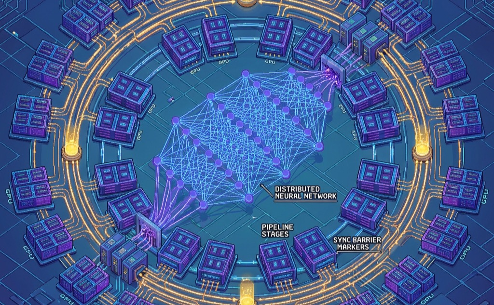

Why Distribution Is Necessary
Distributed Training Systems

Purpose
Why does the linear logic of “more hardware = faster training” collapse at the Bisection Bandwidth Wall?
Distributed training appears simple: split the work across machines and combine the results. But as the Machine Learning Fleet grows, a new physics emerges. Communication costs scale with the number of machines while computation per machine shrinks, until synchronization overhead dominates and adding hardware actively degrades performance. When you train on a single GPU, you optimize for arithmetic intensity; when you train on 10,000 GPUs, you optimize for communication intensity. The scaling ceiling is not a bug to be fixed but a fundamental property of the Reliability Gap and Communication-Computation Ratio: coordinating independent machines requires moving terabytes of state across networks that are orders of magnitude slower than on-chip memory. The art of distributed training is managing this tension—partitioning work to minimize the Coordination Tax, overlapping communication with computation to hide latency, and choosing synchronization strategies that balance consistency against throughput. Without this understanding, organizations waste millions on hardware that sits idle waiting for gradients to arrive, or produce models that never converge because stale updates corrupted the optimization.
Learning Objectives
- Apply the Law of Distributed Efficiency to diagnose when a workload is compute-bound, memory-bound, or communication-bound
- Implement Data Parallelism using gradient synchronization and AllReduce to achieve 85–95 percent efficiency in the linear scaling regime
- Apply Memory-Efficient Data Parallelism (ZeRO, FSDP) to shard optimizer states and parameters, quantifying the communication trade-off
- Design Tensor Parallelism strategies for transformer layers by partitioning matrix operations to exploit high-bandwidth intra-node interconnects
- Construct Pipeline Parallelism schedules with microbatching to minimize bubble overhead and maximize fleet utilization
- Select Synchronization Models (BSP, SSP, Asynchronous) based on the CAP theorem (consistency, availability, partition-tolerance) trade-offs for cluster heterogeneity and convergence
- Architect Hybrid 3D Parallelism configurations that combine Data, Tensor, and Pipeline strategies to train Archetype A (GPT-4/Llama-3) models
Part I built the physical fleet: Compute Infrastructure established the accelerator hierarchy, Network Fabrics wired nodes into a high-bandwidth fabric, and Data Storage completed the infrastructure with storage pipelines that keep the fleet fed. With the physical foundation in place, the algorithmic challenge that defines Part II is splitting a single training job across this hardware.
A single GPU with 100 terabytes of memory and an exaflop of compute would make distributed training unnecessary. Because the laws of physics prevent this, training must be shattered across thousands of independent chips. In the Fleet Stack framework (Introduction), Distributed Training represents the Distribution Layer—the logic that partitions the mathematical workload across the physical fleet.
The physics of the cluster
Before optimizing algorithms, we must understand the physical constraints of the Machine Learning Fleet. The performance of any distributed training job is governed by the iron law of Scale introduced in The fleet law:
\[ T_{\text{step}}(N) = \frac{T_{\text{compute}}}{N} + T_{\text{comm}}(N) - T_{\text{overlap}} \]
The critical term is the Communication-Computation Ratio (\(T_{\text{comm}}/T_{\text{compute}}\)). This ratio determines whether a cluster behaves as a supercomputer or a collection of idling heaters.
- Compute-Bound (Low Ratio): \(T_{\text{compute}} \gg T_{\text{comm}}\). The GPUs spend most of their time multiplying matrices. This is the ideal state, typical for large batch sizes on dense models (like ResNet).
- Communication-Bound (High Ratio): \(T_{\text{comm}} \approx T_{\text{compute}}\). The GPUs spend significant time waiting for gradients or activations to arrive. This is the common state for Large Language Models (LLMs) and Deep Learning Recommendation Models (DLRMs), where parameter synchronization saturates the network.
Systems Perspective 1.1: Connection: The Fleet Stack
Multi-machine training requirements
Three concrete signals indicate when distributed training becomes necessary rather than merely beneficial. First, memory exhaustion occurs when model parameters, optimizer states, and activation storage exceed single-device capacity. For transformer models, this threshold typically occurs around 10–20 billion parameters on current generation GPUs with 40–80 GB memory (Rajbhandari et al. 2020).
Second, unacceptable training duration emerges when single-device training would require weeks or months to converge. Training GPT-3 on a single V100 GPU would require approximately 355 years (Brown et al. 2020), making distributed approaches not optional but essential.
Third, dataset scale exceeds single-machine storage when training data reaches multiple terabytes, as occurs in large-scale vision or language modeling tasks.
Distributed training complexity trade-offs
Distributed training introduces three primary complexity dimensions not present in single-machine scenarios:
- Communication Overhead: The cost of synchronizing gradients. For a model with \(P\) parameters distributed across \(N_{\text{dev}}\) devices, all-reduce operations must transfer approximately \(2P(N_{\text{dev}}-1)/N_{\text{dev}}\) gradient values per step, multiplied by the bytes per gradient element. On commodity networks, this can dominate computation time.
- Fault Tolerance: Requirements increase exponentially with cluster size. A 100-node cluster with 99.9 percent per-node reliability experiences failures every few hours.
- Algorithmic Stability: Large batch sizes from data parallelism affect convergence behavior, requiring learning rate scaling and warmup strategies that single-machine training does not require (Goyal et al. 2017).
Single-machine to distributed transition
The systematic optimization methodology established for single-machine training extends to distributed environments with important adaptations. Profiling must now capture inter-device communication patterns and synchronization overhead in addition to computation and memory metrics. The solution space expands to include data parallelism, model parallelism, pipeline parallelism, and hybrid approaches. Figure 1 visualizes this three-dimensional configuration space.
{kind=link}
The key insight from Figure 1 is that the total accelerator count equals \(d \times t \times p\): each axis is independent, and production systems select a specific coordinate in this cube based on the memory, compute, and bandwidth constraints of the target model and cluster.
Engineering trade-offs: Selecting a parallelism strategy
Choosing the right parallelism strategy is not a matter of preference; it is a constraint satisfaction problem governed by model size (\(M\)), batch size (\(B\)), and interconnect bandwidth. Table 1 quantifies the communication costs for each strategy, revealing which approaches are physically feasible for a given hardware topology.
| Strategy | Communication Pattern | Comm. Volume | Hardware Constraint |
|---|---|---|---|
| Data Parallel (DP) | AllReduce Gradients | \(\propto M\) (Model Size) | Requires high bisection BW |
| Tensor Parallel (TP) | AllReduce Activations | \(\propto B \times L\) (Layers) | Critical: Needs NVLink |
| Pipeline Parallel (PP) | Point-to-Point (P2P) | \(\propto B \times H\) (Hidden) | Low BW (Ethernet is sufficient) |
The bandwidth requirements impose a hard constraint on hardware placement, a principle we call the Jeff Dean Test.
Systems Perspective 1.2: The Jeff Dean Test
Figure 2 formalizes this constraint satisfaction process as a decision tree, showing how model size and hardware topology determine the viable parallelism strategies.
{kind=link}
The decision tree reveals that parallelism strategy selection is not a preference but a consequence of physical constraints. The next question is how these constraints shape the mechanics of a distributed training step on a real cluster.
The Distributed Training Step
The central challenge of distributed training is ensuring that 1,024 GPUs, operating completely independently, agree on a single, mathematically rigorous set of updated weights at the end of each training iteration. The single-machine optimization techniques discussed in the previous section only delay the inevitable; eventually, the computation must span multiple devices.
Definition 1.1: Distributed Training
Distributed Training is a training methodology that partitions the optimization loop across multiple compute nodes—distributing either data, model layers, or individual tensor operations—and coordinates their outputs through synchronized communication primitives to produce a single coherent model.
- Significance (Quantitative): Distributed training becomes necessary when a model’s memory requirement exceeds a single accelerator’s capacity. GPT-3 (175B parameters) requires approximately 350 GB in BF16—more than 4\(\times\) the 80 GB capacity of a single H100. Training it requires at least 5 H100s for model sharding alone, with production runs using thousands to achieve tractable wall-clock time.
- Distinction (Durable): Unlike distributed systems for independent requests (web serving, database reads) where nodes share no mutable state, distributed training requires every node to maintain a consistent view of model parameters—making gradient synchronization a mandatory coordination step, not an optional optimization.
- Common Pitfall: A frequent misconception is that distributed training scales linearly with node count. In practice, communication overhead grows with cluster size and the serial fraction of each step (Amdahl’s Law): with 30 percent of a step’s time spent on synchronization, the theoretical scaling ceiling is \(1/0.30 \approx 3\times\) regardless of how many accelerators are added.
A useful mental model frames these distributed strategies as loop transformations, the same conceptual toolkit that compilers use to optimize sequential code.
Systems Perspective 1.3: Training as Loop Transforms
If we view the training process as a massive loop over data and layers, distributed strategies are simply Loop Transformations applied by the cluster-level compiler:
%%| label: fig-loop-transforms
%%| fig-cap: "**Distributed Strategies as Loop Transformations**. Visualizing how
DP, TP, and PP map to standard compiler optimizations applied at cluster scale."
flowchart LR
subgraph Logical[Logical Training Loop]
direction TB
L1[for epoch in epochs:] --> L2[for batch in data:]
L2 --> L3[for layer in layers:]
L3 --> L4[Compute(layer, batch)]
end
subgraph Physical[Physical Implementation]
direction TB
DP[Data Parallelism] -.->|Unroll Batch Loop| GPU_Batch
TP[Tensor Parallelism] -.->|Vectorize Layer Ops| GPU_Ops
PP[Pipeline Parallelism] -.->|Pipeline Layer Sequence| GPU_Stages
end
Logical ==> Physical- Data Parallelism = Parallel For Loop. We unroll the outer loop (batch dimension) across devices. Each device runs the same code body on different data indices.
- Tensor Parallelism = Vectorization (single instruction, multiple data (SIMD)). We split the inner loops (matrix multiplication) across devices. This is “Cluster-Scale SIMD,” where NVLink acts as the vector register file.
- Pipeline Parallelism = Instruction Pipelining. We split the sequential operations (layers) across devices. Just as a CPU pipeline stages fetch/decode/execute, the cluster stages Layer 1/Layer 2/Layer 3 to keep all ALUs busy.
Optimizing locally before scaling horizontally ensures that distributed systems operate efficiently at each node while adding the coordination mechanisms necessary for multi-machine training. When model complexity and dataset sizes exceed the capacity of individual devices, distributed training1 spreads the workload across multiple machines that coordinate to train a single model.
1 Distributed Training: Google’s DistBelief (2012) was the first framework to train neural networks across thousands of machines, but its parameter server architecture created bandwidth bottlenecks at central nodes. This limitation drove the shift to decentralized AllReduce patterns in successors like Horovod and PyTorch DDP, where communication cost scales as \(2(N-1)/N\) per worker rather than concentrating at a single server.
Coordination relies on consensus protocols and synchronization primitives that keep parameter updates consistent across nodes. Basic barrier synchronization suffices for research, but production deployments require fault tolerance, checkpointing, and recovery mechanisms. Fault Tolerance and Reliability examines these reliability engineering challenges, including how to handle node failures without losing days of training progress.
The progression from single-device to distributed training follows a systematic scaling path where each stage builds on the previous level’s challenges. Single-GPU training requires only local memory management and straightforward forward/backward passes, establishing the baseline computational patterns. Scaling to multiple GPUs within a single node introduces high-bandwidth communication requirements, typically handled through NVLink2 or PCIe connections with NCCL3 optimization while preserving the single-machine simplicity of fault tolerance and scheduling.
2 NVLink: NVIDIA’s point-to-point GPU interconnect delivers 600–900 GB/s bidirectional bandwidth, roughly 10\(\times\) InfiniBand HDR. This bandwidth gap is why tensor parallelism – which requires AllReduce on every layer – is confined to intra-node communication, while pipeline and data parallelism tolerate the slower inter-node fabric.
3 NCCL (NVIDIA Collective Communications Library): Released in 2015, NCCL automatically selects ring, tree, or hierarchical AllReduce algorithms based on detected hardware topology – NVLink within nodes, InfiniBand across nodes. This topology-aware routing is critical because a naive single-ring AllReduce across 128 nodes would force all traffic through the slowest inter-node link, collapsing bandwidth utilization to under 30 percent.
The leap to multi-node distributed training introduces new complexity dimensions: network communication overhead, fault tolerance requirements, and cluster orchestration challenges. Each scaling stage compounds the previous challenges as communication bottlenecks intensify, synchronization overhead grows, and failure probability increases. Practitioners should therefore optimize single-GPU performance before scaling to ensure efficient resource utilization at each level.
Systems Perspective 1.4: Distributed Training Complexity
The distributed training process itself involves splitting the dataset into non-overlapping subsets, assigning each subset to a different GPU, and performing forward and backward passes independently on each device. Once gradients are computed on each GPU, they are synchronized and aggregated before updating the model parameters, ensuring that all devices learn in a consistent manner. The coordinated flow of data splitting, computation, and gradient synchronization (Figure 3) forms the foundation of distributed training, with each GPU processing its batch independently before synchronization brings all gradients together.
{kind=link}
Distributed training systems must orchestrate multi-machine computation by splitting the work, managing communication between machines, and maintaining synchronization throughout training. The AllReduce operations that aggregate gradients across devices consume 10–40 percent of total training time even with optimal implementation, and this overhead compounds as systems scale.
Four approaches address different constraint regimes. Data parallelism divides the training data across machines while each maintains a full model copy, making it the simplest approach for models that fit in single-device memory. Model parallelism splits the model itself across devices when parameters exceed single-device memory. Pipeline parallelism partitions models into sequential stages that process microbatches concurrently, improving utilization over naive model parallelism. Hybrid approaches integrate multiple strategies, enabling training at scales where any single approach would fail. Each strategy becomes necessary only after its predecessor reaches a physical ceiling.
Self-Check: Question
What structural property most fundamentally distinguishes distributed training from a stateless distributed web service that handles independent HTTP requests across many replicas?
- Distributed training requires every worker to maintain a consistent view of mutable model parameters, so gradient synchronization becomes a mandatory coordination step rather than an optional optimization
- Distributed training always uses strictly more machines than the web service, because neural networks never run on small clusters
- Distributed training is compute-bound while web serving is always latency-bound, so the two systems cannot share hardware
- Distributed training cannot tolerate any node failures, because synchronization protocols physically prevent checkpoint-based recovery
Order the following phases of one synchronous distributed training iteration: (1) synchronize gradients across workers, (2) update local parameters using the aggregated gradient, (3) compute forward and backward passes on each worker’s shard, (4) assign each worker a distinct shard of the global minibatch.
The chapter frames distributed strategies as loop transformations borrowed from compiler optimization. Which transformation corresponds to tensor parallelism?
- Unrolling the outer batch loop across devices so each worker processes a disjoint data slice
- Pipelining a sequence of model layers across stages, with microbatches flowing through in an overlapped schedule
- Vectorizing the inner matrix-multiplication operations across devices, so NVLink acts as a cluster-scale vector register file
- Replicating the entire computation across machines so that each worker produces an independent, redundant result
A 1,024-GPU BSP training job reports 180 ms average per-worker compute time but observed per-step latency averaging 340 ms with a p99 of 720 ms, and cluster MFU is poor. Explain the likely mechanism and why it grows worse as cluster size increases.
A distributed training job begins hanging indefinitely during AllReduce, but only on batches that contain variable-length sequences and conditional computation paths (mixture-of-experts routing). Workers report no CUDA errors — they are simply waiting. Which failure mode best matches this signature?
- Bandwidth underutilization caused by choosing a tree AllReduce algorithm on a large gradient tensor, which is a throughput loss rather than a deadlock
- Workers disagreeing on which tensors should participate in the current collective, so some wait forever on messages that others never enqueue
- Pipeline bubbles created by uneven stage depth, which is a utilization problem visible on all batches rather than only on variable-length ones
- Optimizer drift caused by asynchronous parameter servers, which is a convergence pathology that does not produce hangs
Data Parallelism
The simplest approach gives each GPU a complete, identical copy of the model and assigns it a distinct slice of the data. Data parallelism is the natural starting point for distributed training because it requires minimal changes to the single-device training loop.
Definition 1.2: Data Parallelism
Data Parallelism is a distributed training strategy in which each worker holds a complete replica of the model and processes an independent shard of the minibatch, then synchronizes gradient updates via AllReduce so all replicas apply identical parameter changes each step.
- Significance (Quantitative): With \(N\) workers each processing batch size \(B\), the effective global batch size is \(N \times B\), scaling throughput linearly while keeping per-worker memory constant. For a 1B-parameter model at 2 GB in BF16, 1,024 workers achieve 1,024\(\times\) the single-GPU throughput—until the gradient AllReduce (2 GB per step at ring-optimal \(2(N-1)/N\) per worker) exceeds backward compute time and creates the communication bottleneck.
- Distinction (Durable): Unlike model parallelism, where parameters are partitioned so no single worker holds the full model, data parallelism requires every worker to have sufficient memory capacity to store the complete model state—making it inapplicable for models larger than a single accelerator’s memory without combining it with model sharding (ZeRO, FSDP).
- Common Pitfall: A frequent misconception is that data parallelism scales indefinitely with worker count. Scaling the effective batch size beyond the critical batch size (roughly 8,192 for ResNet-50, ~4M tokens for LLM pretraining) degrades statistical efficiency, requiring more training steps to reach target loss and eroding the throughput gains from adding more workers.
Each device trains a complete copy of the model using its assigned subset of the data. When training an image classification model on 1 million images using 4 GPUs, each GPU processes 250,000 images while maintaining an identical copy of the model architecture.
Data parallelism is most effective when the dataset size is large but the model size remains manageable, since each device must store a full copy of the model in memory. This method is widely used in image classification and natural language processing, where the dataset can be processed in parallel without dependencies between data samples. When training a ResNet model (He et al. 2016) on ImageNet, each GPU can independently process its portion of images because the classification of one image does not depend on the results of another.
The effectiveness of data parallelism stems from a property of stochastic gradient descent. Gradients computed on different minibatches can be averaged while preserving mathematical equivalence to single-device training. This property enables parallel computation across devices, with the mathematical foundation following directly from the linearity of expectation.
Consider a model with parameters \(\theta\) training on a dataset \(D\). The loss function for a single data point \(x_i\) is \(\mathcal{L}(\theta, x_i)\). In standard SGD with batch size \(B\), the gradient update for a minibatch is: \[ g = \frac{1}{B} \sum_{i=1}^B \nabla_{\theta} \mathcal{L}(\theta, x_i) \]
In data parallelism with \(N\) devices, each device \(k\) computes gradients on its own minibatch \(B_k\): \[ g_k = \frac{1}{|B_k|} \sum_{x_i \in B_k} \nabla_{\theta} \mathcal{L}(\theta, x_i) \]
The global update averages these local gradients: \[ g_{\text{global}} = \frac{1}{N} \sum_{k=1}^N g_k \]
The averaging is mathematically equivalent to computing the gradient on the combined batch \(B_{\text{total}} = \bigcup_{k=1}^N B_k\): \[ g_{\text{global}} = \frac{1}{|B_{\text{total}}|} \sum_{x_i \in B_{\text{total}}} \nabla_{\theta} \mathcal{L}(\theta, x_i) \]
The equivalence shows why data parallelism maintains the statistical properties of SGD training: distributing distinct data subsets across devices, computing local gradients independently, and averaging them approximates the full-batch gradient.
Checkpoint 1.1: Data Parallelism Mechanics
Verify your understanding of how data parallelism distributes work:
The method parallels gradient accumulation, where a single device accumulates gradients over multiple forward passes before updating parameters. Both techniques use the additive properties of gradients to process large batches efficiently. However, data parallelism at scale introduces operational challenges beyond this theoretical equivalence.
Systems Perspective 1.5: Data Parallelism at Scale
- Communication efficiency: AllReduce operations for gradient synchronization become the bottleneck at scale. Production systems use optimized libraries like NCCL with ring or tree communication patterns to minimize overhead
- Fault tolerance: Node failures during large-scale training require checkpoint/restart strategies. Production systems implement hierarchical checkpointing with both local and distributed storage
- Dynamic scaling: Cloud environments require elastic scaling capabilities to add/remove workers based on demand and cost constraints, complicated by the need to maintain gradient synchronization
- Cost optimization: Production data parallelism considers cost per GPU-hour across different instance types and preemptible instances, balancing training time against infrastructure costs
- Network bandwidth requirements: Large models require careful network topology planning as gradient communication can consume 10–50 percent of training time depending on model size and batch size
Production teams typically benchmark communication patterns and scaling efficiency before deploying large distributed training jobs to identify optimal configurations.
Data parallelism implementation
The mathematical foundation above (gradient averaging preserves the statistical properties of SGD) translates into concrete implementation steps. Each step corresponds to a phase in the gradient averaging process, from distributing data subsets to synchronizing the computed gradients.
The process of data parallelism can be broken into a series of distinct steps, each with its role in ensuring the system operates efficiently. Consider Figure 4: it traces the complete workflow from dataset splitting through gradient aggregation, showing how each GPU processes its assigned batch before synchronization brings all gradients together for parameter updates.
{kind=link}
As Figure 4 shows, the critical synchronization point is stage 4: AllReduce must complete before any GPU can update parameters, making gradient communication the dominant bottleneck as the device count grows.
Dataset splitting
The first step in data parallelism involves dividing the dataset into smaller, non-overlapping subsets. This ensures that each device processes a unique portion of the data, avoiding redundancy and enabling efficient utilization of available hardware. With a dataset of 100,000 training examples and 4 GPUs, each GPU receives 25,000 examples per epoch. The DistributedSampler must ensure no overlap between subsets to maintain gradient estimation validity: if two GPUs process the same example, the resulting gradient average would overweight that example, violating the unbiased gradient assumption that makes data parallelism mathematically equivalent to single-device training.
Modern distributed training frameworks handle this distribution automatically through a distributed sampler that implements prefetching and caching mechanisms to ensure data is readily available for processing. The sampler coordinates across workers using the process rank to deterministically partition indices, ensuring reproducibility when the same random seed is used. For a 1.2 million example dataset like ImageNet distributed across 32 GPUs, each GPU processes exactly 37,500 examples per epoch, with the sampler padding the final batch to maintain consistent batch sizes across all workers.
Compute phase: Forward and backward passes
The defining feature of data parallelism is that the computation phase, both forward and backward, is embarrassingly parallel. Each GPU operates as an isolated island, executing an identical copy of the model on a unique micro-batch of data. For our 71B parameter reference model, this isolation is critical: during the forward pass, each GPU independently computes activations for its local batch (micro-batch size 4, sequence length 2048). Without optimization, storing these activations for backpropagation would consume over 200 GB of HBM, exceeding the capacity of even an H100 GPU. Activation checkpointing, which recomputes activations during the backward pass rather than storing them, is mandatory to suppress this footprint to a manageable ~50 GB.
The backward pass mirrors this independence but introduces the system’s primary bottleneck. As the GPU traverses the computation graph in reverse, it computes gradients for every parameter in the model. For a 71B model in FP16, this generates a 350 GB gradient payload per GPU. The computation itself requires zero communication, yet the resulting gradients represent a fractured view of the true loss surface, valid only for the local micro-batch. Before the optimizer step can occur, these local gradients must be aggregated across all \(N\) GPUs to form a valid global gradient. The transition from isolated, high-throughput compute to a massive, global synchronization event defines the rhythm of data parallel training: long periods of silent, intense arithmetic punctuated by bursts of heavy network traffic.
Gradient synchronization
To maintain consistency across the distributed system, the gradients computed by each device must be synchronized. This coordination represents a distributed systems challenge in achieving global consensus while minimizing communication complexity.
Systems Perspective 1.6: Cross-Ref: Communication Algos
When synchronization performance deviates from theoretical expectations, the Fleet Stack framework provides a structured approach to isolating the bottleneck.
Systems Perspective 1.7: Debugging Slow Gradient Synchronization
Infrastructure Layer:
- Topology: 128 nodes, 8 GPUs per node
- Intra-node: NVLink at 600 GB/s bidirectional between GPUs
- Inter-node: InfiniBand HDR at 200 Gb/s (25 GB/s) per port
- Observation: The 3 GB gradient tensor should take \(3 \text{ GB} / 25 \text{ GB/s} = 120\text{ms}\) for a naive transfer, but ring AllReduce should achieve \(2(N-1)/N \times 3 \text{ GB} / 25 \text{ GB/s} \approx 240\text{ms}\) across 128 nodes
Distribution Layer:
- Algorithm choice: Single ring AllReduce across all 1024 GPUs
- Expected behavior: Ring touches every GPU in sequence, dominated by the slowest link (inter-node InfiniBand)
- Diagnosis: A single global ring fails to exploit NVLink within nodes
Serving Layer (Measurement):
- Observed latency: 100 ms (better than naive calculation predicts)
- Bandwidth utilization: Only 60 percent of theoretical InfiniBand throughput
- Network counters: Show congestion on specific switch uplinks
Root Cause Diagnosis: The mismatch between Infrastructure and Distribution layers reveals the problem. The single ring correctly identifies InfiniBand as the bottleneck, but the observed 100 ms (rather than 240 ms) suggests NCCL is already using a hierarchical algorithm internally. The remaining gap comes from switch congestion, not algorithm choice.
Solution: Monitor InfiniBand switch port utilization to identify hot spots. Consider rail-optimized topology (Compute Infrastructure) or hierarchical AllReduce that explicitly partitions intra-node (NVLink) from inter-node (InfiniBand) communication. The 40 ms remaining gap likely represents achievable optimization through better network provisioning rather than algorithm changes.
The analysis demonstrates how the Fleet Stack layers interact: Physical constraints (bandwidth) bound Operational choices (algorithm), which manifest in Service metrics (latency). Debugging requires examining all three layers, not just tuning one in isolation.
Figure 5 contrasts three high-level synchronization topologies: the centralized Parameter Server, the bandwidth-optimal Ring AllReduce, and the low-latency Tree AllReduce. While Parameter Servers were common in early distributed systems, modern synchronous training relies almost exclusively on AllReduce variants to maximize bandwidth utilization across dense GPU clusters.
{kind=link}
The trade-off visible in Figure 5 is between bandwidth and latency: Ring AllReduce achieves optimal bandwidth utilization with \(O(N)\) latency steps, while Tree AllReduce reduces latency to \(O(\log N)\) at the cost of potential congestion near the root. Modern frameworks such as NCCL select between these topologies automatically based on message size and cluster topology.
Synchronization models
Distributed training systems operate under explicit synchronization models that govern when workers observe each other’s updates. The choice of model determines whether the system guarantees mathematical equivalence to single-device training or trades consistency for throughput.
The default model, Bulk Synchronous Parallel (BSP)4 (Valiant 1990), requires all workers to complete their local computation in forward and backward passes, synchronize gradients through a barrier with AllReduce, and then simultaneously update parameters.
4 Bulk Synchronous Parallel (BSP): Introduced by Leslie Valiant in 1990 as a “bridging model” between hardware and software for parallel computation. BSP divides work into supersteps – compute, communicate, barrier – guaranteeing mathematical equivalence to sequential execution. The cost: iteration time equals the slowest worker’s time, and at 1,000 GPUs with 1 percent straggler probability per device, roughly 10 GPUs straggle every step, making the barrier increasingly expensive.
BSP provides strong guarantees where every worker sees identical parameter values at each step, ensuring mathematical equivalence to single-device training. The cost is that the slowest worker determines iteration time, creating the straggler problem.
Stale Synchronous Parallel (SSP) relaxes this constraint by allowing workers to proceed up to \(s\) iterations ahead of the slowest worker before blocking. This bounds staleness while reducing synchronization delays. SSP requires careful learning rate tuning since workers compute gradients on slightly different parameter versions. The bounded staleness guarantee with \(s\) typically set to 2-5 provides a middle ground between BSP’s strong consistency and fully asynchronous approaches.
Asynchronous SGD eliminates synchronization barriers entirely as workers update parameters independently. This maximizes hardware utilization but introduces gradient staleness that can degrade convergence. When a worker computes gradients on parameters that are already \(\tau\) steps stale, the effective learning rate decreases. Compensation techniques include learning rate scaling with \(\eta' = \eta / \sqrt{\tau}\) or momentum correction.
The key trade-offs across synchronization models are summarized here, and Figure 6 illustrates how each strategy schedules work across workers over time.
Napkin Math 1.1: Synchronization Model Trade-offs
| Model | Consistency | Throughput | Convergence | Use Case |
|---|---|---|---|---|
| BSP | Strong | Bounded by slowest worker | Equivalent to single-GPU | Final training runs, reproducibility |
| SSP | Bounded staleness | Higher than BSP | Near-equivalent with tuning | Hyperparameter search |
| Async | Weak | Maximum | Degraded, requires compensation | Large heterogeneous clusters |
{kind=link}
The choice of synchronization model directly affects both system throughput and model convergence. Production systems typically use BSP for final training runs to ensure reproducibility, while exploring SSP or async approaches during hyperparameter search where exact reproducibility is less critical.
Barrier semantics and failure modes
AllReduce operations implement implicit barriers where no worker can proceed until all workers have contributed their gradients. This coupling creates failure modes absent from single-device training.
Worker failures during AllReduce cause all other workers to block indefinitely while waiting for the missing contribution. Without timeout mechanisms, the entire training job hangs rather than failing cleanly. Production systems implement watchdog timers typically set to 5–10 minutes to detect and terminate stuck jobs.
Gradient mismatches occur when workers disagree on which tensors to synchronize due to conditional computation paths or dynamic batching. AllReduce operations may block waiting for tensors that some workers never send. This commonly occurs with variable-length sequences in NLP models, dynamic computation graphs, and mixture-of-experts with different routing decisions.
Straggler-induced delays arise because iteration time equals the slowest worker’s time plus synchronization overhead. A single slow worker, whether due to thermal throttling, network congestion, or OS jitter, delays all workers and reduces cluster utilization. At 1000 GPUs with 1 percent probability of straggler per GPU per step, approximately 10 GPUs straggle every iteration.
Production systems address these issues through timeouts, heartbeat monitoring, and elastic training mechanisms. Fault Tolerance and Reliability provides comprehensive coverage of failure detection, checkpointing strategies, and recovery mechanisms that enable training jobs to complete despite inevitable hardware failures.
Parameter updating
After gradient aggregation, each device independently updates model parameters using the chosen optimization algorithm such as SGD with momentum or Adaptive Moment Estimation (Adam). This decentralized update strategy enables efficient parameter updates without requiring a central coordination server. Since all devices have identical gradient values after synchronization, they perform mathematically equivalent updates to maintain model consistency across the distributed system.
In a system with 8 GPUs training a ResNet model, each GPU computes local gradients based on its data subset. After gradient averaging via ring all-reduce, every GPU has the same global gradient values. Each device then independently applies these gradients using the optimizer’s update rule. With SGD and learning rate 0.1, the update becomes weights = weights - 0.1 * gradients. This process maintains mathematical equivalence to single-device training while enabling distributed computation.
The cycle of splitting data, computing gradients, synchronizing results, and updating parameters repeats for each batch. Modern frameworks automate this cycle, allowing engineers to focus on model architecture and hyperparameter tuning rather than distributed computing logistics.
Trade-offs: The communication wall
Data parallelism is the default strategy for a reason: it scales throughput linearly with device count, provided the model fits in memory and communication is not the bottleneck. However, it hits a hard ceiling defined by the Communication-Computation Ratio.
Data parallelism offers three principal advantages. First, throughput scales linearly for compute-bound models: scaling ResNet-50 on ImageNet from 1 to 256 GPUs yields near-linear speedup because the gradient exchange is small relative to the compute time. Second, the model architecture remains unchanged; the framework wraps the model in a data-parallel container that intercepts backward-pass hooks to trigger gradient synchronization automatically. Third, utilization remains high because, unlike model parallelism, there are no pipeline bubbles—all GPUs work on the forward and backward pass simultaneously.
Three hard ceilings limit these advantages. The memory wall requires every GPU to hold a full copy of the model parameters, gradients, and optimizer states; for a 71B parameter model, this demands more than 1 TB of memory per GPU, which is physically impossible on current hardware without ZeRO sharding. The bandwidth wall emerges as \(N\) grows: the AllReduce cost \(2(N-1)/N \times M/B\) eventually dominates, and for large language models gradient synchronization can consume more than 50 percent of the step time, collapsing efficiency. The batch size trap compounds the problem: scaling to thousands of GPUs requires increasing the global batch size (\(B_{global} = N \times B_{local}\)), and eventually the Critical Batch Size is reached, where adding more data per step yields diminishing returns in convergence.
A concrete scaling experiment reveals how these ceilings manifest in practice.
Napkin Math 1.2: GPT-2 Data Parallel Scaling
Single GPU Baseline
- Batch size: 16 (with gradient checkpointing, fits in 32 GB)
- Time per step: 1.8 seconds
- Time to 50K steps: 25 hours
8 GPUs: Single Node with NVLink
Configuration:
- Per-GPU batch: 16, global batch: 128
- Gradient synchronization: 6.0GB @ 900 GB/s (NVLink) \(\approx\) 6.7ms
Performance results:
- Computation: 1800ms per step
- Communication: 6.7ms per step
- Total: 1807ms per step
- Speedup (throughput): 8.0\(\times\)
- Parallel efficiency: 100 percent
Training time: 25 hours ÷ (8.0 / 8) = 25.1 hours
32 GPUs: 4 Nodes with Commodity Network
Configuration:
- Per-GPU batch: 16, global batch: 512
- Intra-node communication: 6.7ms (NVLink)
- Inter-node communication: 6.0GB @ 1.25 GB/s (10GbE) \(\approx\) 4800ms
Performance results:
- Computation: 1800ms (27 percent of time)
- Communication: 4807ms (73 percent of time)
- Total: 6607ms per step
- Speedup (throughput): 8.7\(\times\) faster → 91.8 hours
- Parallel efficiency: 27 percent
Communication dominates and becomes the bottleneck.
A better approach uses 8 GPUs with gradient accumulation to avoid the inter-node bottleneck entirely.
Napkin Math 1.3: Gradient Accumulation Speedup
The Math:
- Effective Batch Size: 8 GPUs \(\times\) batch 16 \(\times\) 4 accumulation steps = 512.
- Communication Overhead: With 4-step accumulation, we AllReduce once every 4 steps.
- Overhead = \(5 \text{ ms} / (4 \times 180 \text{ ms}) \approx\) 0.09 percent.
- Training Duration: Total time reduces to 3.1 hours.
- Total Cost: 3.1 hrs \(\times\) $128/hr = $400.
The Systems Insight: Gradient accumulation saves $11,345 (97 percent) by concentrating computation where bandwidth is abundant (NVLink within the node) and minimizing the frequency of synchronization. When the network is slow, do not scale out—scale the batch size locally.
The full configuration is: 8 GPUs \(\times\) batch 16 \(\times\) 4 accumulation steps = 512 effective batch, with communication overhead 6.666666666666667ms ÷ (4 \(\times\) 1800ms) = 0.09 percent. Training time falls to 3.1 hours, costing USD 400 vs. USD 3,021 for 32 GPUs—a USD 11,345 savings (97 percent reduction) for only 1 hour longer training.
Four insights emerge. NVLink enables efficient scaling within single nodes (97 percent efficiency), while inter-node communication kills efficiency (dropping to 13 percent). Gradient accumulation beats naive scaling for memory-bound models, so the sweet spot for GPT-2 is 8 GPUs per node with gradient accumulation, not naive scaling to 32+ GPUs. OpenAI’s GPT-2 paper reports training on 32 V100s across 4 nodes using optimized communication (likely gradient accumulation combined with pipeline parallelism), not pure data parallelism.
Memory-efficient data parallelism: ZeRO and FSDP
The memory constraints of data parallelism motivate a family of techniques that shard memory state across workers while preserving the simplicity of data parallel training. ZeRO (Zero Redundancy Optimizer)5 (Rajbhandari et al. 2020) and its PyTorch implementation FSDP (Fully Sharded Data Parallel) (Zhao et al. 2023) enable training models that would otherwise require model parallelism.
5 ZeRO (Zero Redundancy Optimizer): Published by Microsoft Research in 2019, ZeRO partitions optimizer states, gradients, and optionally parameters across workers instead of replicating them. At ZeRO Stage 3 with 64 GPUs, per-device memory drops from 16 bytes/parameter (full replication) to 0.25 bytes/parameter, converting a 112 GB memory footprint into 1.75 GB. The trade-off: FSDP (PyTorch’s ZeRO-3 implementation) adds AllGather and ReduceScatter on every forward and backward layer, introducing 10–25 percent communication overhead that only pays off when memory pressure justifies it.
To understand the scale of memory savings ZeRO provides, consider the concrete memory budget for a modern large language model.
Napkin Math 1.4: ZeRO Memory Savings
Baseline: Standard DDP (Replicated State) Per-Parameter Memory Cost:
- Weights (FP16): 2 bytes
- Gradients (FP16): 2 bytes
- Optimizer State (FP32): 12 bytes (4 master weight + 4 momentum + 4 variance)
- Total: 16 bytes/parameter
Total Memory for 7B Model: \[ M_{\text{total}} = 7 \times 10^9 \times 16 \text{ bytes} \approx \mathbf{112 \text{ GB}} \] Result: OOM on A100-86GB.
Optimization: ZeRO-3 (Fully Sharded) With \(N=64\) GPUs, state is partitioned:
- Weights: \(2/64\) bytes
- Gradients: \(2/64\) bytes
- Optimizer: \(12/64\) bytes
- Total: \(16/64 = 0.25\) bytes/parameter effective storage!
Per-GPU Memory: \[ M_{\text{ZeRO3}} = \frac{112 \text{ GB}}{64} \approx \mathbf{1.75 \text{ GB}} \] Result: Fits easily, leaving ~78 GB for activations (batch size).
ZeRO addresses this redundancy through progressive sharding, as Figure 7 illustrates:
{kind=link}
| Stage | What is Sharded | Memory Reduction | Communication Overhead |
|---|---|---|---|
| ZeRO-1 | Optimizer states only | ~4x | None (same as DDP) |
| ZeRO-2 | + Gradients | ~8x | ReduceScatter replaces AllReduce |
| ZeRO-3 / FSDP | + Parameters | ~\(N\) (linear in workers) | AllGather before each layer |
ZeRO-1 shards optimizer states across GPUs. Each GPU stores only \(1/N\) of the Adam momentum and variance tensors. After gradient AllReduce, each GPU updates only its shard of parameters, then broadcasts updates to other GPUs. Memory savings: optimizer states reduced from \(8N\) bytes/param to \(8\) bytes/param total across cluster.
ZeRO-2 additionally shards gradients. Instead of AllReduce, which leaves full gradients on each GPU, ZeRO-2 uses ReduceScatter so each GPU receives \(1/N\) of the reduced gradients. Memory savings: gradients reduced from \(4N\) bytes/param to \(4\) bytes/param total.
ZeRO-3 and FSDP shard parameters themselves. Each GPU stores only \(1/N\) of the model. Before each layer’s forward pass, parameters are gathered via AllGather; after backward pass, gradients are reduced via ReduceScatter, then parameters are discarded. This achieves maximum memory efficiency at the cost of additional communication that FSDP introduces relative to standard DDP.
Napkin Math 1.5: FSDP Communication Analysis
- Forward pass: AllGather to reconstruct parameters (\(M\) bytes\(\times\) 2 for each layer)
- Backward pass: ReduceScatter for gradients (\(M\) bytes\(\times\) 2 for each layer)
For a model with \(L\) layers, FSDP performs \(2L\) collective operations per training step versus 1 AllReduce for DDP. However, FSDP enables overlapping: while layer \(i\) computes, layer \(i+1\) can prefetch parameters.
Total FSDP communication volume: approximately \(3M\) bytes (vs. \(2M\) for DDP AllReduce), but spread across more operations with overlap opportunities.
The choice between FSDP and DDP depends on model size and memory constraints. Use DDP when the model fits in GPU memory with room for activations, as it has lower overhead. Use FSDP ZeRO-2 when the model barely fits or requires activation checkpointing. Use FSDP ZeRO-3 when model parameters exceed single-GPU memory. For training 70B+ models on 86GB GPUs, combine FSDP with tensor parallelism.
Memory-efficient data parallelism requires careful tuning of sharding strategy (by layer, by transformer block, or flat) and mixed precision settings. The sharding granularity determines the trade-off: finer sharding reduces per-GPU memory but increases communication frequency as more AllGather and ReduceScatter operations must execute per training step.
War Story 1.1: The Linear Scaling Rule Discovery
Self-Check: Question
In standard synchronous data parallelism (for example, PyTorch DDP without ZeRO or FSDP), which component is replicated across workers and which is partitioned?
- The full model (parameters, gradients, optimizer state) is replicated on every worker, while the global minibatch is partitioned into disjoint shards
- The model is partitioned into layer shards across workers, while the minibatch is replicated so every worker processes the same examples
- Both the model and the minibatch are replicated everywhere, and only the optimizer state is partitioned to save memory
- Neither is replicated because all workers share a remote tensor store accessed over the network on each access
A synchronous data-parallel configuration runs 8 GPUs, each processing a local minibatch of 32 examples before a single AllReduce and optimizer step. Because the aggregated gradient averages the per-worker gradients computed on non-overlapping shards, the optimizer update behaves as if it were applied to one batch of 256 examples — this is the run’s effective ____ size, and it is the quantity that governs learning-rate scaling rules.
The chapter’s GPT-2 scaling analysis concluded that 8 GPUs on one NVLink-connected node running gradient accumulation can beat naive scale-out to 32 GPUs across a 10 Gb/s commodity network. Explain the quantitative mechanism that drives this counterintuitive result, naming the relevant bandwidths.
A 7B-parameter model in mixed precision requires about 112 GB of total training state (parameters + gradients + Adam optimizer state) under replicated DDP, so it does not fit on any single 80 GB H100. Under ZeRO-3 or FSDP on 64 GPUs, why does per-GPU memory for this state drop to roughly 1.75 GB?
- Because gradients are eliminated entirely and parameter updates are delegated to a separate central server that holds all state
- Because optimizer state, gradients, and parameters are each partitioned across the 64 workers so each GPU stores only about 1/64 of the replicated state
- Because all tensors are compressed to INT4 during training, which makes subsequent communication essentially free
- Because activations are recomputed on CPU rather than stored on GPU, which removes the parameter memory burden entirely
True or False: If a model already fits comfortably under DDP with spare memory per GPU, switching to FSDP will usually increase throughput because each GPU has less state to move during AllReduce.
Why did modern production systems (Horovod, PyTorch DDP, NCCL-backed collectives) largely replace parameter servers with AllReduce-based topologies for dense synchronous training?
- Parameter servers require no synchronization at all, making them mathematically incorrect for SGD regardless of scale
- AllReduce distributes communication load symmetrically across all workers, whereas a parameter server concentrates dense gradient traffic at a single hotspot whose inbound bandwidth becomes the chokepoint
- Parameter servers can only be used for sparse recommendation workloads and physically cannot represent dense neural-network gradients
- AllReduce removes the need for network-topology awareness, while parameter servers require fine-tuned placement even at small scale
Scaling Efficiency and Convergence
When doubling the number of GPUs yields only 1.5\(\times\) speedup, communication overhead and synchronization barriers have consumed the missing 25 percent of compute budget. Data parallelism revealed the practical mechanics of gradient synchronization and memory sharding, but understanding why scaling efficiency degrades and how convergence changes with parallelism requires a quantitative framework. The metrics and convergence theory in this section apply to all parallelism strategies—data, model, pipeline, and hybrid—governing the fundamental trade-offs between throughput, communication cost, and optimization quality.
Communication overhead represents the primary bottleneck in distributed training systems. AllReduce operations consume 10–40 percent of total training time in data parallel systems, and this overhead grows with cluster size. BERT-Large on 128 GPUs experiences communication overhead reaching 35 percent of total runtime, while GPT-3 scale models experience 55 percent overhead on 1,024 GPUs.
AllReduce complexity depends on two components: latency (\(\alpha\)) and bandwidth (\(\beta\)). Ring AllReduce achieves bandwidth-optimal communication with \((N-1)/N\) utilization, while tree-based approaches offer lower latency at \(O(\log N)\) steps. The choice depends on message size: tree algorithms win for latency-dominated small messages, ring algorithms win for bandwidth-dominated large gradients. Modern implementations like NCCL use hierarchical algorithms that combine tree latency within nodes and ring bandwidth between nodes. Collective Communication provides detailed algorithm analysis, including complexity formulas, hierarchical variants, and topology-aware optimizations for production-scale collective operations.
Interconnect selection determines whether large-scale deployments remain compute-bound or collapse into communication-bound regimes.
The bandwidth requirements for efficient distributed training are substantial, particularly for transformer models. Efficient systems require 100–400 GB/s aggregate bandwidth per node for transformer architectures. BERT-Base (110M parameters) requires approximately 440 MB of gradient synchronization per iteration in FP32, while BERT-Large (340M parameters) requires approximately 1.4 GB. Across 64 GPUs, these synchronization demands require 100-200 GB/s sustained bandwidth for sub-50 ms synchronization latency. Language models with 71B parameters require 700 GB/s aggregate bandwidth to maintain 80 percent parallel efficiency, necessitating InfiniBand HDR or equivalent interconnects.
Synchronization frequency presents a trade-off between communication efficiency and convergence behavior. Gradient accumulation reduces synchronization frequency but increases memory requirements and may impact convergence. Synchronizing every 4 steps reduces communication overhead by 60 percent while increasing memory usage by 3\(\times\) for gradient storage. Asynchronous methods eliminate synchronization costs entirely but introduce staleness that degrades convergence by 15–30 percent for large learning rates.
The physics of scaling: Amdahl’s Law with communication
Just as the Iron Law of Processor Performance governs single-thread execution, distributed training is governed by an extended version of Amdahl’s Law that explicitly accounts for communication overhead. The time to complete one training step on \(N\) devices is not simply \(T_{single} / N\), but is constrained by the sequential nature of synchronization.
Figure 8 visualizes this divergence from ideal linear scaling as the Scaling Tax—a direct consequence of the Scaling Efficiency Bound (Principle \(\ref{nte-scaling-efficiency}\)). It shows how communication overhead (\(r\)) acts as a drag on performance, creating a “Communication Wall” where adding more GPUs yields diminishing returns.
{kind=link}
We can formalize the Distributed Step Time Law (Principle \(\ref{nte-distributed-step-time}\)) and map it directly to our iron law variables:
\[ T_{\text{step}}(N) = \underbrace{\frac{T_{\text{compute}}}{N}}_{\text{FLOPS Term}} + \underbrace{T_{\text{comm}}(N)}_{\text{Bandwidth Term}} - T_{\text{overlap}} \]
Where:
- FLOPS Term (\(T_{\text{compute}}\)): The total computation required for the batch. In an ideal world, this scales perfectly with \(N\).
- Bandwidth Term (\(T_{\text{comm}}\)): The time spent moving data. This is governed by the Iron Law: \(Time = \frac{Data}{Bandwidth}\). For Ring AllReduce, this term is \(\frac{2(N-1)}{N} \times \frac{M}{B_{net}}\), where \(M\) is model size and \(B_{net}\) is network bandwidth.
- Overlap (\(T_{\text{overlap}}\)): The portion of communication hidden behind computation.
The distributed step time equation leads to the Scaling Efficiency metric:
This is the Scaling Efficiency Bound (Principle \(\ref{nte-scaling-efficiency}\)): perfect linear scaling (\(\eta = 1.0\)) is a theoretical limit, not a practical target. Real systems achieve \(\eta = 0.85\)–\(0.95\) at moderate scale and degrade further as \(N\) grows. The gap between \(\eta = 1.0\) and the achieved efficiency is the communication tax—the price of coordination.
\[ \text{Efficiency}(N) = \frac{T_{\text{compute}}}{N \times T_{\text{step}}(N)} = \frac{1}{1 + \frac{N(T_{\text{comm}}(N) - T_{\text{overlap}})}{T_{\text{compute}}}} \]
The equation reveals the Scaling Wall: as \(N\) increases, the compute term (\(T_{\text{compute}}/N\)) shrinks, but the communication term (\(T_{\text{comm}}\)) remains constant or grows. Eventually, the denominator is dominated by communication, driving efficiency toward zero. Beyond wall-clock time, this communication overhead imposes an energy tax that scales with physical distance between devices.
Systems Perspective 1.8: The Energy Tax of Scale
At the scale of 10,000 GPUs, the “Energy Tax” of moving gradients becomes a multi-megawatt problem. Communication-Computation Overlap is therefore a necessity for making large-scale AI economically and physically sustainable, not merely a performance optimization. Every bit not moved is a joule saved.
Scaling efficiency follows predictable patterns across different GPU counts. In the linear scaling regime of 2-32 GPUs, systems typically achieve 85–95 percent parallel efficiency because communication overhead remains minimal. The communication bound regime emerges at 64-256 GPUs, where efficiency drops to 60-80 percent even with optimal interconnects. Beyond 512 GPUs, coordination overhead becomes dominant and limits efficiency to 40-60 percent due to collective operation latency.
Hardware selection critically impacts these scaling characteristics. NVIDIA DGX systems with NVLink achieve 600 GB/s bisection bandwidth, enabling 90 percent parallel efficiency up to 8 GPUs per node. Multi-node scaling requires InfiniBand networks, where EDR at 100 Gbps supports efficient training up to 64 nodes, while HDR at 200 Gbps enables scaling to 256+ nodes with greater than 70 percent efficiency.
The efficiency metrics directly influence the choice of parallelism strategy. Data parallelism works well in the linear scaling regime but becomes communication-bound at scale. Model parallelism addresses memory constraints but introduces sequential dependencies that limit efficiency. Pipeline parallelism reduces device idle time but introduces complexity in managing microbatches. The optimal strategy depends on which constraint—memory, bandwidth, or synchronization—dominates the target workload.
Convergence guarantees for distributed optimization
Hardware efficiency metrics govern throughput, but convergence theory determines whether distributed training reaches the same solution quality as single-device training. Parallelism affects optimization convergence in three ways: convergence rate changes with batch size, adding workers yields diminishing returns beyond the critical batch size, and learning rates must scale with batch size.
Convergence rate for synchronous data parallel SGD
The fundamental convergence result for distributed SGD provides the theoretical basis for understanding parallel training. For a loss function \(\mathcal{L}(\theta)\) with \(L_s\)-Lipschitz gradients (smoothness condition) and variance-bounded stochastic gradients \(\mathbb{E}[\|g_i - \nabla \mathcal{L}(\theta)\|^2] \leq \sigma^2\), synchronous data parallel SGD with \(N\) workers achieves the following convergence rate.
Theorem 1.1: Convergence Rate for Distributed SGD
\[ \mathbb{E}[\mathcal{L}(\theta_M)] - \mathcal{L}^{\star} \leq \underbrace{\frac{L_s \|\theta_0 - \theta^{\star}\|^2}{2M}}_{\text{optimization error}} + \underbrace{\frac{\eta L_s \sigma^2}{2Nb}}_{\text{variance floor}} \]
where \(\eta\) is the learning rate, \(L_s\) is the smoothness constant, \(\mathcal{L}^{\star}\) is the optimal loss value, \(\theta^{\star}\) is an optimal parameter vector, and \(\sigma^2\) is the gradient variance. The effective convergence rate is \(O(1/\sqrt{NbM})\) when the learning rate is tuned optimally as \(\eta = O(\sqrt{Nb/M})\).
The theorem reveals several important insights. First, the variance floor decreases linearly with the number of workers \(N\), explaining why distributed training can achieve the same final loss with fewer iterations. The effective batch size is \(B = Nb\), so \(N\) workers with batch size \(b\) each behave equivalently to a single worker with batch size \(Nb\). Second, the convergence rate \(O(1/\sqrt{NbM})\) shows that workers, local batch size, and iteration count jointly determine statistical progress, assuming infinite bandwidth. This is the statistical efficiency of distributed training, distinct from hardware efficiency.
However, the theorem assumes perfect synchronization (BSP). When workers proceed at different rates or use stale gradients, convergence guarantees degrade, as we examine next.
Staleness impact: BSP versus SSP versus ASP
Synchronization models fundamentally affect convergence behavior. The staleness parameter \(\tau\) quantifies how many iterations behind a gradient may be when applied to parameters.
Definition 1.3: Gradient Staleness
Gradient Staleness (\(\tau\)) is the number of parameter updates that occur between the time a gradient is computed and the time it is applied to the global model state.
- Significance (Quantitative): It represents the Synchronization Error in distributed optimization. Increasing \(\tau\) can improve throughput by reducing barrier waits (\(L_{\text{lat}}\)), but it typically degrades the Rate of Convergence, requiring more operations (\(O\)) to reach the same accuracy.
- Distinction (Durable): Unlike Network Latency, which is a physical delay, Staleness is an Algorithmic Offset that arises from the choice of synchronization protocol (e.g., ASP, SSP).
- Common Pitfall: A frequent misconception is that Staleness is “always bad.” In reality, it is a Throughput-Convergence Trade-off: for some large-scale workloads, allowing bounded staleness is the only way to keep thousands of GPUs in use.
The convergence behavior differs across these models in ways that directly affect training cost and solution quality.
In Bulk Synchronous Parallel (BSP, \(\tau = 0\)), all workers compute gradients on the same parameter version, then synchronize via barrier before updating. This guarantees mathematical equivalence to single-device training with larger batch size, an optimal convergence rate of \(O(1/\sqrt{NbM})\), and no hyperparameter adjustment beyond batch size scaling.
Stale Synchronous Parallel (SSP, \(\tau \leq s\)) relaxes the barrier by allowing workers to proceed up to \(s\) iterations ahead of the slowest worker. The convergence rate degrades to:
\[ \mathbb{E}[\mathcal{L}(\theta_M)] - \mathcal{L}^{\star} \leq O\left(\frac{1}{\sqrt{NbM}}\right) + O\left(\frac{s^2 \eta^2 L_s^2}{Nb}\right) \]
The second term represents the staleness penalty. For bounded staleness \(s\), this penalty can be controlled by reducing the learning rate: \(\eta' = \eta / \sqrt{1 + s}\). Typical production systems use \(s \in \{2, 4, 8\}\), accepting 5–15 percent convergence degradation for 20–40 percent throughput improvement on heterogeneous clusters.
Asynchronous SGD (ASP, \(\tau = \infty\)) eliminates waiting entirely: workers update parameters immediately. While this maximizes throughput, convergence degrades:
\[ \mathbb{E}[\mathcal{L}(\theta_M)] - \mathcal{L}^{\star} \leq O\left(\frac{1}{\sqrt{M}}\right) + O\left(\bar{\tau}^2 \eta^2 L_s^2\right) \]
where \(\bar{\tau}\) is the average staleness. The staleness penalty now scales with the square of average delay, and critically, the variance reduction from \(N\) workers disappears in the dominant term. Compensation techniques include:
- Learning rate decay: \(\eta' = \eta / \sqrt{1 + \bar{\tau}}\) reduces the staleness penalty but slows convergence
- Momentum correction: Adjust momentum to account for delayed updates
- Gradient clipping: Prevent stale gradients with large magnitudes from destabilizing training
Table 2 summarizes the convergence properties of each synchronization model.
| Model | Staleness | Convergence Rate | Variance Reduction | Best For |
|---|---|---|---|---|
| BSP | \(\tau = 0\) | \(O(1/\sqrt{NbM})\) | Full (\(1/N\)) | Final training, reproducibility |
| SSP | \(\tau \leq s\) | \(O(1/\sqrt{NbM}) + O(s^2\eta^2 L_s^2 / Nb)\) | Partial | Heterogeneous clusters |
| ASP | \(\tau = \infty\) | \(O(1/\sqrt{M}) + O(\bar{\tau}^2\eta^2 L_s^2)\) | None | Maximum throughput, early exploration |
Learning rate scaling rules
When increasing the effective batch size through data parallelism, the learning rate must be adjusted to maintain convergence quality. Two primary scaling rules have emerged from both theory and practice.
The linear scaling rule (Goyal et al. 2017) states that when the batch size is multiplied by \(k\), the learning rate should also be multiplied by \(k\):
\[ \eta_{\text{large}} = k \cdot \eta_{\text{base}} \]
This rule follows from the observation that with batch size \(B\), the expected gradient update magnitude is \(\eta \cdot \mathbb{E}[g]\). With batch size \(kB\), the gradient variance decreases by factor \(k\), so multiplying \(\eta\) by \(k\) maintains the same expected update magnitude while reducing noise. The linear scaling rule works well for moderate batch sizes (up to 8K-16K for ImageNet, up to 32K for BERT) and requires a warmup period where the learning rate gradually increases from a small value to the target over the first 5-10 percent of training.
War Story 1.2: Linear Scaling Warmup
\[ \eta_t = \eta_{\text{base}} + \frac{t}{W}(k \cdot \eta_{\text{base}} - \eta_{\text{base}}) \quad \text{for } t < W \]
The warmup period allows the model to reach a region of the loss landscape where large learning rates are stable. Typical warmup lengths are 5 epochs for ImageNet or 10K steps for language models.
The square root scaling rule applies when batch sizes grow so large that linear scaling fails:
\[ \eta_{\text{large}} = \sqrt{k} \cdot \eta_{\text{base}} \]
The more conservative square root rule is motivated by the observation that gradient noise (not just magnitude) affects optimization dynamics. The square root rule better preserves the signal-to-noise ratio of gradient updates. Empirically, square root scaling becomes necessary when batch sizes exceed the critical batch size discussed later.
For extreme batch sizes (32K–1M), layer-wise adaptive learning rate scaling (LARS) (You et al. 2017) and its Adam variant LAMB (You et al. 2020) automatically adjust learning rates per layer based on the ratio of weight norm to gradient norm:
\[ \eta_l = \eta_{\text{global}} \cdot \frac{\|w_l\|}{\|g_l\| + \lambda\|w_l\|} \]
Layer-wise scaling prevents layers with small weights from receiving disproportionately large updates. LAMB enabled BERT training with batch sizes up to 64K while maintaining convergence quality.
Critical batch size: When does parallelism hurt?
A fundamental question in distributed training is: when does adding more workers stop helping? The critical batch size \(B^{*}\) marks the transition point beyond which increasing batch size yields diminishing returns in convergence per sample seen.
Definition 1.4: Critical Batch Size
Critical Batch Size (\(B^{*}\)) is the batch size at which the Gradient Noise Scale equals the Gradient Signal Scale.
- Significance (Quantitative): It marks the transition point for Parallel Scaling Efficiency. Below \(B^{*}\), increasing the batch size linearly improves the convergence per step. Above \(B^{*}\), larger batches yield diminishing returns, requiring proportionally more samples (\(D\)) to reach the same loss.
- Distinction (Durable): Unlike the Memory-Limited Batch Size (determined by \(\text{BW}\) and capacity), the Critical Batch Size is an Algorithmic Property of the model and dataset.
- Common Pitfall: A frequent misconception is that training can be speeded up indefinitely by adding GPUs. In reality, \(B^{*}\) defines the Physical Ceiling for Data Parallelism: adding workers beyond this point wastes energy and compute (\(O\)) without reducing total training time (\(T\)).
The critical batch size can be estimated as:
\[ B^{*} \approx \frac{\text{tr}(\Sigma)}{\|\nabla \mathcal{L}(\theta)\|^2} \]
where \(\text{tr}(\Sigma)\) is the trace of the gradient covariance matrix (total gradient variance) and \(\|\nabla \mathcal{L}(\theta)\|^2\) is the squared gradient norm (signal strength). Intuitively, \(B^{*}\) is the batch size at which averaging reduces gradient variance to the level of the true gradient magnitude.
Empirical critical batch sizes vary by task and scale over three orders of magnitude:
- ImageNet ResNet-50: \(B^{*} \approx 8,000 - 16,000\)
- BERT-Large pretraining: \(B^{*} \approx 32,000 - 65,000\)
- GPT-3 scale models: \(B^{*} \approx 1,000,000 - 4,000,000\)
The scaling law regime exhibits three distinct behaviors:
Below critical (\(B < B^{*}\)): Linear scaling holds. Doubling batch size halves iterations to reach target loss. Hardware efficiency determines throughput.
At critical (\(B \approx B^{*}\)): Optimal trade-off point. Maximum samples-per-second efficiency.
Above critical (\(B > B^{*}\)): Diminishing returns. Doubling batch size requires \(>2 \times\) more samples total. Additional workers provide throughput but not sample efficiency.
Figure 9 illustrates this relationship between batch size and training efficiency.
{kind=link}
The critical batch size has important implications for distributed training system design:
Worker count selection: Adding workers beyond \(B^{*}/b\) (where \(b\) is per-worker batch size) improves throughput but not sample efficiency. For cost optimization, this may still be worthwhile if the marginal cost of additional workers is low.
Learning rate schedule: Above \(B^{*}\), aggressive learning rate warmup becomes essential. The loss landscape near initialization may not support the large updates that linear scaling would produce.
Communication trade-offs: Above \(B^{*}\), the reduced benefit of larger batches makes communication overhead relatively more costly. This strengthens the case for gradient compression or asynchronous methods.
Checkpoint 1.2: Scaling Decisions
Worked example: Convergence comparison for 8 versus 64 workers
To illustrate these concepts concretely, consider scaling from 8 to 64 workers when training a transformer language model with baseline batch size \(b = 32\) per worker.
Napkin Math 1.6: Scaling from 8 to 64 Workers
8 Workers (BSP)
- Effective batch size: \(B = 8 \times 32 =\) 256
- Learning rate: \(\eta =\) 8 \(\times \eta_{\text{base}}\) (linear scaling with warmup)
- Expected iterations: \(100K / 8 =\) 12.5K iterations
- Convergence: Reaches target perplexity in 12.8K iterations (97 percent efficiency)
- Communication overhead: 15 percent (NVLink intra-node)
- Wall-clock speedup: \(100K \times 1.0 / (12.8K \times 1.15) =\) 6.8\(\times\)
64 Workers (BSP)
- Effective batch size: \(B = 64 \times 32 =\) 2,048
- Learning rate (\(N =\) 64 workers): \(\eta = N \times \eta_{\text{base}}\) (if \(B < B^*\)) or \(\eta = \sqrt{N} \times \eta_{\text{base}}\) (if \(B > B^*\))
- Assuming \(B^* \approx\) 4,000 (below critical): Linear scaling applies
- Expected iterations: \(100K / 64 =\) 1.56K iterations
- Convergence: Reaches target perplexity in 1.72K iterations (91 percent efficiency)
- Communication overhead: 45 percent (InfiniBand inter-node, 8 nodes)
- Wall-clock speedup: \(100K \times 1.0 / (1.72K \times 1.45) =\) 40.1\(\times\)
64 Workers (SSP, \(s =\) 4)
- Same effective batch size: \(B =\) 2,048
- Learning rate: \(\eta' = \eta_{\text{BSP}} / \sqrt{1 + 4} \approx\) 0.45 \(\times \eta_{\text{BSP}}\)
- Expected iterations: Higher due to staleness penalty
- Convergence: Reaches target perplexity in 2.1K iterations (74 percent efficiency)
- Communication overhead: 25 percent (reduced synchronization)
- Wall-clock speedup: \(100K \times 1.0 / (2.1K \times 1.25) =\) 38.1\(\times\)
Analysis
| Configuration | Iterations | Comm. Overhead | Wall-clock Speedup | Sample Efficiency |
|---|---|---|---|---|
| 1 GPU (baseline) | 100,000 | 0% | 1.0\(\times\) | 100% |
| 8 GPU BSP | 12,800 | 15% | 6.8\(\times\) | 97% |
| 64 GPU BSP | 1,720 | 45% | 40.1\(\times\) | 91% |
| 64 GPU SSP | 2,100 | 25% | 38.1\(\times\) | 74% |
The 64-GPU BSP configuration achieves 40\(\times\) speedup despite only 91 percent sample efficiency because the communication overhead (45 percent) is offset by the massive parallelism. SSP provides comparable wall-clock time with lower communication overhead but requires more total samples.
Cost Analysis (assuming $3/GPU-hour):
- 8 GPU: 12.8K iters\(\times\) 0.4s/iter\(\times\) 8 GPUs/SEC_PER_HOUR\(\times\) $3 = $34
- 64 GPU BSP: 1.72K iters\(\times\) 0.58s/iter\(\times\) 64 GPUs/SEC_PER_HOUR\(\times\) $3 = $53
- 64 GPU SSP: 2.1K iters\(\times\) 0.50s/iter\(\times\) 64 GPUs/SEC_PER_HOUR\(\times\) $3 = $56
Despite higher parallelism, 64-GPU training costs more per run due to communication overhead and reduced sample efficiency. The 8-GPU configuration is more cost-efficient but takes 6\(\times\) longer wall-clock time. The choice depends on whether minimizing cost or minimizing time-to-result is the priority.
Trade-off: Communication cost versus convergence speed
The fundamental trade-off in distributed training is between communication efficiency and convergence quality. Figure 10 visualizes this trade-off space.
{kind=link}
Several techniques occupy different positions on this trade-off curve:
Gradient compression reduces communication volume by 10-100\(\times\) through quantization or sparsification, with 2–5 percent convergence degradation. Techniques like QSGD (Alistarh et al. 2017) and Top-K sparsification maintain convergence guarantees with bounded compression error.
Local SGD takes a different approach: workers perform \(H\) local updates before synchronizing, reducing communication frequency by factor \(H\). Convergence analysis shows that for smooth, strongly convex objectives, Local SGD achieves the same asymptotic rate as synchronous SGD with appropriately tuned learning rates (Stich 2019).
Decentralized SGD restricts workers to communicating only with neighbors in a communication graph rather than performing global AllReduce. This reduces bandwidth requirements at the cost of slower mixing, making it suitable for geo-distributed training where global synchronization is expensive.
The choice among these methods depends on the specific bottleneck. When network bandwidth limits throughput, gradient compression provides the best trade-off. When synchronization latency dominates, Local SGD or SSP are preferred. When network topology constraints exist, decentralized approaches may be necessary.
Self-Check: Question
The scaling-efficiency equation decomposes step time into compute per GPU plus a communication term: Efficiency(N) = 1 / (1 + N × (T_comm(N) − T_overlap) / T_compute). As N grows, T_compute per worker shrinks but T_comm(N) either stays flat or grows. What happens to efficiency in the limit, and why does a ‘better collective algorithm’ not save it?
- Efficiency approaches 100 percent because T_compute keeps falling with more workers
- Efficiency degrades as the ratio (T_comm − T_overlap) / T_compute grows, eventually making communication the dominant step-time term
- Efficiency is flat as long as Ring AllReduce is chosen, because ring AllReduce is bandwidth-optimal
- Efficiency only improves once the optimizer is changed from SGD to Adam, because Adam reduces communication requirements
Explain the difference between hardware efficiency and statistical efficiency in a distributed training run, and give a concrete scenario where a cluster configuration wins on one and loses on the other.
Why does stale-synchronous parallel (SSP) training typically require a smaller effective learning rate than bulk-synchronous parallel (BSP) at the same global batch size?
- Because SSP workers compute exact full-batch gradients instead of stochastic gradients, so Lipschitz constants are larger
- Because bounded staleness introduces an additional convergence-penalty term, so the base learning rate must shrink to preserve stability under stale parameter views
- Because SSP eliminates all inter-worker communication, making gradient magnitudes larger than under BSP
- Because BSP uses strictly fewer workers by definition, so the two approaches are never compared at the same scale
A team scales a run’s global batch size from 512 to 4,096 by moving from 8 to 64 data-parallel workers. The model is still operating comfortably below its critical batch size. Which learning-rate adjustment is the default rule, and what complement must accompany it?
- Keep the learning rate unchanged, because large-batch variance reduction already stabilizes training without tuning
- Multiply the learning rate by 64, matching the worker count rather than the batch-size ratio
- Multiply the learning rate by 8 and include a warmup schedule, so optimizer state builds up before the full scaled rate applies
- Multiply the learning rate by the square root of 8 from step zero, because linear scaling is reserved for inference
True or False: Once a run exceeds its model’s critical batch size, adding more data-parallel workers (and therefore growing the global batch) still raises step throughput proportionally and also produces proportional gains in convergence per sample.
A 64-worker BSP run reaches target loss in 20 percent fewer total samples than a 64-worker SSP run on the same cluster, but the SSP run has 30 percent lower per-step communication overhead. How should an engineer reason about this trade-off when the cluster has a few known straggler nodes?
Model Parallelism
When a model is so massive that even a single layer’s weights exceed the memory capacity of a GPU, data parallelism entirely collapses. The memory optimization techniques examined in the previous section extend data parallelism’s reach, but eventually, we must partition the model itself.
Even with ZeRO-3 fully deployed, sharding optimizer states, gradients, and parameters across workers, some architectures remain intractable. As Figure 11 shows, model parallelism addresses this by partitioning the model itself across devices using two complementary strategies. A 71B parameter model using FSDP across 64 GPUs still requires 700 GB / 64 = 11 GB of parameters per GPU before accounting for activations.
{kind=link}
For long-context transformers where activation memory dominates, a 2048-token sequence through 71B parameters generates 200+ GB of intermediate activations, and no amount of optimizer sharding addresses this constraint. Model parallelism addresses these limitations by splitting the model architecture itself across devices, rather than replicating it with sharded state.
Napkin Math 1.7: The Memory Wall of Scale
The Math:
- Parameter Storage: 71B params\(\times\) 2 bytes (FP16) = 350 GB.
- Optimizer State: 71B params\(\times\) 12 bytes (Adam FP32) = 2,100 GB.
- Total Static Memory: 2,450 GB.
- ZeRO-3 Sharding: With 64 GPUs, per-GPU static memory = \(2{,}450 / 64 \approx\) 38 GB.
- Activation Memory: For sequence length 2048 and batch size 1, a 96-layer transformer generates \(\approx\) 50 GB of activations per GPU.
The Systems Conclusion: 38 GB (Static) + 50 GB (Dynamic) = 88 GB. This exceeds the 86 GB capacity of the A100. Even with full ZeRO-3 sharding, pure Data Parallelism fails. The only recourse is Tensor Parallelism to split the layers themselves.
Model parallelism addresses this limitation by distributing the model architecture itself across devices. Several implementations exist. In layer-based splitting, devices process distinct groups of layers sequentially. The first device might compute layers 1-4 while the second handles layers 5-8. Channel-based splitting divides the channels within each layer across devices, where the first device processes 512 channels while the second manages the remaining ones. For transformer architectures, attention head splitting distributes different attention heads to separate devices.
Model parallelism enables training of large-scale models. GPT-3, with 71 billion parameters, relies on model parallelism for training. Vision transformers processing high-resolution 16k\(\times\) 16k pixel images use model parallelism to manage memory constraints. Mixture-of-Experts architectures use this approach to distribute their conditional computation paths across hardware.
Device coordination proceeds in three phases. In the forward pass, data flows sequentially through model segments on different devices. The backward pass propagates gradients in reverse order through these segments. During parameter updates, each device modifies only its assigned portion of the model. The coordination ensures mathematical equivalence to training on a single device while enabling models that exceed individual device memory capacities.
Checkpoint 1.3: Model Parallelism Foundations
Verify your understanding of model sharding:
Model parallelism implementation
When a model’s parameter count exceeds single-device memory capacity, model parallelism divides the neural network across multiple computing devices, with each device computing a distinct portion of the model’s operations. The technique encompasses device coordination, data flow management, and gradient computation across distributed model segments. Figure 12 captures this bidirectional data flow: input data propagates forward through sequentially assigned model partitions while gradients flow backward to update parameters, with intermediate results transferring across device boundaries at each stage.
{kind=link}
Consider our running example: the 71B parameter model requires 350 GB of memory in FP16, exceeding the 86 GB capacity of a single A100 by a factor of four. Model parallelism addresses this capacity wall by partitioning the model’s state (parameters, gradients, and optimizer states) across multiple devices, effectively stitching them into a single super-accelerator. Unlike data parallelism, where every GPU holds a full replica of the model and processes a unique fraction of the global batch, model parallelism requires each GPU to hold a unique fraction of the model and process the same data stream sequentially. With 8-way partitioning on A100s, each GPU holds approximately 44 GB of parameters, a tight fit that leaves roughly 36 GB for activations and optimizer state.
In a typical pipeline parallel implementation, the training loop operates as a relay race. The forward pass initiates on GPU 1, which computes the initial transformer blocks and transmits the resulting intermediate activation tensor across the interconnect to GPU 2. For our 71B model with a hidden dimension of 12,288 and a micro-batch size of 4 sequences at 2,048 tokens each, this handoff involves moving approximately 200 MB of data per stage boundary per step. GPU 2 must wait for this payload before it can begin its computation, creating a strict dependency chain that propagates through all stages. The backward pass mirrors this path in reverse, propagating error gradients from the final layer back to the input, with each device computing gradients only for its local parameters.
The architecture fundamentally changes the optimization dynamics compared to data parallelism. Instead of a global AllReduce to average gradients across replicas, each GPU performs a local optimizer step (Adam (Kingma and Ba 2014), AdaFactor, or similar) on its specific slice of parameters. A device holding transformer layers 1–12 updates only those layers’ weights and biases, with no cross-device synchronization required during the optimization step. While this eliminates the bandwidth-heavy gradient synchronization of data parallelism, it trades one bottleneck for another: pipeline bubbles. If the layers assigned to GPU 1 are computationally heavier than those on GPU 2 (common when attention layers have different head counts or when embedding layers are unevenly sized), valuable compute cycles are lost to waiting. The primary engineering challenge thus shifts from maximizing arithmetic intensity to minimizing serialization latency and ensuring balanced load across the partitioned fleet (Rasley et al. 2020).
Parallelism variations
To address these latency and balancing challenges, the choice of partitioning strategy must align with the model’s architecture. Three primary approaches, layer-wise partitioning, operator-level partitioning (tensor parallelism), and pipeline parallelism, each optimize for different structural constraints.
Layer-wise partitioning
Layer-wise partitioning assigns distinct model layers to separate computing devices. In transformer architectures, this translates to specific devices managing defined sets of attention and feed-forward blocks. Figure 13 demonstrates this partitioning for a 24-layer transformer: six consecutive blocks reside on each of four devices, with forward activations flowing left-to-right and backward gradients propagating right-to-left across the device boundaries.
{kind=link}
Sequential processing introduces device idle time, as each device must wait for the previous device to complete its computation before beginning work. While device 1 processes the initial blocks, devices 2, 3, and 4 remain inactive. Similarly, when device 2 begins its computation, device 1 sits idle. This pattern of waiting and idle time reduces hardware utilization efficiency compared to other parallelization strategies.
Pipeline parallelism
Pipeline parallelism extends layer-wise partitioning by introducing microbatching to minimize device idle time. Instead of waiting for an entire batch to sequentially pass through all devices, the computation is divided into smaller segments called microbatches, with overlapping execution across pipeline stages. Figure 14 shows how this overlapping works: while device 1 processes microbatch \(N+1\), device 2 computes microbatch \(N\), device 3 handles \(N-1\), and device 4 executes \(N-2\), creating a continuous flow that keeps all devices active simultaneously.
As Figure 14 shows, each device, as represented by the rows in the drawing, processes its assigned model layers for different microbatches simultaneously. The forward pass involves devices passing activations to the next stage, such as \(F_{0,0}\) to \(F_{1,0}\). The backward pass transfers gradients back through the pipeline, such as \(B_{3,3}\) to \(B_{2,3}\). This overlapping computation reduces idle time and increases throughput while maintaining the logical sequence of operations across devices.
{kind=link}
Definition 1.5: Pipeline Parallelism
Pipeline Parallelism is a model parallelism technique that partitions a neural network’s layers into sequential stages assigned to different devices, passing activations forward and gradients backward between stages while overlapping computation across stages using micro-batches to maintain throughput.
- Significance (Quantitative): Inter-stage communication transmits only the activation tensor at each stage boundary—for a hidden dimension of 8,192 at BF16 with micro-batch size 1, this is \(8192 \times 2 = 16\) KB per boundary, compared to the gigabytes required for gradient AllReduce in data parallelism. This low communication volume makes pipeline parallelism the primary technique for scaling model depth across nodes connected by 50 GB/s InfiniBand. The pipeline bubble wastes \((p-1)/m\) of total compute, where \(p\) is the number of stages and \(m\) is the number of micro-batches—with \(p=8\) stages and \(m=32\) micro-batches, bubble overhead is 22 percent.
- Distinction (Durable): Unlike tensor parallelism, which shards individual matrix multiplications within a single layer and requires AllReduce on every layer’s output (demanding NVLink-class bandwidth within each stage), pipeline parallelism shards at layer boundaries and requires only point-to-point activation transfers between stages—tolerating InfiniBand bandwidth between nodes.
- Common Pitfall: A frequent misconception is that adding more pipeline stages always improves throughput. The pipeline bubble fraction grows as \((p-1)/(m+p-1)\): with \(p=16\) stages and \(m=16\) micro-batches, 48 percent of compute is wasted idle—requiring large micro-batch counts (\(m \gg p\)) to keep the bubble below 10 percent, which in turn increases peak activation memory and the memory pressure on each stage.
Napkin Math 1.8: The Cost of the Pipeline Bubble
The Math: In a synchronous pipeline (1F1B), the bubble fraction is determined by the ratio of stages to microbatches.
- Wait time: At the start and end of each batch, GPUs sit idle for \(P-1\) steps.
- Productive time: GPUs compute for \(M\) steps.
- Bubble Fraction: \((P-1) / (P-1+M) = 7 / (7+32) \approx\) 17.9 percent.
The Systems Insight: Pipeline parallelism is a Utilization-Memory Trade-off. To reduce the bubble from 18 percent to 5 percent, you must increase the number of microbatches (\(M\)), which consumes more Activation Memory on each GPU. In the Machine Learning Fleet, you do not scale depth for free—you pay a 17.9 percent capacity tax just to keep the stages coordinated. This is why techniques like Interleaved Pipelining are essential: they chop the bubble into smaller pieces to recover that lost 18 percent of your fleet.
GPipe6 (Huang et al. 2019) introduced synchronous pipeline parallelism with micro-batch accumulation, while PipeDream (Narayanan et al. 2019) developed asynchronous approaches with weight stashing. To reduce the bubble overhead, modern systems employ 1F1B (One-Forward-One-Backward)7 scheduling, which interleaves the passes to reclaim memory earlier.
6 GPipe: Published by Google in 2019, GPipe introduced synchronous micro-batch pipelining that trained a 557M-parameter AmoebaNet across 8 Tensor Processing Units (TPUs) with near-linear scaling. The key trade-off GPipe exposed: the pipeline bubble fraction \((P-1)/(M+P-1)\) means that with \(P=4\) stages and \(M=4\) micro-batches, 43 percent of compute is wasted in idle time – driving the field toward 1F1B schedules that interleave forward and backward passes to shrink this overhead below 15 percent.
7 1F1B Scheduling: “One-Forward-One-Backward.” Unlike GPipe (which processes all forward passes before any backward passes), 1F1B interleaves them. This reduces the peak activation memory footprint from \(O(M \times P)\) to \(O(P)\), where \(M\) is the number of micro-batches and \(P\) is the number of pipeline stages. This memory reclamation is what enables the massive micro-batch counts (\(M \gg P\)) required to keep the pipeline bubble small.
In a transformer model distributed across four devices, device 1 would process blocks 1-6 for microbatch \(N+1\) while device 2 computes blocks 7-12 for microbatch \(N\). Simultaneously, device 3 executes blocks 13-18 for microbatch \(N-1\), and device 4 processes blocks 19-24 for microbatch \(N-2\). Each device maintains its assigned transformer blocks but operates on a different microbatch, creating a continuous flow of computation.
The transfer of hidden states between devices occurs continuously rather than in distinct phases. When device 1 completes processing a microbatch, it immediately transfers the output tensor of shape [microbatch_size, sequence_length, hidden_dimension] to device 2 and begins processing the next microbatch. This overlapping computation pattern maintains full hardware utilization while preserving the model’s mathematical properties.
Zero-bubble pipeline parallelism
The classic problem with pipeline parallelism is the pipeline bubble: GPUs at the beginning of the pipeline are idle while waiting for gradients to flow back from the end, and vice versa. These bubbles represent wasted compute. The 1F1B (one forward, one backward) schedule reduces the bubble by interleaving forward and backward microbatches. Once the pipeline is filled, each GPU alternates between executing one forward microbatch and one backward microbatch, keeping SMs busy most of the time.
Zero-bubble pipeline schedules further reduce idle time by overlapping weight gradient computation with activation gradient communication. In a standard backward pass, the GPU computes \(\partial \mathcal{L} / \partial W\) (weight gradient) and \(\partial \mathcal{L} / \partial X\) (activation gradient, sent to the previous stage) together. Zero-bubble scheduling splits these into separate kernels: a B kernel that computes only the activation gradient \(\partial \mathcal{L} / \partial X\) and sends it to the previous stage, and a W kernel that computes the weight gradient \(\partial \mathcal{L} / \partial W\) locally. The B kernel must execute promptly (it is on the critical path), but the W kernel can be scheduled opportunistically to fill bubbles.
The scheduling freedom provided by this B/W split is substantial. In a 4-stage pipeline with 8 microbatches, the standard 1F1B schedule has a bubble fraction of approximately \((p-1)/(m+p-1)\) where \(p\) is the number of stages and \(m\) is the number of microbatches. For \(p=4, m=8\), this is \(3/11 \approx 27\%\) idle time. Zero-bubble scheduling can reduce this to near zero by filling the startup and teardown bubbles with W computations.
The trade-off is memory: zero-bubble scheduling requires storing intermediate activations for longer (because the W computation is deferred), increasing peak memory usage. Some implementations address this by combining zero-bubble scheduling with activation checkpointing, selectively recomputing certain activations rather than storing them. The interaction between these techniques creates a three-way trade-off among pipeline bubble size, memory consumption, and recomputation overhead.
Tensor parallelism
Pipeline parallelism, examined above, addresses device idle time by overlapping microbatch processing across stages. Each device holds complete layers and processes them sequentially, with communication only at stage boundaries when activations transfer between devices. This approach tolerates moderate interconnect bandwidth because communication occurs infrequently, once per layer boundary per microbatch. However, pipeline parallelism cannot help when individual layers themselves exceed device memory, or when the communication pattern within layers benefits from a different granularity than layer boundaries.
Tensor parallelism takes a fundamentally different approach: instead of assigning complete layers to devices, it splits the weight matrices within each layer. This operator-level parallelism (also called intra-layer parallelism) enables finer-grained distribution but requires high-bandwidth interconnects for the frequent intra-layer communication it introduces.
Definition 1.6: Tensor Parallelism
Tensor Parallelism is a model parallelism technique that partitions individual tensor operations—primarily matrix multiplications—across multiple devices using column-parallel or row-parallel weight splits, requiring one AllReduce per transformer block to sum partial results from all participating devices.
- Significance (Quantitative): Megatron-LM style tensor parallelism places two AllReduce operations per transformer block—one after attention and one after the MLP—with each AllReduce transferring the activation tensor (\(\text{hidden\_dim} \times \text{batch} \times 2\) bytes in BF16). At degree \(t=8\) on NVLink with 900 GB/s bandwidth, each AllReduce takes approximately 0.1–0.5 ms. The same operation over InfiniBand (50 GB/s) takes 2–10 ms per layer—with 96 transformer blocks, this adds 200–960 ms of pure synchronization overhead per step, collapsing MFU to single digits.
- Distinction (Durable): Unlike pipeline parallelism, which communicates only at layer boundaries and transfers small activation slices, tensor parallelism synchronizes within every layer via AllReduce, making it sensitive to the per-operation latency of the interconnect and restricting it to within-node NVLink fabrics in practice.
- Common Pitfall: A frequent misconception is that tensor parallelism can simply be scaled across nodes over InfiniBand. NVLink delivers approximately 900 GB/s bidirectional bandwidth; InfiniBand NDR delivers 50 GB/s—an 18\(\times\) gap. Running tensor parallelism across InfiniBand typically collapses MFU to single-digit percentages, making the communication overhead larger than the compute benefit of distributing the matrix multiplication.
The distinction is critical for hardware planning: tensor parallelism demands NVLink-class bandwidth, while pipeline parallelism tolerates InfiniBand between stages.
Systems Perspective 1.9: Tensor vs. Pipeline Parallelism: A Design Choice
Tensor Parallelism (intra-layer) splits individual operations (matrix multiplies, attention heads) across devices. Every forward pass requires a synchronization within each layer, so inter-GPU bandwidth must be NVLink-class (~900 GB/s) to avoid stalling on communication.
Pipeline Parallelism (inter-layer) assigns complete layers to different devices, communicating only at stage boundaries. These boundary activations are much smaller than gradient tensors, so InfiniBand-class bandwidth (~25–50 GB/s) is sufficient between nodes.
Megatron-LM (Shoeybi et al. 2019) popularized the resulting hybrid: tensor parallelism within each node (8 GPUs on NVLink) and pipeline parallelism across nodes (InfiniBand). The individual definitions for each strategy appear in Section 1.4.2.3 and Section 1.4.2.2.
8 Megatron-LM: NVIDIA’s 2019 framework that trained an 8.3B-parameter transformer – 24\(\times\) BERT and 5.6\(\times\) GPT-2 at the time – by strategically placing only two AllReduce operations per transformer block (one after attention, one after the multilayer perceptron (MLP)). This column-then-row partitioning eliminates inter-GPU communication between the two linear layers within each block, achieving 76 percent scaling efficiency across 512 GPUs and establishing the tensor parallelism patterns now standard for all large-scale transformer training.
Megatron-style tensor parallelism8 (Shoeybi et al. 2019) partitions matrix multiplications in two ways. Examine Figure 15: column-parallel splitting divides weight matrices along columns for QKV projections, allowing independent computation across GPUs, while row-parallel splitting divides along rows for output layers, requiring AllReduce to combine partial sums at the end of each block.
Column-parallel linear layers split weights along columns. For input \(X\) and weight matrix \(W = [W_1 | W_2]\) split across 2 GPUs: \[Y = XW = X[W_1 | W_2] = [XW_1 | XW_2]\] Each GPU computes its partition independently. Outputs are concatenated (no communication needed if followed by row-parallel layer).
{kind=link}
The column-then-row arrangement shown in Figure 15 is the key design insight: by pairing a column-parallel layer with a row-parallel layer, the intermediate activations flow directly between them without communication, confining the AllReduce cost to a single operation per transformer block.
Row-parallel linear layers split weights along rows. For \(W = \begin{bmatrix} W_1 \\ W_2 \end{bmatrix}\): \[Y = XW = X_1 W_1 + X_2 W_2\] Each GPU computes a partial sum. Outputs require AllReduce to combine.
In transformer architectures, Megatron applies this pattern:
QKV projection: Column-parallel (weights split, outputs concatenated across heads)
Attention output projection: Row-parallel (requires AllReduce after)
First FFN layer: Column-parallel (split intermediate dimension)
Second FFN layer: Row-parallel (requires AllReduce after)
The design places AllReduce operations strategically: one after attention, one after FFN, totaling 2 AllReduce operations per transformer layer.
Communication volume per transformer layer depends on sequence length \(S\), hidden dimension \(H\), and batch size \(B\): \[\text{Communication} = 2 \times B \times S \times H \times \text{sizeof(dtype)}\]
With \(S=2048\), \(H=4096\), \(B=4\), and FP16: \(2 \times 4 \times 2048 \times 4096 \times 2 = 134\) MB per layer. For a 96-layer model, this totals 12.6 GB per training step, requiring NVLink bandwidth to avoid becoming the bottleneck.
Tensor parallelism scaling degrades rapidly beyond 8-way parallelism because:
- Communication volume grows linearly with tensor parallel degree
- Computation per GPU decreases (less work to hide communication latency)
- NVLink bandwidth becomes saturated
Production systems (GPT-4, LLaMA, Gemini) use 8-way tensor parallelism within nodes, combined with pipeline parallelism across nodes, achieving the best balance of memory distribution and communication efficiency.
Ring attention for extreme sequences
While standard tensor parallelism tiles computation across the HBM-NVLink boundary within a node, Ring Attention extends this principle to the entire sequence dimension. For sequence lengths that exceed even the memory capacity of a single GPU (e.g., million-token context windows), Ring Attention distributes \(K\) and \(V\) blocks across GPUs in a ring topology. Each GPU holds a portion of \(Q\) and iterates through the ring, receiving \(K\)/\(V\) blocks from its neighbor while simultaneously computing attention on the current block and sending the previous block onward.
The algorithm proceeds in \(P - 1\) communication rounds (where \(P\) is the number of GPUs). In each round, each GPU computes attention between its local \(Q\) block and the currently resident \(K\)/\(V\) block, then sends that \(K\)/\(V\) block to its ring neighbor and receives the next block from its other neighbor.
The algorithm overlaps communication with computation: while GPU \(i\) computes attention using \(K_j\)/\(V_j\), it simultaneously receives \(K_{j+1}\)/\(V_{j+1}\) from the ring.
If the compute time for one tile exceeds the communication time for transferring one tile over NVLink, the communication is fully hidden. On an H100 with 3.35 TB/s HBM bandwidth and 900 GB/s NVLink bandwidth, this overlap is achievable for typical tile sizes.
The practical impact of Ring Attention is measured in context length. Without it, a single GPU’s attention computation is limited by HBM capacity: the KV cache for a sequence of length \(N\) must fit entirely in one GPU’s memory. With Ring Attention across \(P\) GPUs, each GPU holds \(N/P\) tokens of the KV cache, enabling context lengths of \(P \times N_{\text{single}}\). Combined with FlashAttention’s efficient tiling within each GPU (see FlashAttention: Tiled attention as a system primitive), Ring Attention enables the massive context windows required for long-document reasoning and multi-modal understanding.
Parameter servers and embedding sharding
While AllReduce dominates dense model training, the Parameter Server (PS) architecture remains the standard for recommendation systems and other sparse workloads. A Parameter Server architecture separates workers (who compute gradients) from servers (who store parameters and apply updates).
For dense models (like ResNet or BERT), the PS architecture creates a bottleneck: all workers send dense gradient updates to the servers simultaneously, saturating the server’s network bandwidth. This “incast” problem drove the adoption of Ring AllReduce, which distributes the bandwidth load across all nodes.
However, for Recommendation Systems—specifically the Deep Learning Recommendation Model (DLRM)—the model parameters are dominated by massive Embedding Tables (often 10 TB+) that cannot fit on any single GPU. Furthermore, the updates are sparse: a batch of users interacts with only a tiny fraction (e.g., 0.001 percent) of the items.
In this regime, Parameter Servers (often rebranded as “Embedding Servers”) shine:
- Embedding Sharding: The massive tables are partitioned across the PS fleet (often CPU nodes with massive DRAM).
- Sparse Lookups: Workers send a list of IDs to the PS.
- Sparse Updates: The PS returns only the requested embedding vectors, not the full table.
The Sparse Pull/Sparse Push pattern avoids the bandwidth bottleneck of dense AllReduce. Modern implementations like TorchRec or Meta’s hierarchical sharding place “hot” embeddings on GPUs and “cold” embeddings on CPU PS nodes, creating a tiered memory hierarchy for model parameters.
Expert parallelism (mixture of experts)
While tensor parallelism splits dense layers across devices, Expert Parallelism enables scaling model capacity (parameters) without increasing compute cost (FLOPs) by using conditional computation. In a Mixture-of-Experts (MoE) architecture (Shazeer et al. 2017), the feed-forward network (FFN) of each transformer block is replaced by a set of \(N\) “experts” (independent FFNs). For each token, a gating network selects a small subset (typically top-1 or top-2) of experts to process it.
In a distributed setting, experts are partitioned across workers. If we have 8 GPUs and 8 experts, each GPU hosts one expert. The training process introduces a distinct communication pattern, as Figure 16 illustrates:
- Gating: Each token determines its destination expert.
- All-to-All Dispatch: Tokens are routed across the network to the device hosting their selected expert.
- Computation: Experts process their assigned tokens.
- All-to-All Combine: Processed tokens are routed back to their original device to resume the sequence.
{kind=link}
The primary advantage is decoupling model size from compute budget. A trillion-parameter MoE model might use only 10B parameters per token, enabling training on feasible hardware budgets. The constraint is the All-to-All communication, which is bandwidth-intensive and sensitive to load imbalance.
At the heart of expert parallelism lies the All-to-All communication primitive, which shuffles tokens across the cluster based on dynamic routing decisions. Consider a configuration with \(E=64\) experts distributed across 64 GPUs, processing a batch of \(B=4\) sequences at length \(S=2048\) with hidden dimension \(H=4096\). For every MoE layer, the system must dispatch \(B \times S\) tokens to their assigned experts. In FP16, this moves \(B \cdot S \cdot H \cdot 2\) bytes—approximately 67 MB—in a single direction. Since the processed embeddings must return to their original device for the residual connection, the total network overhead is roughly 134 MB per transformer block. While manageable in isolation, this latency accumulates rapidly in deep, sparse architectures like the Switch Transformer (Fedus et al. 2021) (up to 2,048 experts) or GShard (Lepikhin et al. 2021).
Network efficiency relies on the assumption of uniform token distribution, but natural language is inherently skewed: specific experts handling common syntax or connector words may receive 3–5\(\times\) their fair share of traffic. To prevent memory overflows on these “hot” experts, systems enforce a hard limit defined by the capacity factor \(C\), typically set between 1.25 and 1.5. This parameter caps the maximum number of tokens an expert processes at \(C \cdot S/E\). If the routing gate assigns more tokens than this buffer allows, the excess tokens are dropped, passing through the layer unprocessed via the residual connection. To mitigate this data loss, training objectives include an auxiliary load balancing loss, weighted at 0.01–0.1 relative to the main cross-entropy loss, that penalizes the router for favoring specific experts. Modern implementations like Mixtral \(8\times7\)B use top-2 routing across 8 experts, achieving a favorable balance between capacity scaling and routing stability.
The sparse communication pattern distinguishes recommendation and MoE workloads (Archetype B (DLRM at Scale)) from dense LLM training (Archetype A (GPT-4 / Llama-3)) (Three systems archetypes), producing fundamentally different scaling behaviors.
Lighthouse 1.1: Archetype B (DLRM at Scale): DLRM vs. LLM Scaling
- LLMs (Dense): Scale via Tensor/Pipeline Parallelism. Constraint: Compute & Interconnect Bandwidth (NVLink).
- DLRMs (Sparse): Scale via Embedding Sharding (Parameter Servers). Constraint: Memory Capacity & Interconnect Latency (Random Access).
The distinction dictates fundamentally different cluster designs: dense GPU pods for LLMs versus memory-rich CPU/GPU hybrids for RecSys.
Trade-offs: The bubble vs. bandwidth dilemma
Model parallelism breaks the memory wall but introduces sequential dependencies that reduce hardware utilization. The engineering challenge is balancing pipeline bubbles (idle time) against all-to-all bandwidth (communication time).
Model parallelism offers three principal advantages. Memory scaling enables training of models that exceed single-device capacity: with 8-way tensor parallelism, a 71B model fits comfortably on A100s. Splitting the model also allows larger global batch sizes without out-of-memory errors, since each GPU processes a smaller parameter slice. The approach maps naturally to the physical structure of transformers, where attention heads split via tensor parallelism and layers split via pipeline parallelism.
The advantages come at the cost of three fundamental limitations. Pipeline bubbles cause GPUs to sit idle while filling and draining the pipeline; the bubble fraction is \((P-1)/M\), where \(P\) is pipeline stages and \(M\) is microbatches, and achieving more than 90 percent efficiency requires \(M \gg P\), which increases activation memory. Communication intensity in tensor parallelism is equally constraining: 2 AllReduce operations execute per layer on the critical path, demanding extremely high-bandwidth, low-latency interconnects (NVLink) and typically preventing scaling beyond a single node (8 GPUs) before hitting the bandwidth wall. Implementation complexity rounds out the trade-off, requiring invasive changes to the model definition—replacing standard linear layers with column-parallel and row-parallel variants—unlike data parallelism, which wraps the model externally without modifying internals.
Self-Check: Question
A team runs ZeRO-3 on a very large transformer and finds per-GPU memory is still exhausted during the forward pass, even though optimizer state, gradients, and parameters are all sharded across 256 workers. What is the most likely remaining memory pressure?
- ZeRO-3 increased optimizer memory so much that gradients no longer fit on any device
- Activation memory — the intermediate tensors produced during the forward pass — still scales with batch × sequence × hidden dimension on each worker regardless of state sharding
- ZeRO-3 blocks backward propagation from crossing node boundaries, so all activations must be retained on one device
- Data parallelism cannot be combined with activation checkpointing, so recomputation is unavailable
Pipeline parallelism routinely runs across nodes on InfiniBand, but tensor parallelism is almost always confined within a single NVLink-connected node. Explain the communication-structure reason for this split, naming the messages each strategy actually sends.
Megatron-style tensor parallelism reduces inter-GPU communication to exactly two AllReduce operations per transformer block. What design choice makes that possible?
- Using only row-parallel linear layers so that all intermediate activations happen to remain local to each GPU and never require synchronization
- Pairing a column-parallel linear layer with a row-parallel linear layer in sequence so the intermediate activation stays local and a single AllReduce at the block boundary suffices
- Replacing multi-head attention with parameter servers so that collectives are avoided in favor of sparse pull/push operations
- Running tensor-parallel splits only during the backward pass, so the forward pass requires no cross-device synchronization
A production recommendation system has a 10 TB embedding table with sparse lookups — each minibatch touches roughly 0.01 percent of the embedding rows. Which distributed architecture remains attractive for this workload, and why?
- Dense Ring AllReduce across workers, because every worker should exchange the full embedding table on every step for consistency
- Tensor parallelism within a node, because embedding tables behave mathematically like dense transformer linear layers
- Parameter servers that hold embedding shards, because sparse pull/push traffic moves only the rows a minibatch actually touches — a tiny fraction of total table size
- Pipeline parallelism over layers, because embeddings naturally form a sequential stage at the start of the model
True or False: If a model is memory-bound, increasing the number of pipeline stages always improves throughput because each GPU holds fewer layers.
Explain how mixture-of-experts (MoE) models let parameter count grow while keeping per-token FLOPs roughly fixed, and describe the new distributed-systems bottleneck this architecture introduces.
Advanced Training Primitives
As models scale, the efficiency of individual operations becomes as critical as the overall distribution strategy. Advanced training primitives reduce the “cost per step” by optimizing the numerical precision of computation and the overlap of memory accesses.
FP8: The training frontier
Traditional mixed-precision training uses FP32 master weights with FP16 forward and backward passes. Modern hardware like the NVIDIA H100 adds support for 8-bit floating point (FP8), offering two formats optimized for different phases of training.
The E4M3 format (4-bit exponent, 3-bit mantissa) provides a range of approximately \(\pm 448\) with moderate precision. Its tighter range but better precision makes it suitable for representing weights and activations in the forward pass, where values cluster in predictable distributions.
The E5M2 format (5-bit exponent, 2-bit mantissa) provides a much larger range of approximately \(\pm 57344\) but coarser precision. This wider range accommodates gradients, which can span many orders of magnitude during backpropagation. Using E4M3 for gradients would cause frequent overflow and underflow, while E5M2’s range captures the full gradient distribution at the cost of slightly noisier updates.
| Format | Exponent | Mantissa | Range | Precision | Use Case |
|---|---|---|---|---|---|
| FP32 | 8 bits | 23 bits | \(\pm 3.4 \times 10^{38}\) | Very high | Master weights |
| FP16 | 5 bits | 10 bits | \(\pm 65504\) | High | Mixed-precision |
| BF16 | 8 bits | 7 bits | \(\pm 3.4 \times 10^{38}\) | Moderate | Training |
| E4M3 | 4 bits | 3 bits | \(\pm 448\) | Low | FP8 forward pass |
| E5M2 | 5 bits | 2 bits | \(\pm 57344\) | Very low | FP8 gradients |
| INT8 | N/A | 8 bits | \(-128\) to \(+127\) | Uniform | Post-training quantization |
| INT4 | N/A | 4 bits | \(-8\) to \(+7\) | Uniform | KV cache, weights |
As Table 3 summarizes, the critical engineering challenge in FP8 training is dynamic scaling. FP8’s narrow dynamic range means that a fixed scale factor will cause either overflow or underflow. Per-tensor scaling multiplies each tensor by a scale factor before casting to FP8, then divides by that factor after the FP8 computation. The scale factor is adjusted dynamically, typically by tracking the running maximum absolute value of each tensor and choosing a scale that maps this maximum to near the FP8 maximum representable value.
The three-precision approach (FP32 master weights, FP8 general matrix multiply (GEMM) operations, FP16 accumulation) achieves near-FP16 training quality while doubling effective throughput on FP8-capable hardware. The energy implications are equally significant: FP8 operations deliver twice the throughput at roughly half the energy per operation, resulting in approximately 4\(\times\) improvement in energy efficiency for compute-bound workloads.
Self-Check: Question
The two FP8 formats, E4M3 (4 exponent bits, 3 mantissa bits) and E5M2 (5 exponent bits, 2 mantissa bits), are used in different positions in the three-precision training stack. Which pairing matches their roles?
- E4M3 for weights and forward-pass activations, E5M2 for gradients
- E4M3 for gradients, E5M2 for weights and forward-pass activations
- E4M3 for optimizer state only, E5M2 for post-training INT8 quantization
- Both formats are interchangeable because they carry identical dynamic range
Why is dynamic scaling necessary in FP8 training, and what would fail if a fixed scale factor were used throughout a long run?
True or False: In the three-precision training stack, FP8 is used only as a post-training deployment format for inference quantization, not for the main GEMM kernels during training itself.
Hybrid Parallelism
Training a frontier model when data parallelism runs out of memory and model parallelism runs out of network bandwidth requires orchestrating both strategies simultaneously across three dimensions. The preceding sections revealed a fundamental tension: data parallelism scales throughput but demands massive memory, while model parallelism enables large models but starves the compute.
Hybrid parallelism resolves this tension by applying both strategies orthogonally: model parallelism splits the architecture to fit available memory, while data parallelism scales throughput across multiple model replicas. Training a 71 billion parameter language model on a dataset of 300 billion tokens demonstrates this approach in practice. The neural network layers distribute across multiple GPUs through model parallelism, while data parallelism enables different GPU groups to process separate batches. This dual strategy addresses both memory constraints from model size and computational demands from dataset scale simultaneously, and it is precisely this combination that defines Archetype A training at frontier scale.
Lighthouse 1.2: Archetype A (GPT-4 / Llama-3): Physics of 3D Parallelism
- Tensor Parallelism: Splits individual layers to fit \(P\) within a node’s memory.
- Pipeline Parallelism: Splits layers across nodes to scale \(P\) beyond a single node.
- Data Parallelism: Replicates the entire split-model pipeline to scale throughput on \(D\).
Only by combining all three can we train Archetype A systems efficiently.
The 3D training loop
Training a 71B parameter model requires orchestrating computation across thousands of devices through 3D Parallelism9. This approach does not merely sum the benefits of individual parallelism strategies; it composes them geometrically to match the physical topology of the hardware.
9 3D Parallelism: Named after the three orthogonal axes of decomposition: (1) Data Parallelism (batch), (2) Tensor Parallelism (layer width), and (3) Pipeline Parallelism (depth). Organizations visualize their training fleets as a 3D grid \((d, t, p)\), where the product \(d \times t \times p\) equals the total GPU count. This geometric perspective is essential for balancing the tiered bandwidth constraints of modern clusters. Consider a training fleet configured with Tensor Parallelism (TP) of 8, Pipeline Parallelism (PP) of 16, and Data Parallelism (DP) of 128. This configuration uses 16,384 GPUs (\(8 \times 16 \times 128\)) organized into a hierarchy of bandwidth domains.
The training step begins at the Data Parallel level. Each of the 128 model replicas receives a distinct slice of the global batch. Within each replica, the model is split across 16 pipeline stages (nodes), with micro-batches flowing sequentially from the embedding layer on Node 0 to the loss calculation on Node 15. At the finest granularity, within each node, the 8 GPUs fuse into a single “super-accelerator” via TP. Every matrix multiplication in the forward pass is fractured across these 8 devices, which must exchange partial results via high-bandwidth NVLink after every operation. The resulting traffic is the highest-intensity in the system, approximately 12.6 GB per step, but latency remains negligible due to the 600–900 GB/s bandwidth between co-located chips.
The backward pass inverts this flow and exposes the critical dependencies between parallelism dimensions. As gradients flow backward through the pipeline, nodes exchange activation gradients point-to-point. This traffic is relatively light—roughly 200 MB per stage boundary—allowing it to traverse slower inter-node InfiniBand links without stalling the pipeline. The true bottleneck emerges at the end of the step: the Global AllReduce. All 128 replicas must synchronize their gradients to update the weights, requiring the summation of 350 GB of gradient data across the entire cluster. By overlapping this communication with the computation of subsequent micro-batches through gradient bucketing, the system hides the latency of moving terabytes of data across the datacenter fabric.
The architectural imperative is bandwidth matching: the communication volume of each algorithm must map inversely to the latency of the hardware interconnects. Chatty, blocking TP communication stays within the 600+ GB/s NVLink domain. Serialized, point-to-point PP transfers traverse the cluster spine at InfiniBand speeds. The massive but infrequent DP synchronization amortizes across the full training step. Attempting to run TP across racks, or DP without gradient accumulation, would violate this hierarchy—causing the 16,000-GPU fleet to wait idly for data to traverse the wire. This bandwidth-matching principle is precisely the “Jeff Dean Test” introduced in Section 1.0.5.
Configuration design
Applying this bandwidth-matching principle to physical infrastructure transforms cluster design into a combinatorial optimization problem: mapping the three dimensions of parallelism (Tensor, Pipeline, and Data) to the network topology. The fundamental constraint is that hardware interconnects dictate which strategies are feasible at each level. Intra-node NVLink (600–900 GB/s) supports the frequent AllReduce operations of Tensor Parallelism. Inter-node InfiniBand (25–100 GB/s) handles the less frequent point-to-point transfers of Pipeline Parallelism. The remaining cross-pod bandwidth serves Data Parallelism’s once-per-step gradient synchronization. Memory capacity per device (40–80 GB) sets the hard limit for model shards at each level. A detailed analysis of these physical systems—including TPU Pods, SuperPODs, and wafer-scale integration—is provided in Compute Infrastructure. For a standard DGX A100 deployment, we typically fix Tensor Parallelism at \(t=8\) to match the number of GPUs within a single node. This ensures that the bandwidth-heavy AllReduce operations required by matrix multiplications occur over the high-speed NVLink fabric. We then map Pipeline Parallelism (\(p\)) across multiple nodes within the same high-bandwidth rack or island to handle the point-to-point activation transfers, often setting \(p=8\) or \(p=16\) depending on the memory footprint. Finally, Data Parallelism (\(d\)) scales out to the remaining dimensions across pods, as the gradient synchronization step is less sensitive to the bisection bandwidth constraints of the upper network layers.
Memory analysis
The memory budget for training a 175-billion parameter model is dominated by model states and requires aggressive sharding to fit within the 80 GB HBM capacity of modern accelerators. The FP16 weights alone consume approximately 350 GB (\(175 \times 10^9 \times 2\) bytes). If we relied solely on Tensor Parallelism with \(t=8\), each GPU would hold a 43.75 GB slice of the weights. However, the optimizer state presents a larger hurdle; standard Adam maintains FP32 momentum and variance estimates, consuming roughly 12 bytes per parameter (or simplified to ~8 bytes/param for pure state excluding master weights), adding over 1.4 TB globally. Even with \(t=8\), the combined weight and optimizer state would exceed 150 GB per GPU, causing an Out-Of-Memory (OOM) error. Consequently, we must employ Pipeline Parallelism (\(p\)) to further partition the model layers. With a hybrid configuration of \(t=8\) and \(p=16\), the static memory footprint drops to roughly 15 GB per GPU, leaving the remaining 65 GB of HBM available for the dynamic activation memory (\(A\)) generated during the forward pass, which scales linearly with micro-batch size and sequence length.
Communication analysis
Each parallelism dimension imposes a distinct traffic profile on the network. Tensor Parallelism is the most chatty, requiring two AllReduce operations for every Transformer block (one for the Attention projection, one for the MLP) in both the forward and backward passes. These messages are relatively small but occur thousands of times per step, making them strictly latency-bound and necessitating NVLink. Pipeline Parallelism, in contrast, involves point-to-point transfers of activation tensors (size \(B_{\mu} \times S \times H\)) only at the boundaries of the pipeline stages. While these messages are moderate in size, they occur less frequently, making them manageable over standard InfiniBand links. Data Parallelism generates the largest burst of traffic, requiring a global AllReduce of the entire 350 GB gradient buffer. However, this communication occurs only once per global batch update. By using gradient bucketing to overlap this transmission with the compute-intensive backward pass, the effective cost of DP communication can often be hidden, provided the cluster maintains sufficient cross-sectional bandwidth.
Pipeline bubble
The primary efficiency penalty in pipeline parallelism is the “bubble”—the periods at the start and end of a training step where GPUs sit idle waiting for the pipeline to fill or drain. For a naive GPipe schedule, the pipeline must completely fill with micro-batches before the first backward pass begins, and completely drain at the end. The fraction of time spent in this bubble is given by the ratio \(\frac{P-1}{M + P - 1}\), where \(P\) is the number of pipeline stages and \(M\) is the number of micro-batches per global batch. For a GPT-175B configuration with \(P=16\) stages and \(M=32\) micro-batches, the bubble fraction is \(\frac{15}{47} \approx 31.9\%\), meaning nearly one-third of the theoretical compute capacity is wasted. To mitigate this, modern systems employ 1F1B (One-Forward-One-Backward) scheduling. 1F1B interleaves forward and backward passes once the pipeline enters the steady state, allowing memory to be freed earlier. This reduction in peak memory pressure allows practitioners to increase \(M\), which drives the bubble fraction down asymptotically, improving hardware utilization.
Blackwell and the scaling frontier
The transition to the Blackwell architecture (2024) introduces two architectural shifts that redefine the 3D parallelism trade-offs. First, NVLink 5 provides 1.8 TB/s of bidirectional bandwidth per GPU, doubling the intra-node capacity of the Hopper generation. This allows for even larger Tensor Parallelism (\(t\)) groups (e.g., \(t=16\) or \(t=32\) across multiple nodes) with negligible latency overhead. Second, the introduction of native FP4 support enables 4-bit training for specific workloads, effectively doubling the arithmetic throughput (\(R_{\text{peak}}\)) and halving the memory footprint (\(D_{\text{vol}}\)) compared to FP8.
For a 1-trillion parameter model, Blackwell enables a configuration of \(t=16\) (spanning two 8-GPU nodes via NVLink Switch) and \(p=32\), reducing the total number of pipeline stages and associated bubble overhead. The 10 TB/s die-to-die interconnect within the B200 package further collapses the distinction between intra-chip and intra-package communication, allowing the two dies to function as a single high-bandwidth tensor parallel unit. These advancements shift the bottleneck from intra-node communication to the inter-pod optical fabric, making Rail-Optimized topologies (Rail-optimized topology) and All-to-All optimization even more critical for the next generation of the Machine Learning Fleet.
Napkin Math 1.9: Automated Design Space Search (Tier 3 Optimizer)
The Solution: Instead of trial and error, we invoke a Tier 3 Optimizer (like the ParallelismOptimizer in our physics engine) to find the mathematically optimal split. We configure the optimizer with the workload and cluster constraints, setting the objective to maximize Model FLOPs Utilization (MFU).
The Result: The optimizer performs a constrained grid search over all valid algebraic factorizations. In under a second, it deduces the optimal strategy:
- Tensor Parallelism (TP): 8
- Pipeline Parallelism (PP): 2
- Data Parallelism (DP): 512
The Systems Insight: The optimizer mathematically proves what engineers discover empirically: TP must match the intra-node GPU count (8) to avoid traversing the slower inter-node fabric, and PP=8 is the minimal pipeline depth required to fit the remaining state in memory. This automated synthesis achieves a projected 32.9 MFU, demonstrating that empirical engineering heuristics are ultimately governed by structural mathematical laws.
Checkpoint 1.4: Hybrid 3D Parallelism
Verify your understanding of how parallelism strategies combine:
The MFU values cited above raise a natural question: how did the field arrive at 50 percent utilization, and what trajectory brought it there? Figure 17 traces the evolution of Model FLOPs Utilization across published training systems from 2020 to 2024. The progression from GPT-3’s 21 percent MFU to PaLM’s 46 percent MFU reflects not improvements in raw hardware speed but advances in the parallelism strategies, communication overlap techniques, and scheduling optimizations discussed throughout this chapter. The plateau near 40-46 percent reveals that the theoretical ceiling imposed by communication overhead, pipeline bubbles, and memory management remains formidable even with the most advanced hybrid parallelism techniques available. Notably, Meta’s Llama 3 training at 16,384 H100 GPUs achieved slightly lower MFU (41 percent) than the same model at 8,192 GPUs (43 percent), confirming that the Scaling Tax described in Section 1.3.1 is not merely theoretical but measurable in production.
{kind=link}
Self-Check: Question
A frontier training configuration runs TP=8, PP=16, and DP=128. If the team doubles DP from 128 to 256 while keeping TP=8 and PP=16 fixed, the cluster grows from 16,384 to 32,768 GPUs. Which communication domain’s traffic volume grows most directly as a result?
- The intra-node tensor-parallel AllReduce volume per block, because TP groups are now tied together across the full fleet
- The pipeline-stage activation transfer volume per microbatch, because each microbatch now crosses twice as many stage boundaries
- The cluster-wide data-parallel gradient-synchronization collective, because the number of DP replicas whose gradients must be averaged has doubled
- The expert-routing all-to-all volume, because DP scaling implicitly increases the number of experts in an MoE layer
Which placement of the three parallelism axes onto a typical cluster hierarchy (GPU, NVLink-connected node, InfiniBand-connected pod, cross-pod pool) best follows the bandwidth-matching principle?
- Tensor parallelism within an NVLink-connected node, pipeline parallelism across InfiniBand-connected nodes, data parallelism across the broadest pod-level domain
- Data parallelism within an NVLink-connected node, tensor parallelism across InfiniBand pods, pipeline parallelism confined inside a single GPU’s streaming multiprocessors
- Pipeline parallelism within a single streaming multiprocessor, tensor parallelism across Ethernet racks, data parallelism only across CPU hosts
- All three parallelism dimensions spread uniformly across every network layer to maximize architectural symmetry
Explain why frontier-scale training (e.g., a 1T-parameter dense transformer) cannot be solved by pure data parallelism or pure model parallelism alone, and how hybrid parallelism resolves the constraints that each pure strategy leaves open.
In a hybrid 3D training step that runs TP within nodes, PP across nodes, and DP across pods, which communication pattern is the single largest once-per-global-step burst in aggregate traffic volume across the cluster?
- The tensor-parallel intra-layer AllReduce inside each transformer block, because it runs twice per block at the highest frequency
- The pipeline-stage activation transfer, because it crosses slower inter-node links at moderate volume
- The data-parallel gradient AllReduce across all replicas at the end of the step, whose tensor size equals the full model’s gradient and spans the entire cluster
- The sparse embedding-server pull for KV-cache lookups, which scales with sequence length during generation
True or False: Reducing pipeline parallelism from PP=16 to PP=8 can improve utilization by shrinking the pipeline bubble, but this redesign is only valid if the model still fits within the doubled per-stage memory footprint.
Blackwell-era accelerators offer roughly double the previous NVLink bandwidth per GPU and introduce denser intra-rack domains (NVL72). Explain how these hardware changes shift the optimal 3D parallelism mix for a 400B-parameter model, and identify the new bottleneck.
Multi-Model Training: RLHF and Alignment
The parallelism strategies examined so far assume a single model being trained on a single objective. Reinforcement Learning from Human Feedback (RLHF) and its variants break this assumption by requiring multiple models to coordinate within a single training loop, each with different memory footprints, compute profiles, and gradient requirements. This creates a heterogeneous fleet management problem that cannot be solved by any single parallelism strategy and represents a qualitatively different distributed systems challenge from standard pretraining.
The multi-model coordination problem
Standard pretraining involves one model, one loss function, and one gradient stream. RLHF alignment, by contrast, orchestrates a system of models that interact during every training step. In the Proximal Policy Optimization (PPO) formulation (Ouyang et al. 2022), four distinct models must operate in concert:
The policy model (the model being aligned) requires full training state: parameters, gradients, optimizer moments, and activations. For a 70B parameter model in mixed precision with Adam, this consumes approximately 70B \(\times\) (2 + 2 + 12) = 1,120 GB of memory—the same budget as standard pretraining.
The reference model (a frozen copy of the pretrained policy) requires only inference-mode memory: parameters in FP16/BF16 without gradients or optimizer state. The same 70B model in inference mode needs 70B \(\times\) 2 = 140 GB, roughly 8\(\times\) less than the training configuration. The reference model computes KL-divergence penalties that prevent the policy from drifting too far from the pretrained distribution.
The reward model (typically a separate model trained on human preference data) also runs in inference mode. Reward models are often smaller than the policy—a 13B reward model requires approximately 26 GB in FP16—but must process every generated sequence to produce scalar reward signals.
The value model (the PPO critic that estimates expected future reward) requires its own training state. If the value model shares the policy’s architecture, it adds another 1,120 GB of training memory; in practice, value models are often smaller or share the policy backbone with a separate value head, reducing this to 200–400 GB.
The aggregate memory demand of the four-model PPO system dwarfs standard pretraining. A naive co-location of a 70B policy, 70B reference, 13B reward, and 70B value model requires approximately 1,120 + 140 + 26 + 1,120 = 2,406 GB of accelerator memory, before accounting for the KV caches and intermediate activations generated during sequence generation. On H100 GPUs with 86 GB of HBM each, this system requires a minimum of \(\lceil 2,406 / 80 \rceil = 31\) GPUs for parameter storage alone. Once generation-phase KV caches (which grow linearly with output sequence length) and training-phase activations are included, the practical minimum rises to 64–128 GPUs for a single RLHF training instance.
Infrastructure asymmetry: Training versus inference models
The defining infrastructure challenge of RLHF is not the total memory footprint but the asymmetry between the models’ compute profiles. The policy and value models require full backward passes with gradient computation, activation checkpointing, and optimizer updates—compute-intensive operations that benefit from tensor parallelism and high arithmetic intensity. The reference and reward models, by contrast, perform only forward passes: they are inference workloads embedded within a training loop, with memory access patterns dominated by KV cache management rather than gradient accumulation.
The asymmetry creates a placement dilemma. Co-locating training and inference models on the same GPUs wastes compute during the generation phase (when the training models sit idle) and wastes memory during the gradient phase (when the inference models’ parameter storage could be reclaimed for activations). Separating them onto dedicated GPU pools eliminates waste but introduces network latency for reward queries—each generated token batch must traverse the interconnect to reach the reward model and return a scalar signal before the policy gradient can be computed.
The generation phase itself introduces a sequential bottleneck absent from standard pretraining. RLHF requires the policy model to generate complete sequences (typically 256–2,048 tokens) autoregressively before computing rewards and policy gradients. Autoregressive generation is memory-bandwidth-bound, not compute-bound: each token requires a full forward pass through the model to produce a single output token, with the KV cache growing by approximately \(2 \times n_{layers} \times d_{model} \times 2\) bytes per token (in FP16). For a 70B model generating 1,024-token sequences with a batch of 256 prompts, the KV cache alone consumes \(2 \times 80 \times 8192 \times 1024 \times 256 \times 2 \approx 172\) GB—more than two H100 GPUs’ worth of HBM, dedicated entirely to storing intermediate attention state that is discarded after reward computation.
Production RLHF systems address this asymmetry through temporal multiplexing. During the generation phase, the cluster operates as an inference system: the policy model generates sequences while the reference model computes log-probabilities, both using inference-optimized kernels (continuous batching, speculative decoding, PagedAttention for KV cache management). During the training phase, the cluster switches to training mode: gradients are computed through the policy and value models using the standard 3D parallelism configuration. This two-phase approach recovers most of the efficiency lost to model asymmetry but requires the orchestration layer to manage the transition between inference and training configurations—a scheduling challenge that standard training frameworks do not address.
DPO: Simplifying the fleet
Direct Preference Optimization (DPO) (Rafailov et al. 2024) eliminates the reward model and value model entirely by reformulating the alignment objective as a classification loss over preference pairs. Instead of generating sequences, computing rewards, and estimating advantages, DPO directly optimizes the policy to assign higher log-probability to preferred responses over dispreferred ones, using the reference model only to compute a KL-divergence regularization term.
The infrastructure implications are substantial. DPO reduces the multi-model system from four models to two: the policy model (training mode) and the reference model (inference mode). For our 70B example, the memory budget drops from 2,406 GB to 1,120 + 140 = 1,260 GB—a 48 percent reduction that cuts the minimum GPU count roughly in half. DPO also eliminates the autoregressive generation phase entirely. Training operates on a fixed dataset of (prompt, preferred response, dispreferred response) triples, restoring the standard pretraining data pipeline: fixed-length sequences, deterministic batching, and no sequential token-by-token generation. The training loop becomes a standard supervised learning step with a modified loss function, amenable to the same 3D parallelism, gradient accumulation, and communication overlap techniques used for pretraining.
The trade-off is capability. DPO operates on a static preference dataset, meaning the policy cannot explore new responses and receive feedback during training. PPO’s online generation allows the policy to improve iteratively on its own outputs, potentially discovering better strategies that the static dataset does not contain. For deployment scenarios where the preference data comprehensively covers the target distribution, DPO’s infrastructure simplification dominates. For scenarios requiring adaptive exploration (training models to solve novel reasoning tasks, for example), PPO’s online feedback loop may justify the 2\(\times\) infrastructure overhead.
Quantitative analysis: PPO versus DPO resource requirements
To make the infrastructure trade-off concrete, consider aligning a 70B policy model on a cluster of 256 H100 GPUs (86 GB HBM each).
Napkin Math 1.10: RLHF Infrastructure Budget: PPO versus DPO
PPO Memory Budget (per-GPU, with TP=8, PP=4, DP=8 for policy)
The policy model under 3D parallelism with TP=8 and PP=4 distributes its 1,120.0 GB training state across 32 GPUs, yielding 35 GB per GPU. The reference model, requiring only 140.0 GB for inference, can be sharded across a separate pool of 8 GPUs at 17.5 GB each, or co-located with the policy GPUs at an additional 4.4 GB per GPU (140.0 / 32). The 13B reward model adds 26 GB shared across its pool. The 13B value model in training mode adds approximately 208 GB (13B \(\times\) 16 bytes/param) across its pool.
Total static memory (co-located policy + reference on 32 GPUs): 35 + 4.4 \(\approx\) 39.4 GB per GPU, leaving \(\sim\) 40 GB for activations and KV cache. With generation-phase KV caches for 256 sequences of 1,024 tokens, each policy GPU must reserve an additional \(172/\) 32 \(\approx\) 5.4 GB for its KV cache shard. The remaining \(\sim\) 35 GB constrains the micro-batch size during the training phase.
DPO Memory Budget (same parallelism configuration)
The policy model uses the same 35 GB per GPU. The reference model adds 4.4 GB per GPU (co-located). No reward model, no value model, no KV cache for generation.
Total static memory: 35 + 4.4 = 39.4 GB per GPU—identical to PPO’s static footprint, but without the generation-phase KV cache burden. The full \(\sim\) 40 GB remaining is available for training activations, permitting 2\(\times\) larger micro-batch sizes or eliminating the need for activation checkpointing that PPO requires.
Throughput Comparison
PPO’s two-phase design (generate then train) introduces a fundamental throughput penalty. If generation consumes 60 percent of the step time (typical for autoregressive decoding of long sequences), the training hardware achieves only 40 percent utilization during an RLHF step. DPO, operating as a standard training loop, achieves the same 40–55 percent MFU as pretraining.
| Metric | PPO (70B policy) | DPO (70B policy) |
|---|---|---|
| Models required | 4 (policy, ref, reward, value) | 2 (policy, reference) |
| Total parameter memory | \(\sim\) 2,406 GB | \(\sim\) 1,260 GB |
| Minimum GPUs (memory) | 64–128 | 32–64 |
| Generation phase | Yes (sequential, BW-bound) | None |
| Effective training MFU | 15–25% | 40–55% |
| Data pipeline | Online generation | Static preference pairs |
Systems Conclusion: DPO halves the GPU requirement and doubles the effective compute utilization compared to PPO by eliminating two models and the autoregressive generation phase. The choice between them is not a modeling preference but an infrastructure constraint: organizations with limited GPU budgets adopt DPO because the alternative physically does not fit on their cluster.
Sequence length variance and batching challenges
Both PPO and DPO face a data engineering challenge absent from standard pretraining: extreme variance in sequence length. Pretraining typically uses fixed-length sequences (2,048 or 4,096 tokens, padded or packed to fill each position), enabling uniform batch shapes and predictable memory consumption. RLHF training data consists of variable-length prompts (10–500 tokens) concatenated with variable-length completions (50–2,048 tokens), producing sequence lengths with 10–50\(\times\) variance within a single batch.
Length variance creates two interacting problems. Fixed-size batching pads all sequences to the maximum length in the batch, wasting compute on padding tokens. A batch containing one 2,048-token sequence and fifteen 128-token sequences wastes 88 percent of the compute on padding. Dynamic batching groups sequences by similar length to minimize padding, but introduces load imbalance across data-parallel workers: one worker may receive a batch of long sequences consuming 60 GB of activation memory while another processes short sequences using only 8 GB, causing the short-sequence worker to stall at the synchronization barrier while the long-sequence worker completes.
Production RLHF systems mitigate this through a combination of sequence packing (concatenating multiple short sequences into a single fixed-length input with attention masking to prevent cross-contamination) and adaptive micro-batching (dynamically adjusting the number of sequences per micro-batch based on the aggregate token count rather than the sequence count). These techniques recover 70–85 percent of the compute lost to padding variance but add complexity to the data pipeline that standard pretraining frameworks do not provide. The interaction between variable-length data and distributed synchronization remains an active area of systems engineering research, because every worker must process the same number of tokens per step to maintain gradient consistency.
Self-Check: Question
In PPO-style RLHF with four models (policy, reference, reward, value), which pair requires full training-mode state — parameters plus gradients plus optimizer moments plus activations — as opposed to inference-only parameter storage?
- Reference model and reward model, because both compute scalar signals that the policy uses during updates
- Policy model and value model, because both have loss terms whose gradients are used to update their own parameters
- Policy model and reference model, because both are forward copies of the same pretrained network
- Value model and reward model, because both emit scalars and therefore need gradient flow to calibrate
Explain why RLHF creates an infrastructure-orchestration problem that standard pretraining does not, naming the two operating regimes a single RLHF step alternates between.
DPO roughly halves the GPU requirement compared to PPO for the same 70B policy model. What is the mechanism behind this reduction?
- DPO removes the policy model and trains only a reward classifier, which is much smaller than a full policy
- DPO eliminates the reward model and value model from the training fleet, and it also eliminates the online autoregressive rollout phase — both reducing memory and compute
- DPO retains all four models but shrinks each to INT4 precision, which makes the total footprint smaller
- DPO replaces distributed training with single-GPU fine-tuning, which trivially reduces cluster size
True or False: During PPO’s rollout phase, the system is memory-bandwidth-bound even on H100-class accelerators because each generated token requires a full forward pass over model state plus an ever-growing KV cache read.
RLHF training data has 10–50× variance in sequence length within a single batch. Why does this variance create a distributed-batching problem that fixed-length pretraining does not face?
- Because every worker must use a different optimizer when prompt lengths differ across shards
- Because fixed-size batches pad every sequence to the batch maximum, wasting compute on padding, while dynamic length-based grouping creates load imbalance that forces workers on short sequences to stall at the synchronization barrier behind workers on long sequences
- Because variable-length inputs cannot be stored in KV caches, preventing any form of autoregressive decoding
- Because preference datasets cannot be sharded across workers at all, so scaling is impossible regardless of strategy
Parallelism Strategy Comparison
To systematically weigh the architectural and hardware trade-offs for a new 50-billion parameter model, practitioners must compare data, model, pipeline, and hybrid parallelism across six critical dimensions. Table 4 presents this comparison.
| Aspect | Data Parallelism | Model Parallelism | Pipeline Parallelism | Hybrid Parallelism |
|---|---|---|---|---|
| Focus | Distributes dataset across devices, each with a full model copy | Distributes the model across devices, each handling a portion of the model | Distributes model stages in pipeline, processing microbatches concurrently | Combines multiple parallelism strategies for balanced scalability |
| Memory Requirement per Device | High (entire model on each device) | Low (model split across devices) | Low to Moderate (stages split across devices) | Moderate (splits model and dataset across devices) |
| Communication Overhead | Moderate to High (gradient synchronization across devices) | High (communication for intermediate activations and gradients) | Moderate (activation passing between stages) | Very High (requires synchronization for both model and data) |
| Scalability | Good for large datasets with moderate model sizes | Good for very large models with smaller datasets | Good for deep models with many layers | Excellent for extremely large models and datasets |
| Implementation Complexity | Low to Moderate (relatively straightforward with existing tools) | Moderate to High (requires careful partitioning and coordination) | Moderate to High (requires pipeline scheduling and microbatch management) | High (complex integration of multiple parallelism strategies) |
| Ideal Use Case | Large datasets where model fits within a single device | Extremely large models that exceed single-device memory limits | Deep models with sequential stages that can tolerate microbatch latency | Training massive models on vast datasets in large-scale systems |
Figure 18 provides a decision tree for selecting parallelism strategies based on model size, dataset size, and scaling constraints. While intentionally simplified, real-world scenarios often involve additional complexities such as hardware heterogeneity, communication bandwidth, and workload imbalance that may influence the choice of parallelism techniques. Practitioners should view this as a foundational tool for understanding trade-offs and decision points, then adapt it to the specific requirements and constraints of their systems.
{kind=link}
Self-Check: Question
A 120B-parameter model exceeds the memory of any single 8-GPU NVLink node, the dataset exceeds any one machine’s storage, and the cluster is organized as 16 NVLink-connected nodes wired together by InfiniBand. Pure pipeline parallelism fits the model across nodes but yields only 35 percent MFU because the microbatch count is small. FSDP-only data parallelism still exhausts activation memory at the batch sizes needed for good throughput. Which strategy is the best next step, and why does it beat each tempting alternative?
- Pure tensor parallelism across all 128 GPUs, because it shards everything most aggressively regardless of interconnect topology
- Hybrid parallelism: tensor parallelism within each NVLink node, pipeline parallelism across the InfiniBand-connected nodes, and data parallelism across replica groups — each axis placed where the interconnect supports its communication pattern
- Pure pipeline parallelism with more microbatches, because any bubble problem is always solvable purely by increasing microbatch count
- FSDP-only data parallelism with aggressive gradient accumulation, because sharding always substitutes for model parallelism when memory is tight
Explain why implementation complexity is substantially higher for hybrid parallelism than for plain data parallelism, and name two concrete engineering responsibilities that hybrid adds.
True or False: Communication overhead, memory requirement, scalability, and implementation complexity are interdependent design dimensions, so no single parallelism strategy dominates all others for every workload — strategy choice is constraint-driven rather than a universal ranking.
From Principles to Systems
The parallelism strategies examined throughout this chapter (gradient averaging, AllReduce synchronization, tensor splitting, pipeline scheduling) translate into production systems through a layered abstraction hierarchy. Understanding this hierarchy matters because the abstraction level determines which constraints the engineer must manage directly and which are delegated to the runtime.
Data parallel abstractions
The simplest distributed training abstraction wraps a model so that the framework automatically replicates it across available accelerators, splits each batch, and averages gradients after the backward pass. This parameter-server approach10 (Li et al. 2014) requires minimal changes to a single-device training loop but creates a communication bottleneck at the central server node: with \(N\) workers pushing dense gradient streams simultaneously, the server’s inbound bandwidth becomes the chokepoint. For dense models beyond 4–8 GPUs, this centralized design collapses.
10 Parameter Server: Formalized by Mu Li et al. at CMU/Google in 2014, this architecture dedicates server nodes to storing parameters while workers push gradients and pull updates. The fundamental bottleneck: with \(N\) workers, server inbound bandwidth must handle \(N\) gradient streams simultaneously, making the server the communication chokepoint. For dense models beyond 4–8 GPUs, decentralized AllReduce (where each worker sends and receives at its own link rate) achieves \(N\)-fold higher aggregate bandwidth, which is why production systems replaced the parameter server design with decentralized AllReduce.
Production-scale data parallelism eliminates this bottleneck by replacing the central server with decentralized AllReduce. Each worker participates symmetrically in the reduction: every device both sends and receives gradient chunks at its own link rate, distributing the bandwidth load across all nodes rather than concentrating it. The framework initializes a process group that maps workers to the physical topology, selects the optimal collective algorithm (ring, tree, or hierarchical) based on the detected interconnect, and inserts gradient synchronization hooks into the backward pass automatically. Gradient bucketing further improves efficiency by grouping small tensors into larger messages before transmission, and computation-communication overlap allows the AllReduce for early layers to proceed while later layers are still computing gradients. These optimizations collectively achieve 90 percent+ parallel efficiency at moderate scale—not because the API is simple, but because the underlying runtime makes topology-aware decisions that a manual implementation would require thousands of lines to replicate.
Model and pipeline parallel abstractions
Model parallelism requires a fundamentally different abstraction because the framework must manage cross-device tensor placement and the sequential data flow between partitions. The core principle is explicit device assignment: the engineer specifies which layers reside on which devices, and the framework handles the activation transfers between devices during the forward pass and the gradient flow in reverse during backpropagation. Explicit device assignment makes the sequential dependencies of model parallelism visible, since each downstream device must wait for its upstream neighbor to complete. The engineer must reason about pipeline bubbles and load balance at the architecture level rather than hiding them behind an opaque wrapper.
For production-scale model parallelism, the key architectural insight is that tensor splitting and pipeline scheduling require different levels of framework support. Tensor parallelism replaces standard linear layers with column-parallel and row-parallel variants that automatically insert AllReduce operations at the correct points in the transformer computation graph, as described in Section 1.4.2.3. Pipeline parallelism adds microbatch scheduling logic that interleaves forward and backward passes across stages to minimize bubble overhead. Memory-efficient sharding integrates ZeRO-3 style parameter partitioning by wrapping model layers with automatic AllGather operations before each forward pass and ReduceScatter after each backward pass. The critical design decision is which abstraction levels to compose: pure data parallelism suffices when the model fits in memory, memory-efficient sharding extends data parallelism to memory-constrained regimes, and full tensor or pipeline parallelism becomes necessary when individual layers or the full model depth exceed single-device capacity.
Communication primitives
All distributed training ultimately reduces to a small set of collective communication primitives. Gradient synchronization requires AllReduce: each device contributes its local gradient tensor, and all devices receive the globally averaged result. Parameter broadcasting propagates a single device’s state to all others, used during initialization or after asymmetric updates. AllGather collects tensor fragments from every device into a complete tensor on each device, the operation that enables FSDP to reconstruct sharded parameters before each layer’s forward pass. ReduceScatter combines reduction and distribution, delivering to each device only its assigned shard of the reduced result—the inverse of AllGather that makes ZeRO-2 gradient sharding possible.
The primitives compose into the communication patterns that define each parallelism strategy. Data parallelism uses one AllReduce per training step. FSDP uses \(2L\) collectives per step (AllGather and ReduceScatter for each of \(L\) layers). Tensor parallelism uses 2 AllReduce operations per transformer block on the critical path. The choice of primitive, its message size, and its frequency relative to computation determine whether the system operates in the compute-bound or communication-bound regime—the fundamental diagnostic established in Section 1.3.1. No framework abstraction changes the underlying physics: the efficiency of distributed training ultimately depends on physical interconnect bandwidth, memory capacity, and synchronization latency.
Self-Check: Question
A framework exposes a one-line wrapper (for example, DistributedDataParallel in PyTorch) that appears to make data parallelism trivial at the API level, yet the underlying runtime remains complex. Which set of runtime responsibilities is the wrapper hiding?
- No runtime work at all — data parallelism really is topology-agnostic once the wrapper is applied, because AllReduce is deterministic
- Selecting collective algorithms based on detected topology, bucketing small gradients into larger messages, and overlapping backward-pass computation with concurrent AllReduce calls
- Recompiling the model to a different mathematical form suited to distributed execution, because distributed training is algorithmically distinct from single-GPU training
- Rewriting the optimizer to replace SGD with parameter-server pushes, because AllReduce cannot implement standard optimizers
Compare why model parallelism and pipeline parallelism require more explicit framework support than ordinary data parallelism, and give one concrete example of an API surface each exposes that DDP does not.
Consider one full forward-and-backward pass of a single transformer layer under FSDP. Before the forward pass, each GPU holds only its shard of the layer’s parameters. Which pair of collective primitives must the runtime execute, and in which positions, to complete the layer?
- AllGather the sharded parameters to every GPU before the forward pass, then run forward and backward, then ReduceScatter the gradient shards so each GPU ends the step holding only its piece of the averaged gradient
- ReduceScatter the parameters before forward, then AllGather the gradients after backward, inverting the canonical FSDP order
- AllReduce the parameters before forward and AllReduce the gradients after backward, with no AllGather or ReduceScatter needed
- Broadcast the parameters from rank 0 before forward and Scatter the gradient shards after backward, replacing both collectives with point-to-point sends
Fallacies and Pitfalls
Many engineering teams who scale cluster capacity by \(4\times\) find that their training iterations take longer to complete, reflecting a fundamental misunderstanding of distributed training physics. The following misconceptions capture errors that waste compute resources and delay research.
Fallacy: Linear speedup is achievable with sufficient engineering effort.
Amdahl’s Law establishes hard limits: any sequential component bounds maximum speedup regardless of parallelism. In distributed training, gradient synchronization is inherently sequential since all gradients must be collected before any update proceeds. As Section 1.3 demonstrates, the scaling efficiency equation \(\text{Efficiency}(N) = 1/(1 + N(T_{\text{comm}}(N) - T_{\text{overlap}})/T_{\text{compute}})\) reveals how communication overhead dominates as \(N\) increases. Even with perfect overlap and optimal algorithms, communication overhead grows with cluster size. For data parallelism, AllReduce time increases logarithmically with tree algorithms or linearly in the latency term with ring algorithms as GPU count grows. A 1000-GPU cluster will never train 1000\(\times\) faster than a single GPU; achieving 500\(\times\) speedup would be exceptional, and 100-200\(\times\) is more typical for communication-heavy workloads. Organizations that budget projects assuming linear scaling inevitably miss deadlines and overspend on compute.
Pitfall: Hyperparameters tuned on small clusters transfer directly to large-scale training.
Engineers tune hyperparameters on 8-GPU workstations then deploy to 256-GPU clusters expecting identical behavior. In production, convergence patterns change fundamentally with scale. The most critical hyperparameter is learning rate: as Section 1.2 explains, batch size increases proportionally with GPU count in data parallelism, requiring learning rate adjustments. The “linear scaling rule”11 (Goyal et al. 2017) suggests \(\eta_{large} = \eta_{base} \times (B_{large}/B_{base})\), but this relationship holds only within bounds. As models scale, they eventually encounter the Critical Batch Size12, where adding more data per step yields diminishing returns in convergence.
11 Linear Scaling Rule: Established by Goyal et al. (2017) at Facebook AI Research, who trained ResNet-50 on ImageNet in one hour across 256 GPUs with a batch size of 8,192 while matching single-GPU accuracy. The rule – multiply learning rate by \(k\) when batch size increases by \(k\) – works because larger batches reduce gradient variance by \(k\), requiring proportionally larger steps to maintain update magnitude. The rule fails above the critical batch size (8K–32K for vision, up to 4M for LLMs), where gradient noise drops below the signal floor and additional parallelism yields diminishing convergence returns.
12 Critical Batch Size: Concept introduced by OpenAI (2018), representing the point where gradient noise no longer provides a meaningful regularization signal. For GPT-3, the critical batch size is approximately 1–4 million tokens. Scaling beyond this point improves throughput but does not reduce the number of optimization steps needed to reach target accuracy, collapsing the scaling efficiency (\(\eta_{scale}\)).
Beyond the critical batch size (model and dataset dependent, often 8K to 32K for vision models), this relationship breaks down. A team training ResNet-50 on ImageNet with batch size 256 and learning rate 0.1 achieves 76.2 percent top-1 accuracy. Scaling to 1024 GPUs with batch size 32K and learning rate 12.8 (following linear scaling) produces 74.8 percent accuracy and slower convergence due to gradient noise reduction. Warmup schedules, weight decay adjustment, and careful momentum tuning recover most lost accuracy, but require systematic experimentation at target scale. Organizations that skip these scaling studies waste thousands of GPU-hours on suboptimal runs.
Fallacy: Data parallelism scales indefinitely by adding more GPUs.
Engineers assume more GPUs always accelerate training. In production, statistical efficiency limits overwhelm hardware gains. As Section 1.2 establishes, data parallelism increases effective batch size proportionally with GPU count (\(B_{total} = N \times B_{local}\)), but gradient quality grows sublinearly beyond model-specific thresholds. A 100K-sample batch may provide only 2\(\times\) the gradient information of a 10K-sample batch, not 10x, because samples become redundant within the loss landscape. The critical batch size defines where marginal returns collapse: for BERT-Base it occurs near 8K samples, for ResNet-50 near 32K samples. Beyond this threshold, doubling GPU count doubles cost but provides minimal convergence acceleration. A major cloud provider trained a large language model using 1024 GPUs that converged in 18 hours at $45,000 compute cost; the same model on 512 GPUs converged in 19 hours at $22,000 cost, demonstrating how exceeding critical batch size wastes resources without meaningful time savings.
Pitfall: Choosing parallelism strategy based solely on memory constraints.
Engineers see that a 70B model exceeds 86GB GPU memory and immediately choose tensor parallelism or pipeline parallelism to split weights. In production, the optimal strategy depends on the interaction between memory pressure, computation patterns, and communication topology. As Section 1.8 explains, tensor parallelism splits each layer across devices with AllReduce synchronization per layer, achieving even memory distribution but placing communication on the critical path. Pipeline parallelism assigns complete layers to stages with point-to-point transfers between stages, reducing per-step communication but introducing pipeline bubble overhead that wastes 10-30 percent of cycles. For a 71B model on 64 A100 GPUs where tensor parallelism degree-8 enables training, pipeline parallelism with 8 stages achieves 23 percent higher throughput due to reduced all-to-all communication despite similar memory footprints. The decision requires profiling communication patterns and bubble overhead, not just checking if weights fit in memory.
Fallacy: FSDP and ZeRO always improve training efficiency.
Engineers adopt FSDP (Fully Sharded Data Parallel) universally after reading that it “reduces memory and enables larger models”. In production, sharding introduces 10–25 percent communication overhead that only pays off when memory pressure justifies it. FSDP reduces memory footprint by sharding optimizer state, gradients, and optionally parameters across GPUs, but requires AllGather operations before each forward pass and ReduceScatter after backward pass. For a 7B model on A100-86GB GPUs with batch size 4, standard DDP achieves 145 samples/second while FSDP achieves only 118 samples/second (19 percent slower) because the model fits comfortably without sharding and the added communication overhead provides no benefit. FSDP provides value when model plus optimizer state exceeds single-GPU memory, when enabling larger per-GPU batch sizes justifies the overhead, or when ZeRO-Offload to CPU memory extends capacity. A 65B model that cannot fit on 86GB GPUs becomes trainable with FSDP ZeRO-3, accepting 15 percent throughput loss to enable training at all. Applying FSDP universally without measuring memory pressure wastes performance.
Fallacy: Parallelism overhead is roughly constant regardless of model size.
Engineers benchmark parallelism strategies on convenient small models then apply conclusions to large-scale training. In production, the ratio between computation and communication time changes dramatically with model size, inverting strategic decisions. AllReduce communication time depends primarily on gradient tensor size and network bandwidth, growing roughly linearly with parameter count, while forward and backward pass computation time grows superlinearly due to larger matrix operations. For a 1B parameter model where forward/backward pass takes 50 ms and AllReduce takes 25 ms, communication overhead consumes 33 percent of step time. For a 70B parameter model where forward/backward takes 2400 ms and AllReduce takes 180 ms, communication overhead drops to 7 percent despite the gradient size being 70\(\times\) larger. Decisions made on small models (“pipeline parallelism’s 15 percent bubble overhead makes it always slower than data parallelism”) completely invert at scale where data parallelism’s communication overhead reaches 25-40 percent. Reliable strategy selection requires either profiling at target scale or analytical models that account for how computation scales as \(O(n^2)\) to \(O(n^3)\) while communication scales as \(O(n)\).
Pitfall: Gradient accumulation is free.
Engineers use gradient accumulation to simulate larger batch sizes, reducing synchronization frequency from every step to every \(K\) steps. The technique appears cost-free since it eliminates \((K-1)/K\) of communication overhead. In production, accumulation introduces memory consumption, latency expansion, and numerical precision risks. Accumulated gradients consume additional memory throughout the accumulation window: for a 7B model, each accumulated step requires 14 GB of FP16 gradient storage, limiting how many steps can accumulate before memory exhaustion. Effective step time increases proportionally with accumulation steps, so accumulating 8 steps means optimizer updates occur 8\(\times\) less frequently, potentially slowing convergence despite higher throughput. Most critically, accumulated FP16 gradients risk overflow when summing hundreds of gradient tensors, particularly in early training when loss values are large. A team training a transformer model with 16-step gradient accumulation in FP16 experienced loss spikes and divergence at step 1200; switching to 4-step accumulation with more frequent synchronization resolved the instability despite higher communication costs. Gradient accumulation trades communication for memory and numerical stability.
Pitfall: Using fixed checkpoint intervals regardless of system characteristics.
Engineers checkpoint distributed training “every hour” or “every 1000 steps” based on intuition rather than analysis. The Young-Daly Checkpoint Law (Principle \(\ref{nte-young-daly}\)) shows that optimal checkpoint frequency depends on the mathematical relationship between checkpoint cost and failure rate.
The Young-Daly formula establishes the optimal checkpoint interval as \(T_{\text{opt}} = \sqrt{2 \times C \times MTBF}\), where \(C\) is checkpoint time and MTBF is mean time between failures. For a 1024-GPU cluster with 4-hour MTBF and 5-minute checkpoint time, the optimal interval is approximately 49 minutes. Checkpointing every 15 minutes “to be safe” wastes 20.4 percent of compute time on unnecessary checkpoint overhead, while checkpointing every 2 hours risks losing significant work on failure. For larger models where checkpoint time increases to 15 minutes due to model size and storage bandwidth, the optimal interval shifts significantly. The cost of suboptimal checkpointing scales with cluster size: a 1024-GPU cluster loses approximately USD 1,231 per day to excessive checkpointing when using arbitrary intervals instead of the Young-Daly optimal.
Self-Check: Question
Why is the claim ‘with enough engineering effort, linear speedup is achievable at any scale’ a fallacy in distributed training?
- Because GPU kernels cannot run in parallel once any communication begins on the same device
- Because Amdahl’s Law imposes a hard ceiling whenever any sequential synchronization fraction exists: speedup is bounded by 1 / (serial fraction) regardless of engineering polish
- Because only fully asynchronous training scales past 8 GPUs; synchronous SGD hits a wall before that
- Because distributed training always becomes memory-bound long before it becomes communication-bound
A team takes the hyperparameters (learning rate, warmup, momentum, weight decay) that worked on an 8-GPU run with global batch 512 and applies them unchanged to a 256-GPU run with global batch 16,384. Why is this unsafe, and what should they change?
When is adopting FSDP or ZeRO most justified over plain DDP, according to the chapter’s operational guidance?
- Whenever a model already fits comfortably under DDP, because sharding always increases throughput by reducing per-worker data movement
- Primarily when memory pressure is the binding constraint — the model or training state does not fit under DDP, or a larger useful batch size requires reclaimed memory for activations
- Only for inference serving, because training adds too many collectives to make sharding worthwhile
- Whenever the network fabric is slow, because FSDP eliminates inter-worker communication entirely
True or False: Gradient accumulation is effectively free because it only reduces synchronization frequency and has no important costs elsewhere.
A 1,024-GPU cluster has a mean time between failures (MTBF) of 4 hours and a checkpoint that takes 5 minutes to write. The Young-Daly formula gives an optimal checkpoint interval near √(2 × checkpoint_time × MTBF) ≈ 35 minutes. Which checkpoint policy best reflects this trade-off, and why do the tempting fixed-interval alternatives fail?
- Checkpoint every 5 minutes to match the checkpoint cost, because minimizing lost work is always the right objective
- Checkpoint only once per day, because checkpoint overhead always exceeds the cost of recomputation on modern hardware
- Choose an interval near the Young-Daly optimum (roughly half an hour for this cluster): the 5-minute policy wastes about 12 percent of compute time writing checkpoints, while the daily policy risks losing 4 hours of work on average at each failure, and both extremes pay far more than the √(2C·MTBF) balance point
- Use a fixed 30-minute interval regardless of hardware, because optimal checkpointing does not depend on cluster size or checkpoint cost
Summary
The chapter opened with a “Scaling Wall”: the point where adding more GPUs eventually makes training slower rather than faster. We have reframed distributed training not as a simple hardware problem, but as a constraint satisfaction problem governed by the interaction between model size, batch size, and interconnect bandwidth.
We explored the 3D Parallelism Cube (Figure 19), the foundational framework for scaling frontier models. Data Parallelism unrolls the outer loop of training to scale throughput; Tensor Parallelism vectorizes the inner loops of matrix multiplication to fit memory; and Pipeline Parallelism stages sequential layers to reduce communication frequency. Together, these strategies allow us to map models larger than any single memory bank onto a fleet of accelerators with finite bandwidth.
{kind=link}
Ultimately, the choice of parallelism is a loop transformation applied by the cluster-level compiler. By matching logical communication patterns to physical hardware hierarchies, we move from the “linear scaling regime” of small clusters to the “communication-bound” reality of the exascale supercomputer. Figure 20 visualizes how a model is partitioned across the fleet.
Key Takeaways: Parallelism Is a Loop Transformation
- Communication-Computation Ratio is the ceiling: Distributed training is governed by an extended Amdahl’s Law. Speedup is limited by the sequential nature of synchronization (AllReduce) relative to the parallel work of computation.
- Data parallelism is the default, but hits the batch trap: Scaling replicas improves throughput linearly until you hit the “Critical Batch Size,” beyond which larger batches yield diminishing returns in convergence.
- Tensor parallelism is node-local: Because it partitions matrix operations, it requires the 600-900 GB/s bandwidth of NVLink. Scaling it across racks on standard Ethernet will stall the fleet.
- Pipeline parallelism minimizes bandwidth, but adds “bubbles”: Splitting depth across nodes allows for massive models, but efficiency depends on microbatching (\(M \gg P\)) to minimize idle time during fill and drain phases.
- Memory-efficient DP (ZeRO/FSDP) scales linear memory: By sharding optimizer states, gradients, and parameters, ZeRO-3 allows 100B+ models to fit on commodity hardware that would otherwise require complex model parallelism.
- The Linear Scaling Rule requires Warmup: Multiplying batch size by \(k\) allows for multiplying learning rate by \(k\), but only with a linear warmup period to maintain stability during the high-gradient-noise initial phase.
Throughout this chapter, we applied these partitioning strategies to our Lighthouse Archetypes, revealing that there is no “one size fits all” configuration.
Lighthouse 1.3: Distributed Archetype Spectrum
The “optimal point” in the 3D Parallelism Cube shifts depending on the system’s primary bottleneck:
| Archetype | Primary Partitioning Strategy | The Logic |
|---|---|---|
| Archetype A (GPT-4 / Llama-3) | Hybrid 3D Parallelism | Combine Tensor (width), Pipeline (depth), and Data (throughput) to fit 3.5 TB of weights. |
| Archetype B (DLRM at Scale) | Embedding Sharding | Partition massive 10 TB+ tables across a Parameter Server fleet; use sparse AllToAll updates. |
| Archetype C (Federated MobileNet) | Federated Learning | Distribute training data to the edge; keep model local; accept asynchronous, stale updates. |
The parallelism strategies explored throughout this chapter (data, tensor, pipeline, and expert) provide the conceptual toolkit for partitioning any training workload across a cluster. The key insight is that these strategies are not mutually exclusive alternatives but complementary dimensions of a unified optimization space. Production systems like Megatron-LM achieve efficient scaling precisely because they combine all four strategies, using tensor parallelism within nodes, pipeline parallelism across node groups, data parallelism for throughput, and expert parallelism for capacity scaling.
What’s Next: From Logic to Traffic
In Communication (Collective Communication), we open the black box of the collective operations (AllReduce, AllToAll) that make this consistency possible. We move from the logic of what to send to the mechanics of how to route it through rings, trees, and rails.
Self-Check: Question
What does the chapter identify as the main physical ceiling on distributed training speedup across all parallelism strategies?
- The communication-computation ratio and the mandatory synchronization cost it implies at each step
- The number of optimizer hyperparameters that must be tuned when batch size grows
- The inability of modern accelerators to execute matrix multiplications in parallel once collectives begin
- A structural constraint that only one parallelism strategy can be used in a single configuration
Why does the chapter describe data, tensor, and pipeline parallelism as loop transformations on the training loop rather than as unrelated engineering tricks?
Which archetype-to-strategy pairing best matches the chapter’s closing framework?
- Archetype A (GPT-4 / Llama-3 dense LLMs): hybrid 3D parallelism with TP inside nodes, PP across nodes, and DP across pods
- Archetype B (DLRM-scale recommendation): hybrid 3D parallelism on a single dense-transformer backbone, with no embedding sharding
- Archetype C (federated MobileNet on edge devices): tensor parallelism across a centralized datacenter cluster, ignoring device-local constraints
- Archetype A (GPT-4 / Llama-3 dense LLMs): parameter-server embedding sharding with no tensor or pipeline parallelism
Self-Check Answers
Self-Check: Answer
What structural property most fundamentally distinguishes distributed training from a stateless distributed web service that handles independent HTTP requests across many replicas?
- Distributed training requires every worker to maintain a consistent view of mutable model parameters, so gradient synchronization becomes a mandatory coordination step rather than an optional optimization
- Distributed training always uses strictly more machines than the web service, because neural networks never run on small clusters
- Distributed training is compute-bound while web serving is always latency-bound, so the two systems cannot share hardware
- Distributed training cannot tolerate any node failures, because synchronization protocols physically prevent checkpoint-based recovery
Answer: The correct answer is A. Stateless web replicas can serve independent requests without ever agreeing on shared state, but distributed training must produce a single coherent set of updated weights after every iteration — that mandatory consensus on mutable state is what forces barriers, collectives, and the whole coordination stack. A machine-count answer misses the structural point (small training clusters exist; web services can be huge). A claim that checkpointing is impossible inverts reality: production training clusters rely on checkpointing precisely to survive failures.
Learning Objective: Identify the mutable-shared-state requirement as the structural feature that separates training from stateless distributed services
Order the following phases of one synchronous distributed training iteration: (1) synchronize gradients across workers, (2) update local parameters using the aggregated gradient, (3) compute forward and backward passes on each worker’s shard, (4) assign each worker a distinct shard of the global minibatch.
Answer: The correct order is: (4) assign each worker a distinct shard of the global minibatch, (3) compute forward and backward passes on each worker’s shard, (1) synchronize gradients across workers, (2) update local parameters using the aggregated gradient. Shard assignment must precede computation because workers need their inputs before they can do any math; forward and backward must precede synchronization because the gradients being averaged do not exist until backprop produces them; and the parameter update must come last because applying a gradient before synchronization would cause replicas to diverge immediately, breaking the mathematical equivalence to SGD on the global batch.
Learning Objective: Sequence the four phases of one synchronous distributed SGD step and justify why each dependency is causally necessary
The chapter frames distributed strategies as loop transformations borrowed from compiler optimization. Which transformation corresponds to tensor parallelism?
- Unrolling the outer batch loop across devices so each worker processes a disjoint data slice
- Pipelining a sequence of model layers across stages, with microbatches flowing through in an overlapped schedule
- Vectorizing the inner matrix-multiplication operations across devices, so NVLink acts as a cluster-scale vector register file
- Replicating the entire computation across machines so that each worker produces an independent, redundant result
Answer: The correct answer is C. Tensor parallelism splits the inner matrix operations within a single layer across devices, making the cluster behave like a distributed SIMD unit — the same operation, multiple data tiles, with NVLink providing the low-latency fabric that a vector register file provides inside one chip. The pipelining analogy describes pipeline parallelism instead (sequential layers staged across stages), and the outer-loop-unroll analogy is data parallelism (independent batch slices).
Learning Objective: Classify each parallelism strategy by the compiler loop-transformation it corresponds to at cluster scale
A 1,024-GPU BSP training job reports 180 ms average per-worker compute time but observed per-step latency averaging 340 ms with a p99 of 720 ms, and cluster MFU is poor. Explain the likely mechanism and why it grows worse as cluster size increases.
Answer: BSP enforces a barrier after every gradient synchronization, so the slowest worker on each step determines iteration time — the straggler effect. Even if 1,023 GPUs finish compute in 180 ms, a single node experiencing thermal throttling, OS jitter, a congested NCCL link, or a slow host memcpy can extend the step to 340 ms, and a rare outlier drags p99 to 720 ms. The cluster-size dependence is statistical: with N workers drawing independent delay samples, the expected maximum of those samples grows with N, so straggler-induced waste is not a fixed tax but an amplifying one. The practical consequence is that BSP’s barrier cost grows faster than linearly with cluster size and is why production systems layer elastic scheduling, heartbeat monitoring, and asynchronous variants on top.
Learning Objective: Analyze how BSP barriers amplify rare per-worker delays into cluster-wide inefficiency as worker count grows
A distributed training job begins hanging indefinitely during AllReduce, but only on batches that contain variable-length sequences and conditional computation paths (mixture-of-experts routing). Workers report no CUDA errors — they are simply waiting. Which failure mode best matches this signature?
- Bandwidth underutilization caused by choosing a tree AllReduce algorithm on a large gradient tensor, which is a throughput loss rather than a deadlock
- Workers disagreeing on which tensors should participate in the current collective, so some wait forever on messages that others never enqueue
- Pipeline bubbles created by uneven stage depth, which is a utilization problem visible on all batches rather than only on variable-length ones
- Optimizer drift caused by asynchronous parameter servers, which is a convergence pathology that does not produce hangs
Answer: The correct answer is B. Collective primitives such as AllReduce require every participant to call the collective with matching tensor shapes and dtypes; when conditional computation causes some workers to enqueue a tensor that others skip, those others enter the collective expecting the old tensor set and deadlock on a message that never arrives. A bandwidth-utilization diagnosis describes slow AllReduces, not hangs. A pipeline-bubble answer confuses idle scheduling with deadlock at a collective barrier, and an optimizer-drift answer names a convergence effect that does not stall execution.
Learning Objective: Diagnose a collective-hang failure caused by mismatched synchronization semantics across workers running conditional computation
Self-Check: Answer
In standard synchronous data parallelism (for example, PyTorch DDP without ZeRO or FSDP), which component is replicated across workers and which is partitioned?
- The full model (parameters, gradients, optimizer state) is replicated on every worker, while the global minibatch is partitioned into disjoint shards
- The model is partitioned into layer shards across workers, while the minibatch is replicated so every worker processes the same examples
- Both the model and the minibatch are replicated everywhere, and only the optimizer state is partitioned to save memory
- Neither is replicated because all workers share a remote tensor store accessed over the network on each access
Answer: The correct answer is A. Standard data parallelism carries a full model copy on each worker and splits the global batch so each worker computes gradients on a disjoint shard, then averages through AllReduce — this is what makes it mathematically equivalent to SGD on the global batch. A model-sharded-and-batch-replicated answer describes tensor parallelism or a ZeRO variant, not plain DDP. Partitioning only the optimizer state is ZeRO-1, which is a refinement of this baseline, not the baseline itself.
Learning Objective: Identify which state is replicated and which is partitioned in standard synchronous data parallelism
A synchronous data-parallel configuration runs 8 GPUs, each processing a local minibatch of 32 examples before a single AllReduce and optimizer step. Because the aggregated gradient averages the per-worker gradients computed on non-overlapping shards, the optimizer update behaves as if it were applied to one batch of 256 examples — this is the run’s effective ____ size, and it is the quantity that governs learning-rate scaling rules.
Answer: global batch. Global batch size is the aggregate number of examples that contribute to one synchronous parameter update, equal to per-worker batch × worker count. It is the relevant quantity for linear learning-rate scaling and for checking whether the run is operating below the critical batch size, because the optimizer mathematically sees only this aggregate.
Learning Objective: Infer the ‘global batch’ term from a description of synchronous gradient averaging across disjoint worker shards
The chapter’s GPT-2 scaling analysis concluded that 8 GPUs on one NVLink-connected node running gradient accumulation can beat naive scale-out to 32 GPUs across a 10 Gb/s commodity network. Explain the quantitative mechanism that drives this counterintuitive result, naming the relevant bandwidths.
Answer: Gradient accumulation keeps a large effective batch but reduces how often gradients must be synchronized, so the AllReduce traffic stays inside the fast NVLink fabric (roughly 600–900 GB/s) rather than crossing a 10 Gb/s (about 1.25 GB/s) inter-node link. At GPT-2’s roughly 1.5 GB gradient size, one intra-node AllReduce completes in a few milliseconds while an inter-node AllReduce over commodity 10G saturates for more than a second; on 32 GPUs the per-step communication tax can exceed the per-step compute, collapsing efficiency to around 30 percent. The 8-GPU node achieves over 95 percent scaling efficiency because the step stays compute-bound. The practical consequence is that local batching on a strong fabric is often cheaper and nearly as fast as scaling out over a weak one — interconnect class matters more than raw GPU count.
Learning Objective: Analyze why gradient accumulation on one fast-fabric node can outperform scale-out across a weak network
A 7B-parameter model in mixed precision requires about 112 GB of total training state (parameters + gradients + Adam optimizer state) under replicated DDP, so it does not fit on any single 80 GB H100. Under ZeRO-3 or FSDP on 64 GPUs, why does per-GPU memory for this state drop to roughly 1.75 GB?
- Because gradients are eliminated entirely and parameter updates are delegated to a separate central server that holds all state
- Because optimizer state, gradients, and parameters are each partitioned across the 64 workers so each GPU stores only about 1/64 of the replicated state
- Because all tensors are compressed to INT4 during training, which makes subsequent communication essentially free
- Because activations are recomputed on CPU rather than stored on GPU, which removes the parameter memory burden entirely
Answer: The correct answer is B. ZeRO-3 and FSDP eliminate the replication redundancy of DDP by sharding the three largest pieces of training state — parameters, gradients, and optimizer moments — across workers. On 64 GPUs, each holds roughly 112 GB / 64 ≈ 1.75 GB of this state, and the full parameters are reconstructed just in time for each layer via AllGather, then released. A central-server answer describes parameter servers, not sharded data parallelism; these techniques still use collectives. INT4 compression is not the mechanism in ZeRO-3, and activation recomputation is an orthogonal optimization — it does not address parameter or optimizer memory at all.
Learning Objective: Compute per-GPU memory for sharded optimizer state and explain how parameter-sharding reduces replication overhead in ZeRO-3 / FSDP
True or False: If a model already fits comfortably under DDP with spare memory per GPU, switching to FSDP will usually increase throughput because each GPU has less state to move during AllReduce.
Answer: False. FSDP saves memory by sharding state but adds AllGather calls before each forward pass and ReduceScatter after each backward pass on top of the standard gradient reduction. When memory is not the binding constraint, those extra collectives land directly on the critical path and typically slow training relative to plain DDP. FSDP is a memory-capacity tool, not a throughput tool.
Learning Objective: Evaluate when FSDP’s memory savings do and do not justify its additional collective-communication cost
Why did modern production systems (Horovod, PyTorch DDP, NCCL-backed collectives) largely replace parameter servers with AllReduce-based topologies for dense synchronous training?
- Parameter servers require no synchronization at all, making them mathematically incorrect for SGD regardless of scale
- AllReduce distributes communication load symmetrically across all workers, whereas a parameter server concentrates dense gradient traffic at a single hotspot whose inbound bandwidth becomes the chokepoint
- Parameter servers can only be used for sparse recommendation workloads and physically cannot represent dense neural-network gradients
- AllReduce removes the need for network-topology awareness, while parameter servers require fine-tuned placement even at small scale
Answer: The correct answer is B. With N dense-gradient workers all pushing to one parameter server, the server’s inbound bandwidth is the single point of congestion and scaling collapses past 4–8 GPUs. Ring and hierarchical AllReduce spread the bandwidth demand so every worker sends and receives in parallel, with per-worker traffic bounded by roughly 2M(N−1)/N. A claim that parameter servers are ‘mathematically incorrect’ is wrong — they implement SGD correctly, they just bottleneck. A topology-unawareness claim is the opposite of the truth: hierarchical AllReduce is explicitly topology-aware, which is a major reason these implementations achieve high utilization.
Learning Objective: Compare centralized and decentralized synchronization topologies in terms of bandwidth bottlenecks for dense gradient traffic
Self-Check: Answer
The scaling-efficiency equation decomposes step time into compute per GPU plus a communication term: Efficiency(N) = 1 / (1 + N × (T_comm(N) − T_overlap) / T_compute). As N grows, T_compute per worker shrinks but T_comm(N) either stays flat or grows. What happens to efficiency in the limit, and why does a ‘better collective algorithm’ not save it?
- Efficiency approaches 100 percent because T_compute keeps falling with more workers
- Efficiency degrades as the ratio (T_comm − T_overlap) / T_compute grows, eventually making communication the dominant step-time term
- Efficiency is flat as long as Ring AllReduce is chosen, because ring AllReduce is bandwidth-optimal
- Efficiency only improves once the optimizer is changed from SGD to Adam, because Adam reduces communication requirements
Answer: The correct answer is B. The numerator of the ratio is communication cost net of overlap, and the denominator is compute per worker — which shrinks like 1/N. So even if T_comm stays flat, the ratio’s growth drives efficiency toward zero; once communication cost per step exceeds compute per step, the cluster spends most of its time synchronizing. Bandwidth-optimal collectives reduce T_comm’s constant but cannot overturn this scaling law. An optimizer swap is unrelated to the communication-compute ratio.
Learning Objective: Interpret how the communication-to-compute ratio limits scaling efficiency as worker count grows
Explain the difference between hardware efficiency and statistical efficiency in a distributed training run, and give a concrete scenario where a cluster configuration wins on one and loses on the other.
Answer: Hardware efficiency measures wall-clock speedup per device after paying coordination cost — essentially how well the cluster’s raw FLOPs translate to step throughput. Statistical efficiency measures how many iterations or examples are needed to reach a target loss — an optimization-quality property. Consider a 256-worker run that pushes the global batch past the model’s critical batch size: throughput per step is near ideal (high hardware efficiency), but convergence-per-sample degrades because each large-batch update contains proportionally less gradient information, so reaching target loss requires far more total examples (low statistical efficiency). The practical consequence is that the fastest-per-step cluster configuration is not always the fastest or cheapest path to target accuracy — system choice must be evaluated on time-to-target-loss, not step throughput alone.
Learning Objective: Compare time-per-step hardware efficiency with convergence-per-sample statistical efficiency in distributed optimization
Why does stale-synchronous parallel (SSP) training typically require a smaller effective learning rate than bulk-synchronous parallel (BSP) at the same global batch size?
- Because SSP workers compute exact full-batch gradients instead of stochastic gradients, so Lipschitz constants are larger
- Because bounded staleness introduces an additional convergence-penalty term, so the base learning rate must shrink to preserve stability under stale parameter views
- Because SSP eliminates all inter-worker communication, making gradient magnitudes larger than under BSP
- Because BSP uses strictly fewer workers by definition, so the two approaches are never compared at the same scale
Answer: The correct answer is B. SSP relaxes the BSP barrier: workers may proceed using a parameter view that is up to τ updates stale. The resulting gradient is no longer taken at the current parameters but at a slightly older point, which contributes an additional error term to the convergence bound that scales with the learning rate. Shrinking the learning rate keeps that staleness error controlled. A claim that SSP computes ‘exact’ gradients inverts the truth — staleness makes gradients less exact, not more. A claim that SSP eliminates all communication confuses fewer barriers with zero coordination.
Learning Objective: Explain how bounded staleness changes optimizer tuning in distributed training
A team scales a run’s global batch size from 512 to 4,096 by moving from 8 to 64 data-parallel workers. The model is still operating comfortably below its critical batch size. Which learning-rate adjustment is the default rule, and what complement must accompany it?
- Keep the learning rate unchanged, because large-batch variance reduction already stabilizes training without tuning
- Multiply the learning rate by 64, matching the worker count rather than the batch-size ratio
- Multiply the learning rate by 8 and include a warmup schedule, so optimizer state builds up before the full scaled rate applies
- Multiply the learning rate by the square root of 8 from step zero, because linear scaling is reserved for inference
Answer: The correct answer is C. Below the critical batch size, linear scaling is the empirical rule: new_lr = old_lr × (new_batch / old_batch) = old_lr × 8. Warmup is the essential complement — jumping to the scaled rate at step zero triggers instability before Adam moment estimates have calibrated to the new gradient regime, so the rate ramps from 0 to 8× over a few hundred steps. A square-root rule is the more conservative fallback for batches past the critical point, where linear scaling breaks down; applying it immediately here would under-use the available signal. Keeping the rate unchanged wastes the update budget by shrinking the effective step size per pass through the data.
Learning Objective: Apply linear learning-rate scaling with warmup for a concrete 8× batch-size increase below the critical batch size
True or False: Once a run exceeds its model’s critical batch size, adding more data-parallel workers (and therefore growing the global batch) still raises step throughput proportionally and also produces proportional gains in convergence per sample.
Answer: False. Past the critical batch size, the relationship between batch size and optimization quality enters a regime of sharply diminishing returns: each doubling of the batch no longer halves the iterations needed. Throughput per step may still rise (more workers, more FLOPs per step), but each update extracts less statistical value per example, so wall-clock time-to-target-loss stops improving proportionally and can even get worse.
Learning Objective: Challenge the misconception that throughput scaling past the critical batch size translates into proportional convergence gains
A 64-worker BSP run reaches target loss in 20 percent fewer total samples than a 64-worker SSP run on the same cluster, but the SSP run has 30 percent lower per-step communication overhead. How should an engineer reason about this trade-off when the cluster has a few known straggler nodes?
Answer: BSP’s sample efficiency advantage comes from every worker using the same parameter version, which produces cleaner gradient estimates but also forces the whole cluster to wait at each barrier for its slowest node. SSP trades a staleness penalty (more samples to target) for reduced barrier waiting, which helps exactly when stragglers are present — a few slow nodes can cost BSP far more in wall-clock than SSP loses in extra iterations. The engineer should compare time-to-target-loss end-to-end: if the cluster’s p99 compute time per step is more than 30 percent above its median, SSP’s lower barrier cost likely wins despite needing more samples. If the cluster is homogeneous and barrier waste is small, BSP’s stronger convergence wins. The decision rests on measured straggler distribution, not on either metric alone.
Learning Objective: Evaluate a BSP-vs-SSP trade-off using both statistical efficiency and measured straggler behavior
Self-Check: Answer
A team runs ZeRO-3 on a very large transformer and finds per-GPU memory is still exhausted during the forward pass, even though optimizer state, gradients, and parameters are all sharded across 256 workers. What is the most likely remaining memory pressure?
- ZeRO-3 increased optimizer memory so much that gradients no longer fit on any device
- Activation memory — the intermediate tensors produced during the forward pass — still scales with batch × sequence × hidden dimension on each worker regardless of state sharding
- ZeRO-3 blocks backward propagation from crossing node boundaries, so all activations must be retained on one device
- Data parallelism cannot be combined with activation checkpointing, so recomputation is unavailable
Answer: The correct answer is B. ZeRO-3 shards the three biggest static-state categories (parameters, gradients, optimizer moments) but activations are dynamic — they are produced at every layer on every worker’s current minibatch shard and must be stored for backward unless checkpointed. On deep transformers with large sequences, activation memory can dominate the per-GPU footprint, which is exactly why model parallelism becomes necessary: reducing the effective layer width or depth seen by each worker is the only way to cut activation memory. A claim that ZeRO-3 blocks backward propagation or excludes checkpointing is factually wrong — checkpointing is a standard complement.
Learning Objective: Explain why activation memory can force model parallelism even when ZeRO-3 has already sharded all static state
Pipeline parallelism routinely runs across nodes on InfiniBand, but tensor parallelism is almost always confined within a single NVLink-connected node. Explain the communication-structure reason for this split, naming the messages each strategy actually sends.
Answer: Pipeline parallelism only transmits stage-boundary activations between consecutive pipeline stages — typically a forward activation of size B × S × H passed point-to-point between two devices per microbatch. That is moderate-volume, low-frequency, and maps well to the point-to-point structure of InfiniBand at hundreds of Gb/s. Tensor parallelism, by contrast, AllReduces activations inside every transformer block (twice per block in the Megatron pattern), so communication happens on the critical path at sub-millisecond frequency. That cadence demands NVLink-class bandwidth (many hundreds of GB/s) because cross-rack Ethernet or InfiniBand add milliseconds of per-AllReduce latency that compound across hundreds of blocks per step. The practical consequence is that the tensor-parallel group is bounded by the fast-fabric domain (today, typically 8 GPUs per node), while pipeline stages can safely cross that boundary.
Learning Objective: Compare the communication volume, frequency, and bandwidth requirements of pipeline and tensor parallelism
Megatron-style tensor parallelism reduces inter-GPU communication to exactly two AllReduce operations per transformer block. What design choice makes that possible?
- Using only row-parallel linear layers so that all intermediate activations happen to remain local to each GPU and never require synchronization
- Pairing a column-parallel linear layer with a row-parallel linear layer in sequence so the intermediate activation stays local and a single AllReduce at the block boundary suffices
- Replacing multi-head attention with parameter servers so that collectives are avoided in favor of sparse pull/push operations
- Running tensor-parallel splits only during the backward pass, so the forward pass requires no cross-device synchronization
Answer: The correct answer is B. The Megatron factoring splits the first linear (column-parallel: output-dim sharded) and the second linear (row-parallel: input-dim sharded) so that the activation between them is naturally partitioned the same way both layers need it — no synchronization between the two linears is required. An AllReduce is needed only at the block boundary to combine the row-parallel output. A row-only scheme would force an extra AllReduce between the two linears; running TP only on backward does not correspond to any real scheme and would leave forward activations inconsistent.
Learning Objective: Identify the column-then-row transformer-block factoring as the design choice that minimizes tensor-parallel AllReduce frequency
A production recommendation system has a 10 TB embedding table with sparse lookups — each minibatch touches roughly 0.01 percent of the embedding rows. Which distributed architecture remains attractive for this workload, and why?
- Dense Ring AllReduce across workers, because every worker should exchange the full embedding table on every step for consistency
- Tensor parallelism within a node, because embedding tables behave mathematically like dense transformer linear layers
- Parameter servers that hold embedding shards, because sparse pull/push traffic moves only the rows a minibatch actually touches — a tiny fraction of total table size
- Pipeline parallelism over layers, because embeddings naturally form a sequential stage at the start of the model
Answer: The correct answer is C. Sparse lookups mean a step touches perhaps 0.01 percent of the 10 TB table — megabytes of traffic instead of 10 TB. Parameter servers or embedding servers can hold the table sharded by row id and respond to pull/push requests for just the touched rows, matching the traffic pattern perfectly. Dense Ring AllReduce ignores sparsity and would move the full table, wasting interconnect bandwidth by five orders of magnitude. Tensor parallelism treats embeddings as dense, which they are not. Pipeline parallelism does not address the sparse-access pattern; it partitions layers sequentially.
Learning Objective: Select a distributed architecture whose communication pattern matches the sparsity of the workload’s parameter accesses
True or False: If a model is memory-bound, increasing the number of pipeline stages always improves throughput because each GPU holds fewer layers.
Answer: False. Deeper pipelines reduce per-stage memory but enlarge the pipeline bubble — the idle fraction at fill and drain phases scales with stage count. Unless the number of microbatches grows in step to keep all stages busy, the bubble cancels the memory gain and can actually reduce throughput. Pipeline depth is a memory-vs-utilization trade-off, not a free throughput lever.
Learning Objective: Evaluate why deeper pipelines do not uniformly improve throughput despite reducing per-device memory
Explain how mixture-of-experts (MoE) models let parameter count grow while keeping per-token FLOPs roughly fixed, and describe the new distributed-systems bottleneck this architecture introduces.
Answer: MoE replaces a single dense feed-forward block with K experts plus a small router; each token activates only the top-k experts (typically k = 2 of K = 64 or more), so total model capacity grows linearly in K while per-token FLOPs grow only with k. The compute side is a clear win. The cost is that every minibatch’s tokens must be routed to the devices holding the chosen experts, producing an all-to-all exchange of tokens whose aggregate volume scales with batch × sequence × hidden dimension. That all-to-all stresses bisection bandwidth — the chattiest collective pattern — and suffers badly from hot experts (imbalanced load) and token-count variance across experts. In practice the bottleneck shifts from dense arithmetic in standard transformers to network coordination in MoE, which is why MoE training is highly sensitive to interconnect class and load-balancing losses in the router.
Learning Objective: Analyze how sparse expert activation trades dense compute for bisection-bandwidth-intensive token routing
Self-Check: Answer
The two FP8 formats, E4M3 (4 exponent bits, 3 mantissa bits) and E5M2 (5 exponent bits, 2 mantissa bits), are used in different positions in the three-precision training stack. Which pairing matches their roles?
- E4M3 for weights and forward-pass activations, E5M2 for gradients
- E4M3 for gradients, E5M2 for weights and forward-pass activations
- E4M3 for optimizer state only, E5M2 for post-training INT8 quantization
- Both formats are interchangeable because they carry identical dynamic range
Answer: The correct answer is A. E4M3 spends one more bit on the mantissa and one fewer on the exponent, giving it better precision but narrower range — a good match for weights and forward activations, which have bounded magnitudes and benefit from precision. E5M2 spends the extra bit on the exponent, giving it the wider range gradients need once scaled across many layers. An interchangeable-format view misses the central trade-off that motivates having two FP8 formats in the first place.
Learning Objective: Match each FP8 format to the training quantity whose range-precision profile it supports
Why is dynamic scaling necessary in FP8 training, and what would fail if a fixed scale factor were used throughout a long run?
Answer: FP8’s dynamic range is roughly 10^4 to 10^5 smaller than FP16 or BF16, so a single fixed scale cannot keep all training tensors inside the representable window as training evolves. Early in training, activations are small and a fixed large scale causes underflow to zero; later, activations grow and the same scale causes overflow to infinity. Either failure corrupts the gradient signal. Per-tensor dynamic scaling recalibrates each tensor’s scale based on recent magnitude statistics, keeping values near the usable range throughout the run. The practical consequence is that FP8 training depends on scale management as a first-class system component, not an afterthought — without it, the format cannot sustain convergence.
Learning Objective: Explain how dynamic scaling preserves numerical usability across the changing magnitudes of FP8 training
True or False: In the three-precision training stack, FP8 is used only as a post-training deployment format for inference quantization, not for the main GEMM kernels during training itself.
Answer: False. FP8 is the active compute format on modern accelerators (for example, Hopper’s Transformer Engine): the dominant matrix multiplies in the forward and backward passes run in FP8, accumulation happens in higher precision, and FP32 master weights preserve training stability. Treating FP8 as deployment-only misses the point — it is a training-time format on current generation hardware.
Learning Objective: Distinguish FP8 training-time computation from post-training quantization
Self-Check: Answer
A frontier training configuration runs TP=8, PP=16, and DP=128. If the team doubles DP from 128 to 256 while keeping TP=8 and PP=16 fixed, the cluster grows from 16,384 to 32,768 GPUs. Which communication domain’s traffic volume grows most directly as a result?
- The intra-node tensor-parallel AllReduce volume per block, because TP groups are now tied together across the full fleet
- The pipeline-stage activation transfer volume per microbatch, because each microbatch now crosses twice as many stage boundaries
- The cluster-wide data-parallel gradient-synchronization collective, because the number of DP replicas whose gradients must be averaged has doubled
- The expert-routing all-to-all volume, because DP scaling implicitly increases the number of experts in an MoE layer
Answer: The correct answer is C. The TP and PP groups are structural — their sizes (8 and 16) control intra-block and inter-stage traffic, and those per-step communication patterns are unaffected by changing DP. Doubling DP doubles the number of model replicas whose gradients must be averaged at the end of each step, so the data-parallel AllReduce spans twice as many nodes and its traffic volume grows accordingly. Pipeline stage transfers depend on PP, not DP. MoE experts are an orthogonal architectural choice — DP scaling does not add experts.
Learning Objective: Identify which communication domain’s traffic grows when one axis of a 3D parallelism configuration is scaled
Which placement of the three parallelism axes onto a typical cluster hierarchy (GPU, NVLink-connected node, InfiniBand-connected pod, cross-pod pool) best follows the bandwidth-matching principle?
- Tensor parallelism within an NVLink-connected node, pipeline parallelism across InfiniBand-connected nodes, data parallelism across the broadest pod-level domain
- Data parallelism within an NVLink-connected node, tensor parallelism across InfiniBand pods, pipeline parallelism confined inside a single GPU’s streaming multiprocessors
- Pipeline parallelism within a single streaming multiprocessor, tensor parallelism across Ethernet racks, data parallelism only across CPU hosts
- All three parallelism dimensions spread uniformly across every network layer to maximize architectural symmetry
Answer: The correct answer is A. Place the chattiest, latency-sensitive collective (tensor-parallel AllReduce every block) on the fastest fabric (NVLink); place the moderate, point-to-point activation transfers (pipeline) on the next fastest fabric (InfiniBand); and amortize the once-per-step gradient AllReduce (data parallelism) across the broadest domain, where its latency cost is absorbed because it fires least often. A uniform-spread placement ignores the enormous gap in per-step communication frequency among the three axes; mapping TP to cross-pod InfiniBand would collapse throughput.
Learning Objective: Map TP, PP, and DP onto a cluster hierarchy based on their per-step communication frequency and volume
Explain why frontier-scale training (e.g., a 1T-parameter dense transformer) cannot be solved by pure data parallelism or pure model parallelism alone, and how hybrid parallelism resolves the constraints that each pure strategy leaves open.
Answer: Pure data parallelism replicates the full model on every worker, so it fails the memory test: a 1T-parameter model needs roughly 2 TB in BF16 for parameters alone, far beyond any single GPU. Even ZeRO-3 sharding cannot help if activation memory dominates. Pure model parallelism (TP or PP) makes the model fit, but each pure variant has a ceiling: tensor parallelism is confined to a single NVLink domain (roughly 8 GPUs), so it cannot absorb enough devices to achieve tractable wall-clock time; pipeline parallelism can extend across nodes but exposes bubbles that cap utilization unless microbatch count grows proportionally. Hybrid parallelism layers the three axes so each one operates in the regime where it is efficient — TP inside the node to fit memory, PP across nodes to extend the model, and DP across pods to multiply throughput. The practical consequence is that frontier-scale training is a topology-aware composition problem, not a single-strategy choice.
Learning Objective: Justify why frontier-scale training requires composing multiple parallelism dimensions rather than selecting one
In a hybrid 3D training step that runs TP within nodes, PP across nodes, and DP across pods, which communication pattern is the single largest once-per-global-step burst in aggregate traffic volume across the cluster?
- The tensor-parallel intra-layer AllReduce inside each transformer block, because it runs twice per block at the highest frequency
- The pipeline-stage activation transfer, because it crosses slower inter-node links at moderate volume
- The data-parallel gradient AllReduce across all replicas at the end of the step, whose tensor size equals the full model’s gradient and spans the entire cluster
- The sparse embedding-server pull for KV-cache lookups, which scales with sequence length during generation
Answer: The correct answer is C. TP AllReduce is the most frequent local communication but its per-call volume is bounded by activation size, and it stays inside the node. PP stage transfers are moderate but also per-microbatch, not cluster-wide. The once-per-step DP gradient AllReduce carries the full gradient (roughly 2M bytes in BF16) across all replicas spanning the entire cluster — its aggregate volume dominates any single burst. The embedding-server answer confuses inference-time sparse lookups with training-step traffic.
Learning Objective: Identify the cluster-wide synchronization event whose aggregate volume dominates one global 3D training step
True or False: Reducing pipeline parallelism from PP=16 to PP=8 can improve utilization by shrinking the pipeline bubble, but this redesign is only valid if the model still fits within the doubled per-stage memory footprint.
Answer: True. Halving PP depth doubles the number of layers each stage must hold, so per-stage parameter + activation memory roughly doubles. The bubble-shrink throughput gain is real — fewer stages mean a smaller fill-and-drain penalty for the same microbatch count — but the memory constraint is a hard precondition: if a stage exceeds GPU capacity at PP=8, the configuration is infeasible regardless of bubble improvement.
Learning Objective: Evaluate the utilization-vs-memory trade-off when changing pipeline depth
Blackwell-era accelerators offer roughly double the previous NVLink bandwidth per GPU and introduce denser intra-rack domains (NVL72). Explain how these hardware changes shift the optimal 3D parallelism mix for a 400B-parameter model, and identify the new bottleneck.
Answer: Faster and wider NVLink domains let the tensor-parallel group grow past the previous 8-GPU ceiling (toward TP=16 or TP=32 inside a rack), which both reduces per-stage memory and cuts pipeline depth because more of the model fits in the fast domain. Shorter pipelines shrink the bubble and raise MFU. Larger TP groups also let the team shift optimizer-state sharding from DP-wide ZeRO to TP-wide tensor sharding, further reducing DP’s gradient-AllReduce volume. The bottleneck shifts upward: with more capacity absorbed inside the rack, the binding constraint moves to the inter-rack and inter-pod fabric, making optical networks and cross-pod topology the next optimization front. The practical consequence is that hardware generations do not just relax old constraints — they move the location of the binding constraint, changing which team (kernel, collective, fabric) makes the next throughput improvement.
Learning Objective: Analyze how next-generation interconnect changes shift the optimal 3D parallelism mix and relocate the binding system constraint
Self-Check: Answer
In PPO-style RLHF with four models (policy, reference, reward, value), which pair requires full training-mode state — parameters plus gradients plus optimizer moments plus activations — as opposed to inference-only parameter storage?
- Reference model and reward model, because both compute scalar signals that the policy uses during updates
- Policy model and value model, because both have loss terms whose gradients are used to update their own parameters
- Policy model and reference model, because both are forward copies of the same pretrained network
- Value model and reward model, because both emit scalars and therefore need gradient flow to calibrate
Answer: The correct answer is B. The policy is being aligned; its parameters move under a policy-gradient loss. The value model is the PPO critic that estimates expected future reward; its parameters also move, under a value-regression loss. Both therefore need the roughly 16-bytes-per-parameter training-mode footprint (weights + gradients + Adam moments). The reference model is a frozen snapshot used only to compute a KL penalty — inference mode. The reward model is frozen once preference training is done — also inference mode. Pairing the two inference-mode models or the two scalar-emitters inverts the training-vs-inference distinction that governs RLHF memory budgeting.
Learning Objective: Identify which RLHF components require full training-state memory versus inference-only memory
Explain why RLHF creates an infrastructure-orchestration problem that standard pretraining does not, naming the two operating regimes a single RLHF step alternates between.
Answer: A single PPO step has two phases whose workload characters are opposites. During rollout, the policy and reference models run as an inference fleet: forward-only, memory-bandwidth-bound autoregressive generation, with KV caches growing token-by-token and throughput limited by HBM reads per token. During the update, the same cluster flips into training mode: backward passes through the policy and value, optimizer state updates, gradient AllReduces, and the usual 3D-parallel communication pattern. Standard pretraining runs one regime only — a steady training loop — so no scheduler needs to swap parallelism configurations, KV-cache allocations, and kernel choices per step. The practical consequence is that RLHF requires an orchestration layer that can multiplex inference and training configurations on the same hardware across tens of milliseconds, which standard training frameworks do not provide natively.
Learning Objective: Explain why RLHF alternates between inference-like and training-like cluster regimes within each step
DPO roughly halves the GPU requirement compared to PPO for the same 70B policy model. What is the mechanism behind this reduction?
- DPO removes the policy model and trains only a reward classifier, which is much smaller than a full policy
- DPO eliminates the reward model and value model from the training fleet, and it also eliminates the online autoregressive rollout phase — both reducing memory and compute
- DPO retains all four models but shrinks each to INT4 precision, which makes the total footprint smaller
- DPO replaces distributed training with single-GPU fine-tuning, which trivially reduces cluster size
Answer: The correct answer is B. DPO reformulates the alignment objective so the reward and value models are unnecessary — the policy is optimized directly against preference pairs with a KL term from the reference. Eliminating two models cuts parameter storage roughly in half (from about 2,400 GB to about 1,260 GB for a 70B policy), and eliminating autoregressive generation removes the sequential, memory-bandwidth-bound rollout phase that dominates PPO step time. An answer claiming DPO drops the policy inverts what DPO does. INT4 precision is not the DPO mechanism, and single-GPU fine-tuning is not a 70B option.
Learning Objective: Compare PPO and DPO resource demands and identify which components and phases DPO eliminates
True or False: During PPO’s rollout phase, the system is memory-bandwidth-bound even on H100-class accelerators because each generated token requires a full forward pass over model state plus an ever-growing KV cache read.
Answer: True. Autoregressive generation reads every parameter and the full KV cache per token to emit the next token, with effectively no batch-amortization opportunity across time. Arithmetic per token is small while bytes-moved per token is large, placing the operation far to the left of the accelerator’s roofline — memory-bandwidth-bound. This is why rollout MFU is typically 15–25 percent rather than the 40–55 percent seen in training passes.
Learning Objective: Recognize why autoregressive rollout is bandwidth-bound and why its MFU trails training MFU
RLHF training data has 10–50× variance in sequence length within a single batch. Why does this variance create a distributed-batching problem that fixed-length pretraining does not face?
- Because every worker must use a different optimizer when prompt lengths differ across shards
- Because fixed-size batches pad every sequence to the batch maximum, wasting compute on padding, while dynamic length-based grouping creates load imbalance that forces workers on short sequences to stall at the synchronization barrier behind workers on long sequences
- Because variable-length inputs cannot be stored in KV caches, preventing any form of autoregressive decoding
- Because preference datasets cannot be sharded across workers at all, so scaling is impossible regardless of strategy
Answer: The correct answer is B. Padding to the maximum length in a batch is a proportional compute waste — a 2048-token outlier among fifteen 128-token sequences wastes roughly 88 percent of the batch’s compute. Dynamic batching avoids the padding tax but replaces it with a barrier tax: if one worker gets a batch of long sequences (60 GB activations, slow) while its peer gets short sequences (8 GB, fast), the short-sequence worker sits idle at the synchronization barrier. A claim that KV caches cannot be used is too strong; the real problem is uneven cost across workers. An ‘unshardable’ dataset claim is factually wrong — the issue is shard balance, not shard possibility.
Learning Objective: Analyze how sequence-length variance degrades both compute efficiency and synchronization balance in distributed RLHF
Self-Check: Answer
A 120B-parameter model exceeds the memory of any single 8-GPU NVLink node, the dataset exceeds any one machine’s storage, and the cluster is organized as 16 NVLink-connected nodes wired together by InfiniBand. Pure pipeline parallelism fits the model across nodes but yields only 35 percent MFU because the microbatch count is small. FSDP-only data parallelism still exhausts activation memory at the batch sizes needed for good throughput. Which strategy is the best next step, and why does it beat each tempting alternative?
- Pure tensor parallelism across all 128 GPUs, because it shards everything most aggressively regardless of interconnect topology
- Hybrid parallelism: tensor parallelism within each NVLink node, pipeline parallelism across the InfiniBand-connected nodes, and data parallelism across replica groups — each axis placed where the interconnect supports its communication pattern
- Pure pipeline parallelism with more microbatches, because any bubble problem is always solvable purely by increasing microbatch count
- FSDP-only data parallelism with aggressive gradient accumulation, because sharding always substitutes for model parallelism when memory is tight
Answer: The correct answer is B. Hybrid fits memory via TP+PP and recovers throughput via DP replicas, placing each axis on the right fabric class (TP on NVLink, PP across InfiniBand, DP across pods). Pure TP across 128 GPUs fails the bandwidth test: TP needs per-layer AllReduce on NVLink-class bandwidth, not cross-node InfiniBand. More microbatches alone does not uniformly fix the 35 percent MFU — if activation memory is already tight, microbatch size is bounded. FSDP-only still replicates activations on every worker, which is the constraint that just failed; sharding optimizer and parameter state does not shrink per-worker activation memory.
Learning Objective: Apply the chapter’s decision framework to select hybrid parallelism over tempting pure-strategy or FSDP-only alternatives under combined memory and topology constraints
Explain why implementation complexity is substantially higher for hybrid parallelism than for plain data parallelism, and name two concrete engineering responsibilities that hybrid adds.
Answer: Plain data parallelism wraps an existing training loop with a gradient-averaging collective — the engineer writes a single-device forward pass and the framework handles replication. Hybrid parallelism makes communication and placement first-class design choices that the engineer (or the framework, at a much more complex level) must solve. Two concrete additions are (1) designing a layer-partition map that splits the transformer blocks correctly across TP and PP groups, including matching the Megatron column-then-row pattern for attention and MLP blocks, and (2) constructing a microbatch pipeline schedule (1F1B or interleaved-1F1B) and sizing the microbatch count to balance bubble overhead against activation memory. Each interacts with the others: a change in TP depth changes per-stage memory, which changes feasible microbatch size, which changes PP bubble cost. The practical consequence is that hybrid systems scale much further but demand a careful configuration-search process and much harder debugging — most bugs manifest as throughput cliffs rather than crashes.
Learning Objective: Justify why integrating multiple parallelism dimensions raises implementation complexity and identify the specific engineering responsibilities that compose
True or False: Communication overhead, memory requirement, scalability, and implementation complexity are interdependent design dimensions, so no single parallelism strategy dominates all others for every workload — strategy choice is constraint-driven rather than a universal ranking.
Answer: True. Each strategy wins on some dimensions and loses on others: data parallelism is simplest but memory-heavy; tensor parallelism reduces per-device memory but demands NVLink-class bandwidth; pipeline parallelism tolerates weaker fabrics but incurs bubble cost. The right choice depends on which constraint (memory, bandwidth, or complexity budget) is actually binding, which is why the chapter frames selection as a multidimensional trade-off rather than a ranking.
Learning Objective: Evaluate distributed parallelism choices as a multidimensional trade-off rather than a universal ranking
Self-Check: Answer
A framework exposes a one-line wrapper (for example, DistributedDataParallel in PyTorch) that appears to make data parallelism trivial at the API level, yet the underlying runtime remains complex. Which set of runtime responsibilities is the wrapper hiding?
- No runtime work at all — data parallelism really is topology-agnostic once the wrapper is applied, because AllReduce is deterministic
- Selecting collective algorithms based on detected topology, bucketing small gradients into larger messages, and overlapping backward-pass computation with concurrent AllReduce calls
- Recompiling the model to a different mathematical form suited to distributed execution, because distributed training is algorithmically distinct from single-GPU training
- Rewriting the optimizer to replace SGD with parameter-server pushes, because AllReduce cannot implement standard optimizers
Answer: The correct answer is B. The wrapper’s simplicity is exactly an abstraction: the runtime must (1) pick ring-or-tree-or-hierarchical AllReduce based on NVLink/InfiniBand topology through NCCL, (2) bucket gradients so many small parameter tensors become one large AllReduce that saturates bandwidth, and (3) start each bucket’s AllReduce the moment its gradient is ready, overlapping with continuing backward-pass computation. A ‘no runtime work’ claim is false — the whole point of the wrapper is that the runtime handles the hard parts. Claims about model recompilation or optimizer replacement describe different, unrelated techniques.
Learning Objective: Identify the runtime responsibilities (topology-aware collective selection, gradient bucketing, compute-communication overlap) that make data-parallel APIs appear simpler than the underlying system
Compare why model parallelism and pipeline parallelism require more explicit framework support than ordinary data parallelism, and give one concrete example of an API surface each exposes that DDP does not.
Answer: Data parallelism operates on the existing computation graph — replicate it, reduce gradients at the end — so the wrapper does not need to know where tensors live. Model and pipeline parallelism alter the computation graph itself: the model’s layers must live on specific devices, and activations must move between devices in a specific order. That structural knowledge cannot be inferred from a black-box forward() call. Concrete examples: model parallelism exposes an explicit device_mesh or tensor-layout API (for example, torch.distributed.tensor.DTensor’s placement spec, or Megatron’s ColumnParallelLinear / RowParallelLinear layer classes) that the engineer uses to state which slice of each weight matrix lives on which device; pipeline parallelism exposes a pipeline-schedule API (for example, PyTorch’s PipelineStage and 1F1B or interleaved schedule builders) that decides how microbatches flow forward and backward through stages. Both abstractions surface hardware and communication structure that a DDP wrapper hides. The practical consequence is that model-parallel code is less portable across frameworks and requires the engineer to think in terms of the cluster’s topology, not just the model’s mathematical form.
Learning Objective: Compare the abstraction demands of data-parallel APIs with explicit model- and pipeline-parallel APIs
Consider one full forward-and-backward pass of a single transformer layer under FSDP. Before the forward pass, each GPU holds only its shard of the layer’s parameters. Which pair of collective primitives must the runtime execute, and in which positions, to complete the layer?
- AllGather the sharded parameters to every GPU before the forward pass, then run forward and backward, then ReduceScatter the gradient shards so each GPU ends the step holding only its piece of the averaged gradient
- ReduceScatter the parameters before forward, then AllGather the gradients after backward, inverting the canonical FSDP order
- AllReduce the parameters before forward and AllReduce the gradients after backward, with no AllGather or ReduceScatter needed
- Broadcast the parameters from rank 0 before forward and Scatter the gradient shards after backward, replacing both collectives with point-to-point sends
Answer: The correct answer is A. FSDP’s canonical step uses AllGather on the forward path to reconstruct each layer’s full parameters from the per-GPU shards so every GPU can compute forward activations, then releases them; on the backward path, once each GPU has a full-layer gradient, ReduceScatter averages the gradient across ranks while simultaneously partitioning the result so each rank ends holding only its shard of the averaged gradient — exactly the state it needs for the next step. Swapping these two would leave gradients unreduced and parameters unreconstructed. Substituting AllReduce loses the per-rank sharding benefit FSDP exists to provide. Broadcast-and-Scatter would force all traffic through a single rank, defeating the symmetric-bandwidth design of FSDP.
Learning Objective: Apply AllGather and ReduceScatter to the correct positions in an FSDP forward-and-backward pass and explain why the ordering is necessary
Self-Check: Answer
Why is the claim ‘with enough engineering effort, linear speedup is achievable at any scale’ a fallacy in distributed training?
- Because GPU kernels cannot run in parallel once any communication begins on the same device
- Because Amdahl’s Law imposes a hard ceiling whenever any sequential synchronization fraction exists: speedup is bounded by 1 / (serial fraction) regardless of engineering polish
- Because only fully asynchronous training scales past 8 GPUs; synchronous SGD hits a wall before that
- Because distributed training always becomes memory-bound long before it becomes communication-bound
Answer: The correct answer is B. Gradient synchronization is inherently sequential — all gradients must be aggregated before any update can proceed — and Amdahl’s Law says any sequential fraction caps speedup. At 10 percent serial, 10× is the ceiling no matter how good the implementation. Improving collective algorithms shrinks the fraction but cannot eliminate it. A claim that only asynchronous systems scale is too extreme: well-engineered synchronous systems routinely reach 500–700× on 1,000 GPUs, just not 1,000×. A claim about memory preceding communication is workload-dependent and not the structural reason linear speedup is impossible.
Learning Objective: Evaluate why synchronization imposes a hard Amdahl ceiling on distributed speedup
A team takes the hyperparameters (learning rate, warmup, momentum, weight decay) that worked on an 8-GPU run with global batch 512 and applies them unchanged to a 256-GPU run with global batch 16,384. Why is this unsafe, and what should they change?
Answer: Scaling out 32× grows the global batch by the same factor, which changes three things at once: per-step gradient noise shrinks as 1/√batch, so the optimizer sees less stochastic exploration; the total number of parameter updates per epoch falls by 32×, so each update must cover proportionally more of the loss surface; and the per-step communication regime shifts from compute-bound to communication-bound, which can change the effective step cadence. Without retuning, the model undertravels in weight space per epoch and can diverge early. The default remediation is linear learning-rate scaling (multiply by 32) paired with an extended warmup (typically 1–10 percent of total steps) so Adam moments build up before the full scaled rate applies. If the new batch pushes past the critical batch size, linear scaling needs to be replaced or dampened (square-root scaling, LAMB-style layer-wise adaptation) and weight decay may need adjustment. The practical consequence is that ‘same model, more GPUs’ never means ‘same hyperparameters, more GPUs’ — optimization must be revalidated at the target scale.
Learning Objective: Explain why optimizer settings must be revalidated when scaling a run to a much larger cluster
When is adopting FSDP or ZeRO most justified over plain DDP, according to the chapter’s operational guidance?
- Whenever a model already fits comfortably under DDP, because sharding always increases throughput by reducing per-worker data movement
- Primarily when memory pressure is the binding constraint — the model or training state does not fit under DDP, or a larger useful batch size requires reclaimed memory for activations
- Only for inference serving, because training adds too many collectives to make sharding worthwhile
- Whenever the network fabric is slow, because FSDP eliminates inter-worker communication entirely
Answer: The correct answer is B. FSDP and ZeRO trade memory for collectives — they add AllGather before forward and ReduceScatter after backward on top of the standard gradient reduction, which extends the critical path. That trade pays when memory is the constraint that would otherwise stop the run entirely or force an infeasibly small batch. When memory is not binding, the extra collectives slow training. A claim that FSDP removes communication is backwards (it adds collectives). An inference-only answer is wrong (FSDP is a training technique). Universal throughput improvement is a myth these techniques are repeatedly assumed to possess.
Learning Objective: Judge when state-sharding techniques are justified by memory constraints rather than assumed throughput gains
True or False: Gradient accumulation is effectively free because it only reduces synchronization frequency and has no important costs elsewhere.
Answer: False. Accumulation adds its own costs: activation memory must be retained for all accumulated microbatches unless each microbatch’s backward pass releases it, optimizer updates happen less often so effective update frequency falls, and low-precision accumulated gradients can overflow or lose precision without a master-accumulator in higher precision. The technique is a useful tool, not a no-cost trick.
Learning Objective: Recognize the memory, optimization, and numerical costs that gradient accumulation introduces
A 1,024-GPU cluster has a mean time between failures (MTBF) of 4 hours and a checkpoint that takes 5 minutes to write. The Young-Daly formula gives an optimal checkpoint interval near √(2 × checkpoint_time × MTBF) ≈ 35 minutes. Which checkpoint policy best reflects this trade-off, and why do the tempting fixed-interval alternatives fail?
- Checkpoint every 5 minutes to match the checkpoint cost, because minimizing lost work is always the right objective
- Checkpoint only once per day, because checkpoint overhead always exceeds the cost of recomputation on modern hardware
- Choose an interval near the Young-Daly optimum (roughly half an hour for this cluster): the 5-minute policy wastes about 12 percent of compute time writing checkpoints, while the daily policy risks losing 4 hours of work on average at each failure, and both extremes pay far more than the √(2C·MTBF) balance point
- Use a fixed 30-minute interval regardless of hardware, because optimal checkpointing does not depend on cluster size or checkpoint cost
Answer: The correct answer is C. Young-Daly balances checkpoint cost against recomputation loss: a too-frequent policy (every 5 minutes) overpays checkpoint overhead — here 5 minutes written every 5 minutes is a 50-percent runtime tax, which dominates expected loss from failures; a too-rare policy (daily) underpays checkpoint cost but overpays recomputation, losing on average half the MTBF (2 hours) at each failure. The √(2C · MTBF) balance point sets the marginal checkpoint-minute equal to the marginal lost-recomputation-minute. A hardware-independent fixed 30-minute rule ignores that C and MTBF both enter the formula, so a cluster with different checkpoint cost or reliability would have a different optimum.
Learning Objective: Apply the Young-Daly checkpoint-interval formula to choose a reliability policy and explain why fixed-interval alternatives fail
Self-Check: Answer
What does the chapter identify as the main physical ceiling on distributed training speedup across all parallelism strategies?
- The communication-computation ratio and the mandatory synchronization cost it implies at each step
- The number of optimizer hyperparameters that must be tuned when batch size grows
- The inability of modern accelerators to execute matrix multiplications in parallel once collectives begin
- A structural constraint that only one parallelism strategy can be used in a single configuration
Answer: The correct answer is A. The step-time law T_step = T_compute/N + T_comm(N) − T_overlap makes clear that coordination cost, not raw accelerator count, bounds scaling — once T_comm exceeds per-worker T_compute, adding GPUs stops producing speedup regardless of the strategy. The optimizer-hyperparameter answer confuses a tuning task with a physical ceiling. A claim that GPUs cannot execute matrix multiplications during collectives is wrong — compute and communication overlap is a standard technique. A single-strategy claim contradicts the entire 3D cube framing.
Learning Objective: Identify the communication-computation ratio as the physical ceiling on distributed speedup
Why does the chapter describe data, tensor, and pipeline parallelism as loop transformations on the training loop rather than as unrelated engineering tricks?
Answer: The training loop has three nested loops: outer over batches, middle over layers (sequential), and inner over matrix-multiply tiles. Each parallelism strategy transforms exactly one of those loops. Data parallelism is parallel-for on the batch loop — independent iterations scattered across workers. Tensor parallelism is vectorization on the inner matmul loop — the same operation applied to multiple data tiles across devices, with NVLink acting as a cluster-scale vector register file. Pipeline parallelism is instruction pipelining on the layer loop — sequential stages overlapped across microbatches. The unifying framing matters because it reveals that the three strategies are not arbitrary choices but exhaust the natural decompositions of the training loop, which is why combining them (3D parallelism) is the complete strategy space rather than a random hybrid. The practical consequence is that choosing a configuration becomes a structured mapping problem: decide, for each loop, which worker dimension will absorb its iterations.
Learning Objective: Explain how the loop-transformation view unifies the chapter’s parallelism strategies into a single design space
Which archetype-to-strategy pairing best matches the chapter’s closing framework?
- Archetype A (GPT-4 / Llama-3 dense LLMs): hybrid 3D parallelism with TP inside nodes, PP across nodes, and DP across pods
- Archetype B (DLRM-scale recommendation): hybrid 3D parallelism on a single dense-transformer backbone, with no embedding sharding
- Archetype C (federated MobileNet on edge devices): tensor parallelism across a centralized datacenter cluster, ignoring device-local constraints
- Archetype A (GPT-4 / Llama-3 dense LLMs): parameter-server embedding sharding with no tensor or pipeline parallelism
Answer: The correct answer is A. Dense frontier LLMs map to hybrid 3D parallelism because they combine a memory constraint (TP+PP fit the model), a throughput requirement (DP multiplies replicas), and a fast intra-node fabric that enables TP. DLRM instead maps to embedding-server architectures because it is dominated by sparse TB-scale embedding tables; applying dense-transformer hybrid 3D parallelism to DLRM ignores sparsity and wastes bandwidth on rows no minibatch touches. Federated MobileNet maps to distributed data rather than centralized datacenter sharding — it runs on user devices and centralizes only aggregated updates; centralizing it in one cluster defeats the entire federated premise. Mapping GPT-4 to parameter-server embeddings confuses a dense-LLM workload with a sparse-recommendation architecture.
Learning Objective: Match each lighthouse archetype to its primary distributed training strategy and reject architecturally incompatible pairings